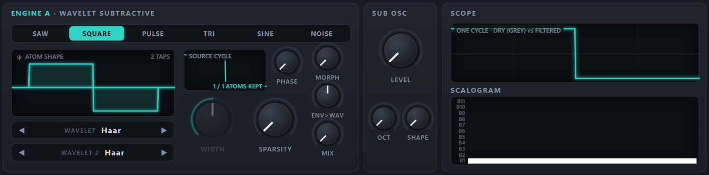
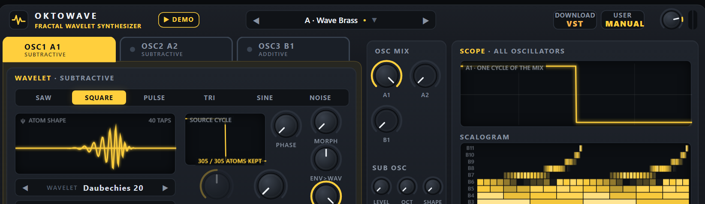

OKTO MULTIWAVE SYNTH · USER MANUAL A
OSCILLATORS A1 · A2Wavelet Subtractive
The oscillators A1 and A2 are subtractive, with a wavelet twist. Each starts from a bright waveform — saw, square, pulse, triangle, sine or a noise cycle — and shapes it with a filter that cuts scales instead of frequencies: a wavelet transform breaks every cycle into 11 octave bands of small building blocks, the atoms; the SCALE FILTER turns the bands up and down, SPARSITY keeps only the most important atoms, the POSITION window confines the filter to one part of the cycle, and SOURCE PHASE moves the wave under the atoms. Okto MultiWave Synth has two subtractive oscillators and one additive one and mixes them: this manual is about the subtractive pair; Manual B describes the additive oscillator.
1Quick start
From closed to sounding in a few steps — pick the column for the version you use.
Web app BROWSER
- Double-click
web/index.htmlto open it in Chrome or Edge (Firefox also works). No installation and no web server are needed — or open the page of the project:pierrearnaudguyot.github.io/Okto-MultiWave-Synth. - Click Play the synth in the welcome window (or Run the demo for a tour of the presets): browsers only allow sound after a click. The status bar turns green: Audio on.
- The app opens on A · Warm Pad. Play with the mouse on the keyboard, the digit keys 1 … 0, the letter row A S D F …, or a MIDI keyboard.
- Click the folder tabs OSC1 A1 OSC2 A2 OSC3 B1 under the header to see each oscillator's cards. The tabs only choose the panel shown: what you hear is set by the three levels in the OSC MIX card (a lit dot on a folder tab says the oscillator is heard).
- Hold a note, show the A1 panel and slowly turn CUTOFF of the SCALE FILTER down. In the SCALOGRAM the rows switch off from the top as bands are removed. Then step the wavelet with ◀ ▶ and sweep again: same filter, different atoms.
Ableton Live VST3 / VST2
- Download the plug-in zip from its release page (the web app's DOWNLOAD VST button opens it) and unzip it. Copy the whole
OktoMultiWaveSynth.vst3folder into your VST3 folder (C:\Program Files\Common Files\VST3;vst\install.batdoes it and asks for administrator rights) or into your VST2 plug-in folder. - In Live open Preferences → Plug-ins, switch on Use VST3 Plug-in System Folders (or Use VST2 Plug-in Custom Folder) and click Rescan.
- In the browser open Plug-ins → OktoPierre → Okto MultiWave Synth and drag it onto a MIDI track. A new instance starts on A · Warm Pad.
- Arm the track and play a MIDI keyboard, or press M to use Live's Computer MIDI Keyboard. The panel is the same as in the web app.
Want to hear what it can do first? ▶ DEMO (web app) plays Beethoven's Appassionata while the presets change every few seconds; EVALUATE SOUNDS (web app and plug-in) lets you hear each of the 1160 new presets and rate them — see Evaluate sounds.
2The panel
The panel is the same in the web app and the plug-in, apart from a few buttons (the web app's DEMO and DOWNLOAD VST, the plug-in's size button, SAVE PRESET and the SYNC buttons of the tempo sync). From top to bottom: the header; the strip of three folder tabs with the plate under it that holds the cards of the oscillator shown (WAVELET, SCALE FILTER, POSITION, TUNE · OWN ENVELOPE · PITCH ENVELOPE) and, at the top right and common to every oscillator, OSC MIX and the SCOPE of the whole sound; the voice FILTER, the AMP ENVELOPE and the MOD ENVELOPE; LFO 1, LFO 2/3 and VOICE; EFFECTS and the PLAY card (CHORD MODE, BASS, TUNING); the keyboard row. With CHORD MODE on, the chord-harp card appears below and the window grows. The credit line “By OktoPierre · beta 0.3.2 · GPL v3” sits under the wheels.
- 1Folder tabs — OSC1 A1 · OSC2 A2 · OSC3 B1: which oscillator's cards are shown on the plate; a lit dot = it is heard (the sound is set by OSC MIX).
- 2Preset browser — ◀ ▶ step through the presets; click the name for the list.
- 3EVALUATE SOUNDS — the listening test of the new presets.
- 4DOWNLOAD VST / SAVE PRESET — the web app links to the plug-in; the plug-in has SAVE PRESET here.
- 5MANUAL — this manual on an A tab, the other one on a B tab.
- 6VOLUME and meter — master level and stereo peak meter.
- 7WAVE — the source waveform of the oscillator.
- 8ATOM SHAPE — one atom of the selected wavelet.
- 9WAVELET · WAVELET 2 — the atom shape; the second one is for WAVELET MORPH.
- 10SOURCE CYCLE — the wave before (grey) and after sparsity; “K / nz atoms kept”.
- 11PHASE — SOURCE PHASE: moves the wave inside the cycle before the analysis.
- 12WIDTH · SPARSITY — pulse width / triangle skew; how many atoms are kept.
- 13OSC MIX — three levels, one per oscillator; below them the SUB OSC.
- 14SCOPE · SCALOGRAM — one cycle of the whole sound (every oscillator that plays) and its atoms in the 11 bands.
- 15SCALE FILTER — a gain for each wavelet band: type, cutoff, slope, resonance, key tracking, envelope, velocity.
- 16POSITION — confines the filter or the detail to part of the cycle.
- 17TUNE · OWN ENVELOPE · PITCH ENVELOPE — the oscillator's own pitch, its own loudness envelope and its pitch envelope.
- 18FILTER — a 24 dB resonant low-pass in every voice (LADDER or OTA), with its own envelope; open by default.
- 19AMP ENVELOPE — loudness of the whole sound.
- 20MOD ENVELOPE — moves the cutoff of every oscillator by its ENV AMT.
- 21LFO 1 — pitch, cutoff, position, wavelet morph, sparsity, resonance and envelope-to-wavelet.
- 22LFO 2 / LFO 3 — each moves one control chosen by TARGET: any scale-filter, wavelet or FILTER control, in every oscillator.
- 23VOICE — portamento, octave, tuning, polyphony, glide, unison.
- 24EFFECTS — saturation, chorus, ping-pong delay and reverb.
- 25CHORD MODE · BASS — shows the chord-harp card and turns the keyboard into chords; BASS adds the low note.
- 26TUNING — the three-position switch of the oriental keyboard: Western, Arabic, Turkish.
- 27Wheels · keyboard — pitch bend, modulation; five octaves.
The header
| Control | What it does |
|---|---|
| ▶ DEMO ▾ (web app) | Plays the default demo, a tour of the presets; the ▾ opens other pieces and "Load a MIDI file…". |
| Folder tabs | The strip of three tabs under the header — OSC1 A1 · SUBTRACTIVE and OSC2 A2 · SUBTRACTIVE (yellow), OSC3 B1 · ADDITIVE (blue) — chooses the oscillator whose cards are shown on the plate below it; a lit dot says the oscillator is heard. It does not change the sound, and does not mark a preset as modified. |
| Preset box | The name of the sound; a dot after it means it was modified since it was loaded. ◀ ▶ step; a click opens the preset browser. |
| EVALUATE SOUNDS | The listening test of the new presets (see Evaluate sounds); it lights up and says STOP while a session runs. |
| DOWNLOAD VST · SAVE PRESET | The web app's button opens the plug-in's release page; in the plug-in the same place holds SAVE PRESET. |
| MANUAL | Opens the manual of the oscillator shown — Manual A on A1 or A2, Manual B on B1; each links to the other. |
| VOLUME · meter | Master level (−36 … +6 dB) and the stereo peak meter. |
Working with the controls
| Gesture | Effect |
|---|---|
| Drag up / down | Changes the value; a full sweep takes about 180 pixels (120 on a drawbar). |
| Shift + drag | Five times finer. |
| Mouse wheel | Steps of 1 % of the range (0.2 % with Shift); one step on stepped controls. |
| Double-click, or Ctrl + click | Resets the control to its default. |
| Hover | The label under a knob shows its value with its unit. |
| Right-click (web app) | MIDI learn: then move a knob or fader on your controller (Esc cancels, Delete unlinks). |
| Greyed-out control | Has no effect with the current settings (WIDTH unless the wave is PULSE or TRI, SEED unless the pattern is RANDOM, the sub oscillator's OCT and SHAPE while its LEVEL is 0). |
3Three oscillators
Okto MultiWave Synth plays up to three oscillators in every voice: A1 and A2 (wavelet subtractive) and B1 (wavelet additive). A new patch plays A1 alone; the three levels in the OSC MIX card decide which oscillators sound and how loud. Each oscillator is a small instrument of its own — its tone, its SCALE FILTER, its POSITION window, its tuning, its own envelope and its pitch envelope — while the AMP ENVELOPE, MOD ENVELOPE, LFOs, VOICE settings, effects and sub oscillator are shared by the whole voice.
- One panel at a time. The folder tabs OSC1 A1 OSC2 A2 OSC3 B1 under the header choose the oscillator: they show one oscillator's cards on the plate (yellow for A1 and A2, blue for B1) while the other two keep their settings and keep sounding. A lit dot on a folder tab says its oscillator is heard (its level is above 0). Switching a tab never changes the sound and never marks a preset as modified. OSC MIX and the SCOPE are common to every oscillator, so they stay in place at the top right whatever tab is shown; the scope and the scalogram draw one cycle of the whole sound (every oscillator that plays, and the sub oscillator, at C4).
- Levels cost nothing at 0. An oscillator whose level is 0 is not computed and its wave tables are not even built, so presets that use two oscillators cost about twice one — not three times. A level is smoothed over 20 ms, so it can be moved while playing.
- Every preset uses at least two oscillators (the 22 TOP Sounds keep their one or two of the Wavelet Synthesizer). The letters in the names of the new presets —
A1A2,A1B1,A1A2B1— say which.
OSC MIX and SUB OSC
| Control | Range · default | What it does | Tip |
|---|---|---|---|
| A1host: A1 Level | 0 – 100 %default 100% | The level of oscillator A1 (subtractive). 100 % on a new patch. | The tone card of each oscillator has the same knob. |
| A2host: A2 Level | 0 – 100 %default 0% | The level of A2 (subtractive). | A second subtractive voice: a detuned copy, an octave, a different wave or filter. |
| B1host: B1 Level | 0 – 100 %default 0% | The level of B1 (additive). | Often the body, the choir or the shimmer on top of the subtractive oscillators. |
| LEVELhost: Sub Level | 0 – 100 %default 0% | The sub oscillator: a sine, triangle or square one or two octaves below the note, unfiltered, once per voice. | Adds weight; it does not go through the scale filters. |
| OCThost: Sub Octave | −1 · −2default −1 octave | −1 or −2 octaves. | |
| SHAPEhost: Sub Shape | SIN · TRI · SQRdefault Sine | Sine, triangle or square. |
TUNE, OWN ENVELOPE and PITCH ENVELOPE
The wide card at the bottom of the plate belongs to the oscillator shown (the folder tab says which). It is what turns three oscillators into a sound with a front and a body.
| Control | Range · default | What it does | Tip |
|---|---|---|---|
| OCTAVEhost: A1 Octave | −3 … +3default 0 | Transposes the oscillator by whole octaves. | A2 an octave down under A1 is the classic "saw + sub saw". |
| SEMIhost: A1 Semitones | −12 … +12 semitonesdefault 0 st | Transposes by semitones. | +7 gives a fifth; +12 an octave. |
| FINEhost: A1 Fine Tune | −100 … +100 centsdefault 0 ct | Fine tuning in cents. | ±6–15 cents between two oscillators gives a beating, chorused sound. |
| OWN ENVhost: A1 Own Envelope | OFF · ONdefault Off | Switches the oscillator's own envelope on. The oscillator is then multiplied by its own ADSR as well as the AMP ENVELOPE, so it can only be shorter than the voice: a short decay makes it a percussive attack (a click, a pluck, a breath); a slow attack makes it fade in under the others. | The ADSR display next to it draws the shape. |
| ATTACKhost: A1 Env Attack | 1 ms – 10 sdefault 1.0 ms | Attack of the own envelope (linear). | |
| DECAYhost: A1 Env Decay | 1 ms – 10 sdefault 250 ms | Decay to the sustain level (exponential; the time to fall by 60 dB). | 20–80 ms for a click, 200–600 ms for a pluck. |
| SUSTAINhost: A1 Env Sustain | 0 – 100 %default 0% | Sustain level. | 0 % makes a one-shot attack that dies by itself. |
| RELEASEhost: A1 Env Release | 1 ms – 10 sdefault 150 ms | Release after the key is released. | |
| PITCH ENVhost: A1 Pitch Env Amount | −48 … +48 semitonesdefault 0 st | The pitch envelope: the oscillator starts this many semitones away from the note and glides to it (negative = it starts below). | +12 … +30 with a short TIME is a kick or a zap; a small value is a "blip" on every note. |
| TIMEhost: A1 Pitch Env Time | 5 ms – 2 sdefault 80 ms | How long the glide takes to come back to the note: exponential, the time to fall by 60 dB (half of the distance is covered in about a tenth of it). |
The table shows the ranges and defaults of A1's controls; A2 and B1 have the same ones. The own envelope has no effect while its switch is off.
Ideas, and presets to study
| Idea | How | Look at |
|---|---|---|
| A percussive attack | One oscillator with its own envelope: a noise cycle played low (OCTAVE −2 or −3) through a high-pass at band 6–9, DECAY 20–40 ms, SUSTAIN 0; the other oscillator is the body. | 002 A1A2 · Pick Bass, 190 A1A2 · Snare, 193 A1A2 · Clap |
| A pitch drop | A sine with PITCH ENV +12 … +30 semitones and a TIME of 30–60 ms. | 189 A1A2 · Kick, 004 A1A2 · Sub Drop, 198 A1B1 · Tom |
| A fat pair | Two oscillators of the same kind a few cents apart, or an octave apart with different cutoffs. | 005 A1A2 · Reese Duo, 001 A1A2 · Deep Saw Bass, 075 A1A2 · Velvet Pad |
| Additive body, subtractive attack | B1 for the body (drawbars, atoms), A1 as a short, bright start. | 058 A1B1 · Rhodes Warm, 062 A1B1 · Dream Keys, 120 A1B1 · Solo Violin |
| Two LFOs on the wavelet | LFO 2 on one wavelet control (the SPARSITY, the window position, the SOURCE PHASE …), LFO 3 on another, at unrelated speeds; then set their amounts to 0 one at a time to hear what each does. | 501 A1A2 · Abyss Sweep Signal, 502 A1B1 · Resonance Storm, 504 A1B1 · Taper & Vibes |
| A real filter on top | The voice FILTER with an envelope: a low cutoff, some RESO and a positive ENV AMT with a short decay is the classic synth bass or pluck; aim LFO 3 at FILTER CUTOFF for a wah. | 554 A1A2 · Hollow Bass, 559 A1B1 · Amber Morph, 572 A1A2B1 · Stair & Tap |
4The subtractive oscillators A1 · A2
An A oscillator creates its raw material from a source wave: draw the cycle, analyse it, optionally thin out the atoms, split it into 11 band layers (plus a "dry" layer: their sum, the unfiltered wave). Every voice then plays these layers with gains set by the SCALE FILTER.
Every oscillator plays one cycle of 2048 samples, analysed by a periodic wavelet transform into 11 bands: band b has 2b−1 atoms and covers about one octave of harmonics (band 1 the fundamental, band 2 the 2nd harmonic, band 3 harmonics 3–4, band 4 harmonics 5–8 …). The analysis is pitch-synchronous, so the bands follow the note. To keep high notes alias-free each band is stored in octave-wise band-limited versions: the finest bands only exist on low notes — at middle C only bands 1–7 are played, at C2 bands 1–9. The SCALOGRAM draws the atoms of the 11 bands of the oscillator shown (B1 at the bottom).
| Control | Range · default | What it does | Tip |
|---|---|---|---|
| WAVEhost: Source Wave | SAW · SQUARE · PULSE · TRI · SINE · NOISEdefault Saw | The waveform that is analysed: one cycle, its average removed and its peak normalised. | SAW and NOISE have detail in every band: the most to filter. |
| WIDTHhost: Source Width | 2 – 98 %default 50% | Only for PULSE and TRI (greyed out otherwise). PULSE: the part of the cycle spent high. TRI: where the peak sits — 50 % is symmetric. | With Haar, 25 %, 50 % and 75 % leave almost nothing to filter. |
| SPARSITYhost: Sparsity | 0 – 100 %default 0% | Keeps only the largest atoms of the cycle and silences the rest: 0 % keeps every atom the wave needs, 50 % about the square root of that number, 100 % a single atom. The SOURCE CYCLE display reads “K / nz ATOMS KEPT”. | A lossy-codec timbre: glassy, slightly digital tones. Each change rebuilds the tables (crossfaded). |
| PHASEhost: Source Phase | 0 – 360°default 0° | SOURCE PHASE: moves the wave inside the cycle before the analysis. The wavelet transform is not shift-invariant, so the same wave at another phase is made of other atoms and the filter, SPARSITY and the window act on it differently. | Strong with Haar, Daubechies 2 and 4; weak with Daubechies 20. LFO 2 can move it (TARGET PHASE). |
| WAVELEThost: Wavelet | Haar · DB2 · DB4 · DB8 · Sym8 · Coif3 · DB20default Daubechies 4 | The shape of the atoms. | Changing it while holding a note crossfades. |
| Wave | One cycle | Character |
|---|---|---|
| SAW | Ramps down across the cycle, jumps back up at the start. | All harmonics; fine atoms only at the jump. The classic subtractive source. |
| SQUARE | High for the first half, low for the second. | Odd harmonics, hollow. With Haar it is a single atom: nothing to filter. |
| PULSE | High for WIDTH of the cycle. | Thinner and more nasal away from 50 %. |
| TRI | Rises to the peak at WIDTH × 360°, then falls. | Soft, flute-like. |
| SINE | One sine cycle. | Little to filter; a pure reference, or a sub body. |
| NOISE | One fixed random cycle. | Played at the note's pitch it is a buzzy, pitched timbre, not hiss. A noise oscillator is band-limited at the note: for dense, loud noise (hats, clicks) play it low (OCTAVE −2 or −3) and use the high bands. |
The square wave that will not filter
With the Haar wavelet the band-1 atom is one cycle of a square wave, so a SQUARE analysed with Haar is exactly one atom: the low-pass has nothing to remove. For progressive sweeps on a square choose a smooth wavelet (Daubechies 8, Symlet 8, Daubechies 20), or use the effect on purpose.


Sparsity
Keeping only the K largest atoms is what wavelet lossy codecs do to save bits; here it is a timbre control. The range is relative to the wave: a SAW analysed with Daubechies 8 has only 96 non-zero atoms (a straight ramp needs no fine atoms, only the jump does). SPARSITY keeps K = nz1 − SPARSITY of them, so the knob does something over its whole range for every wave; sources that need few atoms change in clear jumps.

The wavelet chooses the atom
Each oscillator has its own WAVELET (the step control under the atom picture): seven classic wavelets from the 2-tap Haar step to the 40-tap Daubechies 20. Short wavelets are precise in time — sharp edges, crisp POSITION window borders — but their bands overlap; long wavelets separate the octaves cleanly. For sweeps that sound like a conventional filter choose Daubechies 8 or longer; for stepped, digital colours Haar or Daubechies 2.

| Wavelet | Taps | Character |
|---|---|---|
| Haar | 2 | A square step up and down: sharp, digital, 8-bit; every removed band halves the number of steps of the wave. |
| Daubechies 2 | 4 | Short and lopsided: asymmetric ringing, gritty and slightly metallic. |
| Daubechies 4 | 8 | A good all-rounder with mild, asymmetric ringing. |
| Daubechies 8 | 16 | Longer and smoother; filter sweeps start to sound analogue. |
| Symlet 8 | 16 | Almost symmetric: cleaner, more balanced edges than Daubechies 8. |
| Coiflet 3 | 18 | Nearly symmetric and very smooth for its length. |
| Daubechies 20 | 40 | Long and almost sine-like: each band is close to a pure octave of harmonics — the smoothest, most "Fourier-like" filtering. |
WAVELET MORPH builds every oscillator with a second wavelet too (WAVELET 2) and moves between the two with MORPH, LFO 1 (its WAVELET knob) and the mod envelope (ENV>WAV); it acts on each oscillator that plays and is heard where the wavelet shapes the sound.
5Scale filter and position window
The SCALE FILTER does not cut frequencies: it gives each of the 11 bands its own gain and the sound is the sum of the band layers. A low-pass removes the fine atoms and keeps the coarse ones. There is no phase shift and no feedback, and the character of a sweep depends on the wavelet: with Haar every removed band halves the number of steps of the wave, with Daubechies 20 the bands are nearly pure octaves. Every oscillator has its own filter and window; the tabs show the cards of the oscillator selected. The table lists the controls of A1; the other oscillators of the same kind have the same ones.
SCALE FILTER
| Control | Range · default | What it does | Tip |
|---|---|---|---|
| TYPEhost: Filter Type | LOW-PASS · HIGH-PASS · BAND-PASS · BAND-REJdefault Low-pass | Shape of the gain curve over the bands: LOW-PASS keeps the coarse bands, HIGH-PASS the fine ones, BAND-PASS about one band around the cutoff, BAND-REJ removes the band at the cutoff. | Band-pass on a low cutoff gives thin, nasal tones. |
| CUTOFFhost: Cutoff | 0 – 12default band 12.0 | Where the filter acts, in bands: 1 = the fundamental, 11 = the finest atoms, 12 = beyond them (a low-pass is fully open). | At middle C only bands 1–7 exist: cutoffs 8–12 sound the same there. |
| SLOPEhost: Slope | 6 – 96 dB/banddefault +24.0 dB/band | How steeply the bands beyond the cutoff are attenuated; one band ≈ one octave, so 24 dB/band behaves like a 24 dB/octave filter. For BAND-REJ it sets the notch width. | Steep slopes act like faders that switch bands on and off. |
| RESOhost: Resonance | 0 – 24 dBdefault 0.0 dB | Boosts the bands around the cutoff by up to 24 dB. A band boost, not feedback: it never self-oscillates. | Resonance adds level: watch the meter. |
| KEY TRKhost: Key Tracking | 0 – 100 %default 100% | 100 %: the cutoff follows the note. 0 %: it stays at a fixed frequency (C4 = 261.63 Hz). | 50 % is the familiar "darker as you go up". |
| ENV AMThost: Envelope Amount | −11 … +11 bandsdefault 0.0 bands | How far the MOD ENVELOPE moves this oscillator's cutoff: −11 … +11 bands at its peak. | Each oscillator has its own amount: the same envelope can open one and close another. |
| VEL AMThost: Velocity Amount | −6 … +6 bandsdefault 0.0 bands | Velocity → cutoff: the shift is amount × (velocity − 1). | +2 … +3 bands: soft notes darker. |

The cutoff actually used by a voice, recomputed every 32 samples: cutoff = CUTOFF + ENV AMT × mod envelope + LFO 1 CUTOFF × LFO 1 (+ LFO 2 and LFO 3 aimed at CUTOFF) + VEL AMT × (velocity − 1) + (1 − KEY TRK) × log₂(261.63 Hz ÷ note frequency). (The voice FILTER of the next chapters is another filter, on frequencies: do not mix them up.)
POSITION window
Wavelet atoms live at definite places in the cycle, so an A oscillator can filter one part of the cycle and leave the rest untouched: soften only the falling edge of a square, or darken only the reset of a saw.
| Control | Range · default | What it does | Tip |
|---|---|---|---|
| POSITIONhost: Position | 0° – 360°default 0° | Centre of the window inside the cycle, 0° … 360°. | 180° is the falling edge of SQUARE. |
| WIDTHhost: Window Width | 5 – 100 %default 50% | How much of the cycle the window covers. | Narrow windows are automatically widened on high notes (no aliasing). |
| DEPTHhost: Window Depth | 0 – 100 %default 0% | How strongly the window confines the filter: 0 % = off (the filter acts everywhere); 100 % = the filter acts only inside the window, outside it the dry cycle plays. | LFO 1 and LFO 2 can move the window. |

6Envelopes
Two ADSR envelopes run for every voice, plus the own envelope and pitch envelope of each oscillator (see TUNE, OWN ENVELOPE and PITCH ENVELOPE). Attacks are linear; decays and releases are exponential (the time given is the time to fall by 60 dB).
AMP ENVELOPE
| Control | Range · default | What it does | Tip |
|---|---|---|---|
| ATTACKhost: Amp Attack | 1 ms – 10 sdefault 3.0 ms | Rise from silence to full level. | 1–5 ms is click-free for most sounds; 0.3–1 s for pads. |
| DECAYhost: Amp Decay | 1 ms – 10 sdefault 400 ms | Fall from full level to the sustain level. | For plucks set SUSTAIN 0 % and use DECAY as the note length. |
| SUSTAINhost: Amp Sustain | 0 – 100 %default 80% | Level held while the key (or the sustain pedal) is down. | |
| RELEASEhost: Amp Release | 1 ms – 10 sdefault 300 ms | Fade after the key is released. The voice is freed at −100 dB. | Long releases overlap: raise VOICES for pads. |
| VELOCITYhost: Amp Velocity | 0 – 100 %default 50% | How much velocity sets the loudness. 0 % = every note equally loud. | The computer keyboard plays at velocity 80 %. |
MOD ENVELOPE
It moves the cutoff of every oscillator by that oscillator's ENV AMT (so with ENV AMT at 0 it does nothing there), and the WAVELET MORPH by ENV>WAV. It ignores velocity — use VEL AMT for that.
| Control | Range · default | What it does | Tip |
|---|---|---|---|
| ATTACKhost: Mod Attack | 1 ms – 10 sdefault 3.0 ms | Attack of the modulation envelope. | A slow mod attack gives brassy swells. |
| DECAYhost: Mod Decay | 1 ms – 10 sdefault 500 ms | Decay to the mod sustain level. | |
| SUSTAINhost: Mod Sustain | 0 – 100 %default 30% | Mod level held while the key is down. | |
| RELEASEhost: Mod Release | 1 ms – 10 sdefault 500 ms | Mod release. |
7LFO 1, LFO 2 and LFO 3
Three LFOs: LFO 1, and LFO 2 and LFO 3, which share a card (the small 2 | 3 switch next to its title shows one or the other). They are shared by all voices and oscillators and run freely (not restarted by new notes): in a chord every voice moves together. For a movement that starts with each note use the MOD ENVELOPE.
LFO 1
| Control | Range · default | What it does | Tip |
|---|---|---|---|
| SHAPEhost: LFO 1 Shape | SINE · TRI · SAW · SQR · S&Hdefault Sine | SINE, TRI, SAW, SQR or S&H (sample & hold: a new random value per cycle). | |
| RATEhost: LFO 1 Rate | 0.05 – 20 Hzdefault 4.0 Hz | Speed, one cycle per 20 s to 20 per second. In the plug-in, with SYNC on, a note value at the host's tempo. | 5–6 Hz for vibrato. |
| PITCHhost: LFO 1 to Pitch | 0 – 100 centsdefault 0 ct | Vibrato depth in cents (the mod wheel adds up to 50 more). | |
| CUTOFFhost: LFO 1 to Cutoff | 0 – ±6 bandsdefault ±0.0 bands | Moves the cutoff of every oscillator by up to ± this many bands. | |
| POSITIONhost: LFO 1 to Position | 0 – ±180°default ±0° | Moves the POSITION window of every oscillator by up to ± this many degrees. | Only audible where the window's DEPTH is above 0 %. |
| WAVELEThost: LFO 1 to Wavelet Morph | 0 – 100 %default 0% | Moves the WAVELET MORPH. | Needs a WAVELET 2 different from the oscillator's WAVELET. |
| SPARSITYhost: LFO 1 to Sparsity | 0 – 100 %default 0% | Moves the SPARSITY of every subtractive oscillator by up to ± this share of the range: the atoms that are kept come and go, and the timbre swings between a rich tone and a few atoms. | Starts to show where the wavelet is not Haar (a Daubechies 8 saw has only 96 atoms). The tables are built at nine sparsities while this is above 0 %. |
| RESOhost: LFO 1 to Resonance | 0 – 24 dBdefault 0.0 dB | Moves the RESO of every scale filter by up to ± this many dB (kept between 0 and 24 dB): the resonant peak of the filter pulses. | Needs a cutoff inside the sound (bands 3–8) and a little resonance to start from. |
| ENV>WAVhost: LFO 1 to Envelope>Wavelet | 0 – 100 %default 0% | Makes the reach of the MOD ENVELOPE on the WAVELET MORPH (ENV>WAV) swing: ENV>WAV + this amount × LFO 1. | Needs a WAVELET 2 different from the oscillator's WAVELET, and an ENV>WAV above 0 or a MORPH to move. |
LFO 2 and LFO 3
LFO 2 and LFO 3 are the same LFO twice: each moves one control, in every oscillator at once, by the same amount: the one chosen in its TARGET menu — CUTOFF, SLOPE, RESO, KEY TRK, ENV AMT or VEL AMT of the scale filters, POSITION, WIDTH or DEPTH of the windows, the PHASE, SPARSITY or SRC WIDTH of the subtractive oscillators, the TILT, ODD BARS, EVEN BARS or SCALE SUS of the additive ones, the MORPH between two wavelets, or the FILTER CUTOFF or FILTER RESONANCE of the voice FILTER: every control of the wavelet oscillators, of the scale filter and of the voice filter. Each oscillator keeps its own base value; the LFO moves them in step. The two LFOs can aim at different controls (two independent movements) or at the same one (their moves add up). A target acts on every oscillator that has the control, and cannot be limited to one: aim it at a control that only one kind has (SPARSITY, PHASE or SRC WIDTH for the subtractive oscillators; TILT, ODD BARS, EVEN BARS or SCALE SUS for the additive one) to move that kind only.
| Control | Range · default | What it does | Tip |
|---|---|---|---|
| TARGEThost: LFO 2 Target | CUTOFF · SLOPE · RESO · KEY TRK · ENV AMT · VEL AMT · POSITION · WIDTH · DEPTH · PHASE · SPARSITY · SRC WIDTH · TILT · ODD BARS · EVEN BARS · SCALE SUS · MORPH · FLT CUT · FLT RESOdefault Cutoff | What LFO 2 moves (the menu next to its title; the mouse wheel steps through it). LFO 3 has the same menu. | LFO 1 already has CUTOFF and POSITION: give LFO 2 another target for two independent movements. |
| SHAPEhost: LFO 2 Shape | SINE · TRI · SAW · SQR · S&Hdefault Sine | The same five shapes as LFO 1. | |
| RATEhost: LFO 2 Rate | 0.05 – 20 Hzdefault 1.0 Hz | Speed, independent of LFO 1; note values with SYNC in the plug-in. | A rate that does not divide LFO 1's makes the two drift against each other. |
| AMOUNThost: LFO 2 Amount | −100 … +100 %default 0% | How far the target moves: up to ± this share of half its range, kept in range (FILTER CUTOFF: half of its ten octaves, so 30 % is about ± 1.5 octaves). 0 % (the default) switches LFO 2 off. | Start around 20–30 %. |
| TARGEThost: LFO 3 Target | CUTOFF · SLOPE · RESO · KEY TRK · ENV AMT · VEL AMT · POSITION · WIDTH · DEPTH · PHASE · SPARSITY · SRC WIDTH · TILT · ODD BARS · EVEN BARS · SCALE SUS · MORPH · FLT CUT · FLT RESOdefault Cutoff | What LFO 3 moves: the same menu as LFO 2. When both aim at the same control their moves add. | Use LFO 3 for a second control of the wavelet oscillators: LFO 2 on SPARSITY, LFO 3 on the WINDOW position, for instance. |
| SHAPEhost: LFO 3 Shape | SINE · TRI · SAW · SQR · S&Hdefault Sine | The same five shapes. | |
| RATEhost: LFO 3 Rate | 0.05 – 20 Hzdefault 1.0 Hz | Speed, independent of the two other LFOs; note values with SYNC in the plug-in. | Rates that do not divide each other make the LFOs drift apart. |
| AMOUNThost: LFO 3 Amount | −100 … +100 %default 0% | How far the target moves, as for LFO 2. 0 % (the default) switches LFO 3 off. |
PHASE, SPARSITY and SRC WIDTH (SOURCE WIDTH: the pulse width of a PULSE source or the skew of a TRI one) change what the wavelet transform sees, so the subtractive oscillators' tables are built at several values — 12 phases round the cycle, 9 sparsities from 0 to 100 %, 9 widths from 2 to 98 % (about 1 MB per set) — and each voice crossfades between the two nearest: a smooth scan through the timbres. At AMOUNT 0 nothing extra is built. One kind of scan per oscillator at a time: SPARSITY (from LFO 1, LFO 2 or LFO 3) comes first, then PHASE, then SRC WIDTH. TILT, ODD BARS, EVEN BARS and SCALE SUS move the additive oscillators' drawbars (odd = bands 1, 3, 5 …; even = bands 2, 4, 6 …) and the level their bands decay to; MORPH adds to the WAVELET MORPH position. FILTER CUTOFF moves the cutoff of the voice FILTER (in octaves: the whole range is ten octaves) and FILTER RESONANCE its resonance; either one switches the filter on, even while its own settings are open.
SuperModulation
The idea of the instrument is that every timbre control acts on the scales of one cycle of the wave — and so can an LFO, while the note sounds. Moving the cutoff of a scale filter, the resonance, the SPARSITY, the window, the SOURCE PHASE or the morph between two wavelets does not sweep a Fourier filter: the harmonics are re-coupled according to the wavelet, so the timbre swims in a way an ordinary filter sweep does not. The SuperModulation section of the presets (the first one in the lists, 412 sounds) is made of such sounds: two oscillators of very different character, and LFO 1, LFO 2 and LFO 3 each moving one to three of these controls at unrelated speeds. In every preset of beta 0.3, LFO 2 and / or LFO 3 move wavelet controls — mostly of the subtractive oscillators — and the SuperModulation ones use both. Open one, then set the amounts of the LFOs to 0 one by one to hear what each does.
Tempo sync (plug-in only)
In the plug-in a SYNC button sits at the right of the LFO 1 title, on the LFO 2/3 card (one for each of the two LFOs) and at the delay heading. Lit, the RATE (or the delay's TIME) becomes a note value at the host's tempo (120 BPM when the host gives none) and follows its tempo changes. The note values run from 4/1 to 1/32 for the LFOs and 1/32 to 1/1 for the delay (T = triplet, D = dotted). SYNC sets the speed only; the LFO is not restarted on the beat. SYNC is off by default, and the web app has none (a browser page has no tempo).
8Voice, filter and effects
VOICE
| Control | Range · default | What it does | Tip |
|---|---|---|---|
| PORTAMENTOhost: Portamento | OFF · POLY · LEGATOdefault POLY | When notes glide; GLIDE sets how long (0 = nothing glides). POLY: every voice glides from its own previous note, so chord changes glide voice by voice. LEGATO: only while another key is held. | LEGATO for expressive leads, POLY for gliding chords. |
| OCTAVEhost: Octave | −3 … +3default 0 | Transposes the whole instrument by octaves (each oscillator also has its own TUNE). | |
| FINEhost: Fine Tune | −100 … +100 centsdefault 0 ct | Fine tuning in cents. | |
| VOICEShost: Voices | 1 – 16default 8 | Notes sounding at once; 1 = monophonic legato with last-note priority. | Pads need 8 or more. |
| GLIDEhost: Glide | off – 2 sdefault off | Portamento time. | 30–80 ms for leads. |
| UNISONhost: Unison | 1 – 4default 1 | Stacked copies of every note (1–4). | Cost = voices × unison × oscillators. |
| DETUNEhost: Unison Detune | 0 – 50 centsdefault +12 ct | Spread of the unison copies in cents. | 8–15 cents for warmth. |
| STEREOhost: Stereo Width | 0 – 100 %default 70% | Spreads the unison copies across the stereo field. | No effect with UNISON 1. |
When all voices are busy a new note takes the oldest released voice first, then the oldest held one. Each note plays at about −8 dB to leave headroom for chords. A preset can switch mono ↔ poly; a note off always finds its voice.
FILTER
The FILTER card (under the plate, left of the AMP ENVELOPE) is a conventional filter in every voice: a four-pole (24 dB per octave) resonant low-pass that works on the voice after its oscillators are mixed and before its AMP ENVELOPE. It cuts frequencies, on top of the SCALE FILTERs, which cut scales. Two characters, chosen with the LADDER | OTA switch: LADDER saturates at every stage — dark and gritty, and the resonance thins the low end as it rises; OTA saturates only the input of its feedback loop and keeps part of the low end — rounder and smoother. The cutoff a voice uses is CUTOFF × 2ENV AMT × 8 × FILTER ENVELOPE + KEY TRK × (note − C4) ÷ 12 + LFO 2 + LFO 3 (the exponent is in octaves). It is open by default (CUTOFF at its maximum, no resonance, no drive, no envelope): then it is not even computed, and every sound made before it exists is unchanged. Turning any of its controls, or aiming an LFO at it, switches it on.
| Control | Range · default | What it does | Tip |
|---|---|---|---|
| TYPEhost: Filter Type | LADDER · OTAdefault Ladder 24 dB | LADDER: every stage saturates, the resonance takes the low end away; OTA: only the input of the loop saturates, the low end is partly kept. | LADDER for gritty basses and leads, OTA for rounder pads and keys. |
| CUTOFFhost: Filter Cutoff | 20 – 20000 Hzdefault 20000.0 Hz | The frequency above which the sound is attenuated (24 dB per octave); exponential scale, 20 Hz to 20 kHz. At the top it is open. | Play a note and sweep it; add RESO for the classic wah. |
| RESOhost: Filter Resonance | 0 – 100 %default 0% | Feeds the output back to the input: a peak at the cutoff. At 100 % the filter is just above the point where it sings by itself. | The resonance adds level: watch the meter. |
| DRIVEhost: Filter Drive | 0 – 100 %default 0% | Saturates the sound before the filter (a tanh, level-compensated): 0 % = clean. | With a resonance it makes the filter growl. |
| KEY TRKhost: Filter Key Tracking | 0 – 100 %default 0% | How much the cutoff follows the note (100 % = one octave of cutoff per octave of pitch, from C4). | High notes stay as bright as low notes. |
| ENV AMThost: Filter Envelope Amount | −100 … +100 %default 0% | How far the FILTER ENVELOPE (the ADSR next to it) moves the cutoff: up to ± 8 octaves. Negative values close the filter as the envelope rises. | Combine a moderate cutoff with a positive ENV AMT and a short decay for the classic "pluck" of a synth bass. |
| ATTACKhost: Filter Env Attack | 1 ms – 10 sdefault 5.0 ms | Attack of the FILTER ENVELOPE. | A slow attack opens a pad. |
| DECAYhost: Filter Env Decay | 1 ms – 10 sdefault 300 ms | Decay to the sustain level. | |
| SUSTAINhost: Filter Env Sustain | 0 – 100 %default 50% | Level the envelope holds while the key is down (0 % = the filter closes again, 100 % = it stays open). | |
| RELEASEhost: Filter Env Release | 1 ms – 10 sdefault 300 ms | Release. |
Each voice has its own filter and its own FILTER ENVELOPE, started by its note; the cutoff glides smoothly from block to block, so it does not zipper. LFO 2 and LFO 3 can move the CUTOFF (FILTER CUTOFF) and the RESONANCE (FILTER RESONANCE) of every voice together.
EFFECTS
After the voice FILTER (above), in the order of the sound: saturation → string-machine triple chorus → ping-pong delay → reverb → DC blocker → master volume → soft limiter (never above 0 dBFS).
| Control | Range · default | What it does | Tip |
|---|---|---|---|
| DRIVEhost: Drive | 0 – 100 %default 0% | Saturation: a smooth tanh soft-clipper driven by up to +24 dB, level-compensated. 0 % = bypassed. | 20–40 % thickens basses. |
| CHORUShost: Chorus | 0 – 100 %default 0% | Chorus amount: three delay lines swept by a slow and a fast LFO, 120° apart, spread left / centre / right. | Widens pads, strings and organs. |
| RATEhost: Chorus Rate | 0.1 – 3 Hzdefault 0.70 Hz | Speed of the chorus LFOs. | |
| DEPTHhost: Chorus Depth | 0 – 100 %default 60% | Depth of the sweep. | |
| TIMEhost: Delay Time | 10 ms – 1 sdefault 350 ms | Delay time (up to 4 s). Changing it while echoes ring makes them glide in pitch. With SYNC on in the plug-in, a note value. | |
| FEEDBACKhost: Delay Feedback | 0 – 90 %default 35% | Feedback: more repeats. The echoes alternate left and right and get darker. | Above 70 % the repeats last for seconds. |
| DLY MIXhost: Delay Mix | 0 – 100 %default 0% | Level of the echoes. | |
| SIZEhost: Reverb Size | 0 – 100 %default 60% | Reverb decay, from a small room to a long hall. | |
| REV MIXhost: Reverb Mix | 0 – 100 %default 0% | Level of the reverb. | 15–25 % for most sounds; 40 % + for pads. |
| VOLUMEhost: Master Volume | −36 … +6 dBdefault −3.0 dB | Master output level, the small knob in the header. | Lower it when the meter sits at the top. |
The smoothing of the delay, its filter, the master level and the reverb damping have the same time constants at 44.1, 48 and 96 kHz. An instance with nothing sounding and no echo left to come does not compute its effects (it costs nothing while idle).
9Chord mode
The CHORD MODE button of the PLAY card (above the keyboard, at the right) turns the keyboard into a chord harp: the panel grows and the CHORD KEYBOARD card appears below it. With CHORD MODE off the card is not shown and the keyboard plays plain notes.

- One octave chooses the chord type and makes no sound: KEYS OCT (C3–B3 by default, tinted purple on the keyboard). Every key above it plays the whole chord with one finger; keys pressed while the root is held play as themselves; keys below it play a bass line.
- Twelve pads in the layout of the selector octave — Maj, Min, 7, m7, Maj7, Sus2, Sus4, Dim, Aug, 5, Add9, Note: the white keys carry the major and bright chords, the black keys the minor, altered or bare ones. A click on a pad chooses the type and switches CHORD MODE on. 22 chord types in all (the Chord Type parameter has the others: 6, m6, m7b5, dim7, 9, m9, maj9, 7sus4, mMaj7, 6/9).
- VOICING: STACKED (root + intervals) or FOLDED (the chord's notes inside the octave of the root, as on an electronic chord harp); STRUM (0–100 ms) starts the notes one after the other; the strum plate strums the chord with the mouse.
- BASS (the button under CHORD MODE, on by default) adds a bass note with every chord: the root two octaves below, a little louder (+3 dB), never lower than C1. A chord keeps the level of a triad whatever its size (the notes of a seventh with its bass are turned down a little), so chords never press on the limiter.
- The chord follows the left hand. Hold a note with the right hand and press another chord on the selector octave: the held chord changes at once, even for the note already pressed. Only the notes of the chord now played sound — the notes that are not in the new chord fade out in a few milliseconds, the ones the two chords share go on without being played again. The left hand has a memory: the last chord chosen stays chosen after its key is released and applies to the next right-hand note. Clicking a pad, VOICING or BASS while a note is held changes the held chord the same way.
- The chord's notes are ordinary notes: sustain, portamento, voice allocation and every sound parameter work as usual, and a chord never uses more voices than VOICES. A note shared by the chord and a held key sounds until both release it.
- The chord settings are plug-in parameters (automatable, saved with the Live Set) but never part of a preset: loading a sound does not change how you play. A selector key updates the Chord Type parameter.
10Oriental keyboard
Beta 0.2 adds an oriental keyboard with quarter tones, as on the oriental keyboards of Yamaha. The three-position switch TUNING sits in the PLAY card, to the right of CHORD MODE:
- WEST — equal temperament, as always (the default).
- ARAB — the Arabic tuning: 24 tones to the octave, the quarter tone being 50 cents. The keys that are half-flat in the scale chosen are lowered by a quarter tone.
- TURK — the Turkish tuning of the makams: 53 commas to the octave (a comma is 22.6 cents; the values of the Arel-Ezgi-Uzdilek system), so a third or a seventh is a comma or two away from the Western one.
Outside WEST two more controls show in the PLAY card, under the switch: MAQAM chooses the scale (Rast, Bayati / Uşşak, Hijaz / Hicaz, Saba, Nahawand / Buselik) and TONIC the key it starts on (the scale is moved to it: Rast on D is Rast starting at D). The keys the tuning moves carry a small amber arrow on the keyboard (pointing down: lower than the piano key). A key that is not a degree of the scale keeps its piano pitch, so the sharps and flats you need stay in tune.
- Every note follows the tuning: the keys, the chord harp's notes (a chord on Rast has its half-flat third), the sub oscillator, the notes a MIDI file plays — except the demo and EVALUATE SOUNDS, which always play in equal temperament so that they are not out of tune with the music.
- TUNING, MAQAM and TONIC are playing settings, like CHORD MODE: they are automatable parameters, saved with the Live Set, and never part of a preset.
- Examples. Rast on C, Arabic: play C D E F G A B C — E and B are a quarter tone low, the rest is as on the piano. Bayati on D: D then E, a quarter tone flat, F G A B♭ C. Hicaz on D, Turkish: D E♭ F♯ G A B♭ C with the commas of the Turkish system.
The tunings are the usual approximations of keyboards (half-flat = −50 cents; Turkish values rounded to a comma): they do not replace an oud or a ney, but they make the characteristic intervals playable on a piano keyboard. In the Arabic tuning Rast retunes the third and the seventh, Bayati and Saba the second degree, and Hijaz and Nahawand use the piano's semitones (nothing to retune); the Turkish tuning gives all five their commas.
11Presets
Okto MultiWave Synth has 1182 factory presets: OktoPierre's 22 TOP Sounds (unchanged from the Wavelet Synthesizer beta 0.7: they sound exactly as there, from B · Mirror Sub Bass to A · Laser Sweep) and 1160 new presets: 852 of beta 0.3 (numbers 501–1400: 71 in each of the 12 categories), in which LFO 2 and / or LFO 3 move wavelet controls of the oscillators (mostly of the subtractive ones) and about two in three also use the new voice FILTER; 175 of beta 0.2 (numbers 201–500), in which LFO 1 and LFO 2 move the controls of the wavelet oscillators and A1 and A2 are very different from each other; and 133 of beta 0.1 (001–200, unchanged), sorted into the categories SuperModulation, Bass, Lead, Keys, Organ, Pad, Strings, Brass & Wind, Pluck, Bells & Mallets, FX and Drums & Perc. Beta 0.3 removed the second additive oscillator (B2): the presets that used it left the list, and their numbers are not used again, so the ratings you gave to the others stay valid. A new preset's name is its number, the oscillators it uses (A1A2, A1B1, A1A2B1 …) and a title: 501 A1A2 · Abyss Sweep Signal. Every new preset uses at least two oscillators, often one of them as the attack; their loudness is matched to the TOP Sounds. The SuperModulation category (412 sounds) holds the ones whose life is the LFOs moving the scale filter, the sparsity, the window, the source phase, the morph and the additive scales (see SuperModulation). The preset browser at the right follows the preset box: step with ◀ ▶ or the name's menu and it shows the category of the sound and the sound itself. ◀ ▶ step through them in that order; clicking the name opens the list (the preset browser at the right of the panel: TOP Sounds and the categories, one click plays a sound, the arrow keys ↑ ↓ ← → too).
Saving your own sounds
- Web app. The buttons at the right of the status bar: Save preset keeps the sound in this browser's storage (the USER PRESETS group), Export downloads it as a
.jsonfile, Import loads one. User presets live in that browser profile only: use Export for anything you want to keep. - Plug-in. See The plug-in: SAVE PRESET, the user bank, the presets file. You can also keep sounds with Live (a device preset, an Instrument Rack, the Live Set).
All the presets
★ = one of OktoPierre's TOP Sounds. The oscillators are the ones whose level is above 0.
| Preset | Oscillators | Sound |
|---|---|---|
| SuperModulation · 412 | ||
| 501 A1A2 · Abyss Sweep Signal | A1 + A2 | A buzzing band-passed saw against a sine sub an octave below; the wavelet morphs towards Daubechies 20, LFO 3 slides the source inside its cycle, so the atoms meet other parts of the wave (source phase), and LFO 2 sweeps the scale filter. |
| 502 A1B1 · Resonance Storm | A1 + B1 | Only the odd scales, hollow as a clarinet against a sine that dives in pitch two octaves above; the resonance of the scale filter pulses, LFO 2 tilts the scales from dark to bright, LFO 3 slides the source inside its cycle, so the atoms meet other parts of the wave (source phase), and a 24 dB ladder low-pass (3331 Hz) that closes on every note with some bite. |
| 504 A1B1 · Taper & Vibes | A1 + B1 | A nasal pulse against alternating atoms struck like a mallet; the scale cutoff breathes, the filtered part of the cycle is swept along it, LFO 2 swells the resonance, LFO 3 swells and drops the odd scales: hollow, then full, each note opens its scale filter on its own envelope, and a 24 dB OTA low-pass (2303 Hz) that opens on every note. |
| 506 A1A2 · Orbit Pad | A1 + A2 | A warm saw against a veil of band-passed noise; the sparsity swings between a rich tone and a few wavelet atoms, the filtered part of the cycle is swept along it, LFO 2 sweeps the scale filter, LFO 3 swells the resonance, and a 24 dB OTA low-pass (1136 Hz) that opens on every note. |
| 508 A1A2 · Moss Tide | A1 + A2 | A soft triangle against a sine that dives in pitch; each note's envelope pushes the wavelet towards Haar, by an amount the LFO swings, the scale cutoff breathes, LFO 2 thins and thickens the atoms (sparsity), and LFO 3 swells the resonance. |
| 509 A1B1 · Wah Sub | A1 + B1 | A saw thinned to a few atoms against stepped Walsh atoms; the wavelet morphs towards Daubechies 20, the filtered part of the cycle is swept along it, LFO 3 swells the resonance, LFO 2 slides the source inside its cycle, so the atoms meet other parts of the wave (source phase), and a 24 dB ladder low-pass (122 Hz) that opens on every note with some bite. |
| 511 A1A2B1 · Cedar Aurora | A1 + A2 + B1 | A warm saw against a breath chiff, and a halo of high random atoms; the filtered part of the cycle is swept along it, LFO 2 slides the source inside its cycle, so the atoms meet other parts of the wave (source phase), LFO 3 sweeps the scale filter, and a 24 dB OTA low-pass (1379 Hz) that opens on every note. |
| 513 A1B1 · Moss Beam Strum | A1 + B1 | A soft triangle against random atoms that glitter an octave above; each note's envelope pushes the wavelet towards Daubechies 2, by an amount the LFO swings, LFO 3 slides the source inside its cycle, so the atoms meet other parts of the wave (source phase), LFO 2 carries the window of the scale filter round the cycle, and a 24 dB ladder low-pass (1850 Hz) that opens on every note with some bite. |
| 514 A1A2B1 · Lung of Quartz | A1 + A2 + B1 | Mirrored atoms that sing like a choir against a glassy square a fifth above, and a buzzing band-passed saw, slightly detuned; the resonance of the scale filter pulses, the scale cutoff breathes, LFO 2 widens and narrows the filtered window, LFO 3 pulls the even scales in and out, and a 24 dB ladder low-pass (1199 Hz) that opens on every note. |
| 515 A1A2B1 · Abyss & Kalimba | A1 + A2 + B1 | A buzzing band-passed saw against a sine sub two octaves below, and alternating atoms struck like a mallet; each note's envelope pushes the wavelet towards Daubechies 20, by an amount the LFO swings, the filtered part of the cycle is swept along it, LFO 3 thins and thickens the atoms (sparsity), LFO 2 sweeps the scale filter, and a light vibrato. |
| 516 A1B1 · Hornet Rise Signal | A1 + B1 | A buzzing band-passed saw against stepped Walsh atoms an octave below; the wavelet morphs towards Daubechies 8, the filtered part of the cycle is swept along it, LFO 3 tilts the scales from dark to bright, and LFO 2 sharpens and relaxes the edge of the scale filter. |
| 517 A1B1 · Glint Surge Lute | A1 + B1 | A pure sine against random atoms that glitter a fifth above; the resonance of the scale filter pulses, each note's envelope pushes the wavelet towards Haar, by an amount the LFO swings, LFO 3 thins and thickens the atoms (sparsity), and LFO 2 carries the window of the scale filter round the cycle. |
| 518 A1B1 · Breath Lute | A1 + B1 | An organ made of single wavelet atoms against a veil of band-passed noise an octave above; the wavelet morphs towards Haar, LFO 2 thins and thickens the atoms (sparsity), and LFO 3 carries the window of the scale filter round the cycle. |
| 519 A1A2B1 · Scrap Bells | A1 + A2 + B1 | A nasal pulse against a quick filtered pluck an octave above, and rough random atoms that clang and fade, slightly detuned; the sparsity swings between a rich tone and a few wavelet atoms, LFO 3 drifts the wavelet towards Daubechies 8, LFO 2 sweeps the scale filter, each note opens its scale filter on its own envelope, and a 24 dB OTA low-pass (4245 Hz). |
| 520 A1A2 · Slate Rise Pick | A1 + A2 | A gritty Haar saw against a tick of noise an octave below; the wavelet morphs towards Daubechies 20, LFO 3 thins and thickens the atoms (sparsity), LFO 2 sweeps the scale filter, each note opens its scale filter on its own envelope, and a 24 dB OTA low-pass (1340 Hz) that opens on every note. |
| 521 A1A2 · Root Texture | A1 + A2 | A buzzing band-passed saw against a sine sub an octave below; the filtered part of the cycle is swept along it, LFO 2 slides the source inside its cycle, so the atoms meet other parts of the wave (source phase), LFO 3 sweeps the scale filter, and each note opens its scale filter on its own envelope. |
| 522 A1A2B1 · Clang Tide Signal | A1 + A2 + B1 | A buzzing band-passed saw against a jagged Haar triangle a fifth above, and rough random atoms that clang and fade an octave below; the sparsity swings between a rich tone and a few wavelet atoms, LFO 3 drifts the wavelet towards Daubechies 8, LFO 2 pulls the even scales in and out, and a 24 dB ladder low-pass (3698 Hz) with some bite, driven hard. |
| 523 A1A2B1 · Hold of Gong | A1 + A2 + B1 | A pure sine against a breath chiff two octaves above, and a ringing bell of single atoms; the sparsity swings between a rich tone and a few wavelet atoms, LFO 3 changes how much of the upper scales survives the decay, and LFO 2 swells and drops the odd scales: hollow, then full. |
| 524 A2B1 · Clarinet & Glass | A2 + B1 | Only the odd scales, hollow as a clarinet against a glassy square an octave below; each note's envelope pushes the wavelet towards Daubechies 20, by an amount the LFO swings, LFO 2 thins and thickens the atoms (sparsity), LFO 3 swells the resonance, and a 24 dB OTA low-pass (871 Hz) that opens on every note with some bite. |
| 525 A1A2 · Wasp Surge | A1 + A2 | A warm saw against a buzzing band-passed saw an octave below; each note's envelope pushes the wavelet towards Daubechies 2, by an amount the LFO swings, LFO 3 sweeps the scale filter, LFO 2 thins and thickens the atoms (sparsity), and a 24 dB OTA low-pass (1354 Hz) that opens on every note with some bite. |
| 526 A1A2B1 · Ice Rise Clav | A1 + A2 + B1 | A buzzing band-passed saw against a glassy square an octave above, and a halo of high random atoms an octave above; the sparsity swings between a rich tone and a few wavelet atoms, LFO 2 widens and narrows the filtered window, LFO 3 tilts the scales from dark to bright, each note opens its scale filter on its own envelope, and a 24 dB OTA low-pass (1134 Hz) that opens on every note with some bite. |
| 527 A1A2 · Salt Beam Strings | A1 + A2 | A pure sine against a veil of band-passed noise an octave above; the sparsity swings between a rich tone and a few wavelet atoms, LFO 2 widens and narrows the filtered window, LFO 3 carries the window of the scale filter round the cycle, and a 24 dB ladder low-pass (2544 Hz) that opens on every note. |
| 528 A1A2 · Pearl Bed | A1 + A2 | A pure sine against a sine that dives in pitch an octave above; the sparsity swings between a rich tone and a few wavelet atoms, the filtered part of the cycle is swept along it, LFO 3 widens and narrows the filtered window, and LFO 2 changes how far each note's envelope opens the scale filter. |
| 529 A1A2 · Breathe Pluck | A1 + A2 | A pure sine against a tick of noise; the sparsity swings between a rich tone and a few wavelet atoms, LFO 3 widens and narrows the filtered window, LFO 2 carries the window of the scale filter round the cycle, and a 24 dB OTA low-pass (2059 Hz) that opens on every note. |
| 530 A1A2 · Open of Fold | A1 + A2 | A nasal pulse against a narrow pulse shifted inside its cycle an octave below; the scale cutoff breathes, LFO 3 drifts the wavelet towards Daubechies 8, LFO 2 pulls the source wave between narrow and wide, and each note opens its scale filter on its own envelope. |
| 531 A1A2 · Lung of Harp | A1 + A2 | A jagged Haar triangle against a quick filtered pluck two octaves above; the resonance of the scale filter pulses, the scale cutoff breathes, LFO 2 thins and thickens the atoms (sparsity), LFO 3 drifts the wavelet towards Haar, and a 24 dB OTA low-pass (2126 Hz) that opens on every note with some bite. |
| 532 A1A2 · Mist & Quartz | A1 + A2 | A glassy square against a veil of band-passed noise an octave above; the sparsity swings between a rich tone and a few wavelet atoms, the wavelet morphs towards Daubechies 20, LFO 3 changes how far each note's envelope opens the scale filter, and LFO 2 widens and narrows the filtered window. |
| 533 A1A2B1 · Drift Pick | A1 + A2 + B1 | A Haar saw read from the middle of its cycle against a glassy square a fifth above, and rough random atoms that clang and fade, slightly detuned; the filtered part of the cycle is swept along it, LFO 2 thins and thickens the atoms (sparsity), LFO 3 swells the resonance, and a 24 dB OTA low-pass (784 Hz) that opens on every note with some bite. |
| 534 A1B1 · Flute Lung | A1 + B1 | A soft triangle against scales that die from the top, like a pluck an octave above; the sparsity swings between a rich tone and a few wavelet atoms, the scale cutoff breathes, LFO 3 drifts the wavelet towards Daubechies 2, LFO 2 swells and drops the odd scales: hollow, then full, and a 24 dB OTA low-pass (873 Hz) that opens on every note with some bite. |
| 535 A1A2 · Dust Lute | A1 + A2 | A pure sine against a veil of band-passed noise two octaves above; the sparsity swings between a rich tone and a few wavelet atoms, LFO 3 widens and narrows the filtered window, and LFO 2 carries the window of the scale filter round the cycle. |
| 536 A1A2 · Moon Surge Pick | A1 + A2 | A pure sine against a quick filtered pluck; each note's envelope pushes the wavelet towards Daubechies 2, by an amount the LFO swings, the scale cutoff breathes, LFO 3 thins and thickens the atoms (sparsity), and LFO 2 sharpens and relaxes the edge of the scale filter. |
| 537 A1A2B1 · Wind & Flint | A1 + A2 + B1 | Random atoms that glitter against a breath chiff, and a jagged Haar triangle an octave above; the filtered part of the cycle is swept along it, LFO 3 pulls the source wave between narrow and wide, LFO 2 sharpens and relaxes the edge of the scale filter, each note opens its scale filter on its own envelope, and a 24 dB ladder low-pass (1283 Hz) that opens on every note with some bite. |
| 538 A1B1 · Swirl of Odd | A1 + B1 | Only the odd scales, hollow as a clarinet against a bright Haar ping an octave below; the filtered part of the cycle is swept along it, LFO 3 slides the source inside its cycle, so the atoms meet other parts of the wave (source phase), and LFO 2 tilts the scales from dark to bright. |
| 539 A1A2 · Cavern Sweep Cloud | A1 + A2 | A hollow square against a sine that dives in pitch; the sparsity swings between a rich tone and a few wavelet atoms, the filtered part of the cycle is swept along it, LFO 2 drifts the wavelet towards Daubechies 2, LFO 3 sweeps the scale filter, and a 24 dB ladder low-pass (1256 Hz) that opens on every note with some bite. |
| 540 A1A2 · Origami Ripple Pluck | A1 + A2 | A jagged Haar triangle against a breath chiff an octave above; the resonance of the scale filter pulses, LFO 3 slides the source inside its cycle, so the atoms meet other parts of the wave (source phase), LFO 2 drifts the wavelet towards Daubechies 20, and a 24 dB OTA low-pass (2010 Hz) that opens on every note. |
| 541 A1B1 · Marimba Pinch Sub | A1 + B1 | Low mirrored atoms against a woody knock; each note's envelope pushes the wavelet towards Haar, by an amount the LFO swings, LFO 3 thins and thickens the atoms (sparsity), LFO 2 widens and narrows the filtered window, a light vibrato, and a 24 dB OTA low-pass (150 Hz) that opens on every note with a singing resonance. |
| 543 A1A2 · Slate Atoms Pick | A1 + A2 | A narrow pulse shifted inside its cycle against a gritty Haar saw an octave below; the sparsity swings between a rich tone and a few wavelet atoms, LFO 2 swells the resonance, LFO 3 changes how far each note's envelope opens the scale filter, and a 24 dB ladder low-pass (2299 Hz) that opens on every note with some bite. |
| 544 A1A2 · Hornet Chords | A1 + A2 | A buzzing band-passed saw against a jagged Haar triangle an octave below; the filtered part of the cycle is swept along it, the scale cutoff breathes, LFO 3 swells the resonance, LFO 2 thins and thickens the atoms (sparsity), each note opens its scale filter on its own envelope, and a 24 dB OTA low-pass (968 Hz) that opens on every note. |
| 545 A1A2 · Sweep of Pixel | A1 + A2 | A pure sine against a gritty Haar saw, slightly detuned; the filtered part of the cycle is swept along it, the sparsity swings between a rich tone and a few wavelet atoms, LFO 3 changes how far each note's envelope opens the scale filter, LFO 2 sweeps the scale filter, and a 24 dB ladder low-pass (919 Hz) that opens on every note with some bite. |
| 546 A1B1 · Origami Blend | A1 + B1 | Ramp atoms that open like a horn against a jagged Haar triangle an octave above; the resonance of the scale filter pulses, the sparsity swings between a rich tone and a few wavelet atoms, LFO 3 sharpens and relaxes the edge of the scale filter, LFO 2 drifts the wavelet towards Daubechies 2, and each note opens its scale filter on its own envelope. |
| 547 A1A2 · Silk & Plink | A1 + A2 | A saw thinned to a few atoms against a sine that dives in pitch an octave above; the scale cutoff breathes, the sparsity swings between a rich tone and a few wavelet atoms, LFO 3 drifts the wavelet towards Haar, LFO 2 widens and narrows the filtered window, each note opens its scale filter on its own envelope, a light vibrato, and a 24 dB ladder low-pass (1900 Hz) that opens on every note. |
| 550 A1A2 · Origami & Honey | A1 + A2 | A warm saw against a jagged Haar triangle an octave above; the sparsity swings between a rich tone and a few wavelet atoms, LFO 2 widens and narrows the filtered window, and LFO 3 sweeps the scale filter. |
| 1101 A1A2 · Bloom of Soft | A1 + A2 | A soft triangle against a glassy square a fifth above; the wavelet morphs towards Haar, the scale cutoff breathes, LFO 2 widens and narrows the filtered window, and LFO 3 thins and thickens the atoms (sparsity). |
| 1102 A1B1 · Crystal Keys | A1 + B1 | A soft triangle against random atoms that glitter an octave above; the sparsity swings between a rich tone and a few wavelet atoms, the resonance of the scale filter pulses, LFO 2 sweeps the scale filter, and LFO 3 carries the window of the scale filter round the cycle. |
| 1103 A1B1 · Fold & Mosaic | A1 + B1 | Stepped Walsh atoms against a jagged Haar triangle a fifth above; the filtered part of the cycle is swept along it, the wavelet morphs towards Daubechies 20, LFO 2 slides the source inside its cycle, so the atoms meet other parts of the wave (source phase), LFO 3 pulls the even scales in and out, and each note opens its scale filter on its own envelope. |
| 1104 A1A2B1 · Sweep Call | A1 + A2 + B1 | A pure sine against a bright Haar ping, and rough random atoms that clang and fade an octave below; the sparsity swings between a rich tone and a few wavelet atoms, the resonance of the scale filter pulses, LFO 2 carries the window of the scale filter round the cycle, LFO 3 changes how much of the upper scales survives the decay, and a 24 dB OTA low-pass (1185 Hz) that opens on every note with some bite. |
| 1105 A2B1 · Oboe Bars | A2 + B1 | A nasal pulse against random atoms that glitter an octave above; the sparsity swings between a rich tone and a few wavelet atoms, LFO 3 swells and drops the odd scales: hollow, then full, LFO 2 sweeps the scale filter, each note opens its scale filter on its own envelope, and a 24 dB OTA low-pass (3256 Hz). |
| 1106 A1A2B1 · Breathe of Rust | A1 + A2 + B1 | A glassy square against a jagged Haar triangle an octave below, and rough random atoms that clang and fade an octave above; the scale cutoff breathes, LFO 2 slides the source inside its cycle, so the atoms meet other parts of the wave (source phase), LFO 3 widens and narrows the filtered window, and a 24 dB ladder low-pass (606 Hz) that opens on every note. |
| 1107 A1B1 · Quartz Bloom Harp | A1 + B1 | Low mirrored atoms against a glassy square, slightly detuned; the sparsity swings between a rich tone and a few wavelet atoms, LFO 3 carries the window of the scale filter round the cycle, and LFO 2 swells the resonance. |
| 1108 A1A2B1 · Moon Haze | A1 + A2 + B1 | A pure sine against a round triangle sub an octave below, and rough random atoms that clang and fade a fifth above; the sparsity swings between a rich tone and a few wavelet atoms, LFO 3 widens and narrows the filtered window, and LFO 2 sweeps the scale filter. |
| 1109 A1A2B1 · Drift Orbit Pick | A1 + A2 + B1 | An organ made of single wavelet atoms against a Haar saw read from the middle of its cycle an octave above, and a tick of noise; the filtered part of the cycle is swept along it, the wavelet morphs towards Daubechies 20, LFO 2 thins and thickens the atoms (sparsity), and LFO 3 tilts the scales from dark to bright. |
| 1110 A1B1 · Soft Lean Tines | A1 + B1 | A soft triangle against a halo of high random atoms two octaves above; the filtered part of the cycle is swept along it, the sparsity swings between a rich tone and a few wavelet atoms, LFO 2 tilts the scales from dark to bright, LFO 3 sharpens and relaxes the edge of the scale filter, and each note opens its scale filter on its own envelope. |
| 1111 A1A2B1 · Beam of Brass | A1 + A2 + B1 | Stepped Walsh atoms against a veil of band-passed noise an octave above, and a buzzing band-passed saw an octave below; the sparsity swings between a rich tone and a few wavelet atoms, each note's envelope pushes the wavelet towards Daubechies 20, by an amount the LFO swings, LFO 3 tilts the scales from dark to bright, LFO 2 carries the window of the scale filter round the cycle, and a 24 dB OTA low-pass (3893 Hz) that closes on every note with a singing resonance. |
| 1112 A1A2B1 · Weave Hollow | A1 + A2 + B1 | A buzzing band-passed saw against a narrow pulse shifted inside its cycle a fifth above, and random atoms that glitter an octave below; each note's envelope pushes the wavelet towards Daubechies 8, by an amount the LFO swings, LFO 2 swells and drops the odd scales: hollow, then full, LFO 3 sweeps the scale filter, and a 24 dB OTA low-pass (939 Hz) that opens on every note. |
| 1113 A1A2B1 · Anvil Ripple | A1 + A2 + B1 | A pure sine against a rounded square sub an octave below, and rough random atoms that clang and fade an octave above; the sparsity swings between a rich tone and a few wavelet atoms, the scale cutoff breathes, LFO 2 swells the resonance, LFO 3 widens and narrows the filtered window, and a 24 dB OTA low-pass (1370 Hz) that opens on every note. |
| 1114 A1A2 · Opal Rise Chords | A1 + A2 | A pure sine against a veil of band-passed noise an octave above; the sparsity swings between a rich tone and a few wavelet atoms, LFO 3 changes how far each note's envelope opens the scale filter, LFO 2 carries the window of the scale filter round the cycle, and a 24 dB ladder low-pass (2525 Hz) that opens on every note. |
| 1115 A1A2 · Tide Lute | A1 + A2 | A pure sine against a veil of band-passed noise two octaves above; the filtered part of the cycle is swept along it, the sparsity swings between a rich tone and a few wavelet atoms, LFO 2 widens and narrows the filtered window, LFO 3 changes how far each note's envelope opens the scale filter, and a 24 dB OTA low-pass (1632 Hz) that opens on every note with some bite. |
| 1116 A1A2 · Deep Ripple | A1 + A2 | A gritty Haar saw against a sine sub an octave below; the filtered part of the cycle is swept along it, LFO 3 thins and thickens the atoms (sparsity), and LFO 2 swells the resonance. |
| 1117 A1B1 · Knock Wah | A1 + B1 | Only the odd scales, hollow as a clarinet against a woody knock; each note's envelope pushes the wavelet towards Daubechies 20, by an amount the LFO swings, LFO 2 thins and thickens the atoms (sparsity), LFO 3 swells the resonance, and a 24 dB ladder low-pass (1273 Hz) that opens on every note. |
| 1118 A1B1 · Bloom Storm | A1 + B1 | A hollow square against stepped Walsh atoms, slightly detuned; the resonance of the scale filter pulses, the scale cutoff breathes, LFO 2 swells and drops the odd scales: hollow, then full, and LFO 3 thins and thickens the atoms (sparsity). |
| 1119 A1A2B1 · Float of Pulsar | A1 + A2 + B1 | A nasal pulse against a saw whose filter works in one part of the cycle an octave above, and scales that die from the top, like a pluck an octave above; each note's envelope pushes the wavelet towards Haar, by an amount the LFO swings, LFO 2 sweeps the scale filter, LFO 3 changes how much of the upper scales survives the decay, and a 24 dB OTA low-pass (1680 Hz) that opens on every note with some bite. |
| 1120 A1A2B1 · Blend Pluck | A1 + A2 + B1 | A soft triangle against a veil of band-passed noise two octaves above, and random atoms that glitter an octave below; the wavelet morphs towards Haar, the scale cutoff breathes, LFO 2 changes how much of the upper scales survives the decay, and LFO 3 swells and drops the odd scales: hollow, then full. |
| 1121 A1B1 · Tick Gong | A1 + B1 | Ramp atoms that open like a horn against a tick of noise two octaves above; the filtered part of the cycle is swept along it, LFO 3 slides the source inside its cycle, so the atoms meet other parts of the wave (source phase), and LFO 2 pulls the even scales in and out. |
| 1122 A1A2B1 · Hold Lute | A1 + A2 + B1 | Random atoms that glitter against a narrow pulse shifted inside its cycle an octave above, and a saw whose filter works in one part of the cycle an octave below; the wavelet morphs towards Daubechies 20, LFO 3 pulls the source wave between narrow and wide, LFO 2 changes how much of the upper scales survives the decay, and a 24 dB OTA low-pass (901 Hz) that opens on every note with some bite. |
| 1123 A1B1 · Atoms of Brass | A1 + B1 | A buzzing band-passed saw against stepped Walsh atoms an octave below; the sparsity swings between a rich tone and a few wavelet atoms, LFO 2 widens and narrows the filtered window, LFO 3 sharpens and relaxes the edge of the scale filter, and a 24 dB ladder low-pass (1852 Hz) that opens on every note. |
| 1124 A1A2B1 · Breath Chords | A1 + A2 + B1 | Ramp atoms that open like a horn against a breath chiff two octaves above, and a veil of band-passed noise an octave above; the resonance of the scale filter pulses, LFO 3 slides the source inside its cycle, so the atoms meet other parts of the wave (source phase), LFO 2 tilts the scales from dark to bright, and a 24 dB OTA low-pass (2327 Hz) that opens on every note. |
| 1125 A1A2 · Wind Surge Horns | A1 + A2 | A pure sine against a breath chiff; the sparsity swings between a rich tone and a few wavelet atoms, LFO 3 changes how far each note's envelope opens the scale filter, LFO 2 widens and narrows the filtered window, and a 24 dB ladder low-pass (699 Hz) that opens on every note. |
| 1126 A1A2B1 · Drum Lean | A1 + A2 + B1 | Ramp atoms that open like a horn against a soft thump an octave above, and a woody knock two octaves above; the scale cutoff breathes, LFO 2 carries the window of the scale filter round the cycle, LFO 3 tilts the scales from dark to bright, and a 24 dB ladder low-pass (3499 Hz) that closes on every note. |
| 1127 A1A2 · Nasal & Snap | A1 + A2 | A nasal pulse against a tick of noise an octave below; the wavelet morphs towards Daubechies 2, LFO 3 thins and thickens the atoms (sparsity), and LFO 2 widens and narrows the filtered window. |
| 1128 A1A2 · Taper Pinch Chimes | A1 + A2 | A nasal pulse against a quick filtered pluck; the sparsity swings between a rich tone and a few wavelet atoms, the scale cutoff breathes, LFO 3 carries the window of the scale filter round the cycle, LFO 2 widens and narrows the filtered window, and each note opens its scale filter on its own envelope. |
| 1129 A1A2B1 · Dive Texture | A1 + A2 + B1 | Mirrored atoms that sing like a choir against a sine that dives in pitch, and a round triangle sub an octave below; the filtered part of the cycle is swept along it, LFO 3 thins and thickens the atoms (sparsity), and LFO 2 tilts the scales from dark to bright. |
| 1130 A1A2 · Heart Beam Harp | A1 + A2 | A soft triangle against a soft thump an octave above; the filtered part of the cycle is swept along it, LFO 2 drifts the wavelet towards Haar, and LFO 3 sharpens and relaxes the edge of the scale filter. |
| 1131 A1A2 · Orbit of Ice | A1 + A2 | A buzzing band-passed saw against a glassy square, slightly detuned; the filtered part of the cycle is swept along it, LFO 2 sharpens and relaxes the edge of the scale filter, LFO 3 slides the source inside its cycle, so the atoms meet other parts of the wave (source phase), each note opens its scale filter on its own envelope, and a 24 dB OTA low-pass (633 Hz) that opens on every note. |
| 1132 A1A2B1 · Mosaic & Hornet | A1 + A2 + B1 | A buzzing band-passed saw against a glassy square an octave below, and stepped Walsh atoms an octave above; the scale cutoff breathes, the sparsity swings between a rich tone and a few wavelet atoms, LFO 2 widens and narrows the filtered window, LFO 3 swells and drops the odd scales: hollow, then full, and a 24 dB ladder low-pass (708 Hz) that opens on every note. |
| 1133 A1A2 · Flint & Silk | A1 + A2 | A saw thinned to a few atoms against a jagged Haar triangle, slightly detuned; the wavelet morphs towards Daubechies 8, LFO 2 sharpens and relaxes the edge of the scale filter, LFO 3 pulls the source wave between narrow and wide, and a 24 dB OTA low-pass (1490 Hz) that opens on every note with some bite. |
| 1134 A1A2B1 · Wah of Static | A1 + A2 + B1 | A glassy square against a buzzing band-passed saw, slightly detuned, and rough random atoms that clang and fade, slightly detuned; the wavelet morphs towards Daubechies 20, LFO 3 swells the resonance, LFO 2 thins and thickens the atoms (sparsity), and each note opens its scale filter on its own envelope. |
| 1135 A1A2B1 · Tap Chimes | A1 + A2 + B1 | An organ made of single wavelet atoms against a jagged Haar triangle an octave above, and a woody knock an octave above; the filtered part of the cycle is swept along it, the sparsity swings between a rich tone and a few wavelet atoms, LFO 3 drifts the wavelet towards Daubechies 20, LFO 2 sweeps the scale filter, and each note opens its scale filter on its own envelope. |
| 1136 A1B1 · Spark Pluck | A1 + B1 | An organ made of single wavelet atoms against a gritty Haar saw a fifth above; each note's envelope pushes the wavelet towards Daubechies 2, by an amount the LFO swings, LFO 3 swells and drops the odd scales: hollow, then full, LFO 2 swells the resonance, and a 24 dB ladder low-pass (1330 Hz) that opens on every note with some bite. |
| 1137 A1A2 · Breathe Keys | A1 + A2 | A pure sine against a veil of band-passed noise two octaves above; the sparsity swings between a rich tone and a few wavelet atoms, LFO 2 carries the window of the scale filter round the cycle, LFO 3 widens and narrows the filtered window, and a 24 dB OTA low-pass (1360 Hz) that opens on every note with some bite. |
| 1138 A1B1 · Choir Pluck | A1 + B1 | Mirrored atoms that sing like a choir against a sine that dives in pitch an octave above; each note's envelope pushes the wavelet towards Haar, by an amount the LFO swings, LFO 3 swells the resonance, LFO 2 tilts the scales from dark to bright, and a 24 dB OTA low-pass (2262 Hz) that opens on every note with some bite. |
| 1139 A1A2B1 · Open of Mirage | A1 + A2 + B1 | Mirrored atoms that sing like a choir against a Haar saw read from the middle of its cycle an octave above, and a veil of band-passed noise two octaves above; the wavelet morphs towards Daubechies 20, the filtered part of the cycle is swept along it, LFO 2 tilts the scales from dark to bright, LFO 3 pulls the even scales in and out, each note opens its scale filter on its own envelope, and a light vibrato. |
| 1140 A1B1 · Edge of Cave | A1 + B1 | Only the odd scales, hollow as a clarinet against a woody knock an octave below; the wavelet morphs towards Haar, LFO 3 slides the source inside its cycle, so the atoms meet other parts of the wave (source phase), LFO 2 sharpens and relaxes the edge of the scale filter, and a 24 dB ladder low-pass (1728 Hz) that opens on every note. |
| 1141 A1A2 · Pure Tide Pad | A1 + A2 | A pure sine against a veil of band-passed noise; the sparsity swings between a rich tone and a few wavelet atoms, LFO 3 carries the window of the scale filter round the cycle, LFO 2 widens and narrows the filtered window, and a 24 dB ladder low-pass (445 Hz) that opens on every note with some bite. |
| 1142 A1B1 · Even Harp | A1 + B1 | A glassy square against rough random atoms that clang and fade an octave below; the wavelet morphs towards Daubechies 20, LFO 2 slides the source inside its cycle, so the atoms meet other parts of the wave (source phase), and LFO 3 pulls the even scales in and out. |
| 1143 A1A2 · Pure Blend Pick | A1 + A2 | A pure sine against a jagged Haar triangle, slightly detuned; the sparsity swings between a rich tone and a few wavelet atoms, LFO 3 drifts the wavelet towards Daubechies 8, LFO 2 carries the window of the scale filter round the cycle, and each note opens its scale filter on its own envelope. |
| 1144 A1B1 · Nave Rise Keys | A1 + B1 | Mirrored atoms that sing like a choir against a buzzing band-passed saw an octave below; the scale cutoff breathes, LFO 2 tilts the scales from dark to bright, LFO 3 slides the source inside its cycle, so the atoms meet other parts of the wave (source phase), and a 24 dB OTA low-pass (1623 Hz) that opens on every note. |
| 1145 A1A2B1 · Step Rise Pluck | A1 + A2 + B1 | A pure sine against a veil of band-passed noise two octaves above, and stepped Walsh atoms an octave above; the filtered part of the cycle is swept along it, LFO 3 drifts the wavelet towards Daubechies 2, LFO 2 swells and drops the odd scales: hollow, then full, and each note opens its scale filter on its own envelope. |
| 1146 A1A2 · Weave Bells | A1 + A2 | A nasal pulse against a jagged Haar triangle an octave above; the wavelet morphs towards Daubechies 8, LFO 2 pulls the source wave between narrow and wide, LFO 3 swells the resonance, each note opens its scale filter on its own envelope, and a 24 dB OTA low-pass (5173 Hz). |
| 1147 A1B1 · Glint Sweep Lute | A1 + B1 | Random atoms that glitter against a sine that dives in pitch; the filtered part of the cycle is swept along it, the scale cutoff breathes, LFO 3 swells the resonance, LFO 2 pulls the even scales in and out, and a 24 dB ladder low-pass (1662 Hz) that opens on every note with some bite. |
| 1148 A1B1 · Mist Sweep Piano | A1 + B1 | Ramp atoms that open like a horn against a veil of band-passed noise an octave above; the sparsity swings between a rich tone and a few wavelet atoms, the wavelet morphs towards Daubechies 2, LFO 3 tilts the scales from dark to bright, LFO 2 carries the window of the scale filter round the cycle, and a 24 dB OTA low-pass (2615 Hz) that opens on every note. |
| 1149 A2B1 · Gallery Morph | A2 + B1 | Wavelet drawbars like an organ against a sine that dives in pitch an octave below; the scale cutoff breathes, the resonance of the scale filter pulses, LFO 2 drifts the wavelet towards Haar, and LFO 3 pulls the even scales in and out. |
| 1150 A1B1 · Drop Bells | A1 + B1 | Wavelet drawbars like an organ against a sine that dives in pitch an octave above; each note's envelope pushes the wavelet towards Haar, by an amount the LFO swings, LFO 2 sweeps the scale filter, and LFO 3 carries the window of the scale filter round the cycle. |
| 1151 A2B1 · Pipe Drift | A2 + B1 | Wavelet drawbars like an organ against a sine that dives in pitch an octave below; the filtered part of the cycle is swept along it, LFO 2 thins and thickens the atoms (sparsity), LFO 3 drifts the wavelet towards Daubechies 2, and each note opens its scale filter on its own envelope. |
| 1152 A1A2B1 · Fibre Breath Pluck | A1 + A2 + B1 | An organ made of single wavelet atoms against a breath chiff two octaves above, and a gritty Haar saw an octave above; the scale cutoff breathes, LFO 2 swells and drops the odd scales: hollow, then full, LFO 3 slides the source inside its cycle, so the atoms meet other parts of the wave (source phase), and a 24 dB OTA low-pass (729 Hz) that opens on every note. |
| 1153 A1A2B1 · Prism Rise Lute | A1 + A2 + B1 | Random atoms that glitter against a sine that dives in pitch, and a tick of noise an octave above; the sparsity swings between a rich tone and a few wavelet atoms, the filtered part of the cycle is swept along it, LFO 3 drifts the wavelet towards Daubechies 20, LFO 2 sweeps the scale filter, and each note opens its scale filter on its own envelope. |
| 1154 A1A2 · Needle Bloom | A1 + A2 | A soft triangle against a bright Haar ping; the wavelet morphs towards Daubechies 2, the filtered part of the cycle is swept along it, LFO 3 thins and thickens the atoms (sparsity), LFO 2 sweeps the scale filter, and a 24 dB ladder low-pass (1391 Hz) that opens on every note. |
| 1155 A1A2B1 · Ice & Halo | A1 + A2 + B1 | A buzzing band-passed saw against a glassy square an octave above, and a halo of high random atoms two octaves above; the filtered part of the cycle is swept along it, the scale cutoff breathes, LFO 3 slides the source inside its cycle, so the atoms meet other parts of the wave (source phase), LFO 2 drifts the wavelet towards Daubechies 20, and each note opens its scale filter on its own envelope. |
| 1156 A1A2 · Wind Storm | A1 + A2 | A Haar saw read from the middle of its cycle against a breath chiff an octave above; each note's envelope pushes the wavelet towards Daubechies 20, by an amount the LFO swings, the sparsity swings between a rich tone and a few wavelet atoms, LFO 3 swells the resonance, and LFO 2 widens and narrows the filtered window. |
| 1157 A1A2 · Soft Surge Lute | A1 + A2 | A soft triangle against a tick of noise; each note's envelope pushes the wavelet towards Haar, by an amount the LFO swings, the sparsity swings between a rich tone and a few wavelet atoms, LFO 2 carries the window of the scale filter round the cycle, LFO 3 swells the resonance, and a 24 dB ladder low-pass (931 Hz) that opens on every note with some bite. |
| 1158 A1A2 · Wood Spiral Event | A1 + A2 | A pure sine against a woody knock; the filtered part of the cycle is swept along it, the wavelet morphs towards Haar, LFO 2 sharpens and relaxes the edge of the scale filter, and LFO 3 slides the source inside its cycle, so the atoms meet other parts of the wave (source phase). |
| 1159 A1A2 · Origami Sweep Harp | A1 + A2 | A glassy square against a jagged Haar triangle, slightly detuned; the filtered part of the cycle is swept along it, the wavelet morphs towards Daubechies 20, LFO 2 sweeps the scale filter, LFO 3 pulls the source wave between narrow and wide, and a 24 dB ladder low-pass (1945 Hz) that opens on every note. |
| 1160 A1A2 · Pure & Mist | A1 + A2 | A pure sine against a veil of band-passed noise; the sparsity swings between a rich tone and a few wavelet atoms, LFO 2 carries the window of the scale filter round the cycle, and LFO 3 changes how far each note's envelope opens the scale filter. |
| 1161 A1A2 · Nasal Weave | A1 + A2 | A nasal pulse against a jagged Haar triangle, slightly detuned; the wavelet morphs towards Daubechies 20, LFO 2 pulls the source wave between narrow and wide, LFO 3 swells the resonance, and each note opens its scale filter on its own envelope. |
| 1162 A1A2 · Moon Swirl | A1 + A2 | A pure sine against a woody knock an octave below; the filtered part of the cycle is swept along it, LFO 3 slides the source inside its cycle, so the atoms meet other parts of the wave (source phase), LFO 2 swells the resonance, and a 24 dB ladder low-pass (1859 Hz) that opens on every note with some bite. |
| 1163 A1A2B1 · Dive Swell Storm | A1 + A2 + B1 | A buzzing band-passed saw against a sine that dives in pitch, and stepped Walsh atoms an octave below; each note's envelope pushes the wavelet towards Daubechies 20, by an amount the LFO swings, the scale cutoff breathes, LFO 2 sharpens and relaxes the edge of the scale filter, and LFO 3 slides the source inside its cycle, so the atoms meet other parts of the wave (source phase). |
| 1164 A1A2B1 · Taper Breathe | A1 + A2 + B1 | A nasal pulse against a quick filtered pluck an octave above, and alternating atoms struck like a mallet; the filtered part of the cycle is swept along it, the sparsity swings between a rich tone and a few wavelet atoms, LFO 2 sweeps the scale filter, and LFO 3 widens and narrows the filtered window. |
| 1165 A1B1 · Moss Texture | A1 + B1 | A soft triangle against alternating atoms struck like a mallet an octave above; each note's envelope pushes the wavelet towards Daubechies 2, by an amount the LFO swings, the sparsity swings between a rich tone and a few wavelet atoms, LFO 3 carries the window of the scale filter round the cycle, LFO 2 swells and drops the odd scales: hollow, then full, and a 24 dB OTA low-pass (1759 Hz) that opens on every note with a singing resonance. |
| 1166 A1B1 · Pick Swell | A1 + B1 | A nasal pulse against scales that die from the top, like a pluck; the scale cutoff breathes, the filtered part of the cycle is swept along it, LFO 3 pulls the source wave between narrow and wide, LFO 2 tilts the scales from dark to bright, and a 24 dB OTA low-pass (3507 Hz) that opens on every note. |
| 1167 A1A2 · Swirl Chimes | A1 + A2 | A nasal pulse against a gritty Haar saw an octave below; the resonance of the scale filter pulses, each note's envelope pushes the wavelet towards Daubechies 8, by an amount the LFO swings, LFO 2 sweeps the scale filter, LFO 3 slides the source inside its cycle, so the atoms meet other parts of the wave (source phase), and a 24 dB OTA low-pass (2543 Hz) that opens on every note. |
| 1168 A1B1 · Wire Swing | A1 + B1 | A nasal pulse against scales that die from the top, like a pluck an octave below; each note's envelope pushes the wavelet towards Haar, by an amount the LFO swings, the sparsity swings between a rich tone and a few wavelet atoms, LFO 2 changes how far each note's envelope opens the scale filter, LFO 3 carries the window of the scale filter round the cycle, and a 24 dB OTA low-pass (1578 Hz) that opens on every note. |
| 1169 A1A2B1 · Halo Piano | A1 + A2 + B1 | A soft triangle against a veil of band-passed noise an octave above, and a halo of high random atoms two octaves above; each note's envelope pushes the wavelet towards Haar, by an amount the LFO swings, LFO 2 widens and narrows the filtered window, LFO 3 carries the window of the scale filter round the cycle, and a light vibrato. |
| 1170 A1B1 · Beam Lung Keys | A1 + B1 | Wavelet drawbars like an organ against a saw whose filter works in one part of the cycle, slightly detuned; each note's envelope pushes the wavelet towards Haar, by an amount the LFO swings, the scale cutoff breathes, LFO 3 widens and narrows the filtered window, LFO 2 carries the window of the scale filter round the cycle, and a 24 dB OTA low-pass (948 Hz) that opens on every note. |
| 1171 A1A2 · Bright Shapeshift Pick | A1 + A2 | A jagged Haar triangle against a bright Haar ping; the wavelet morphs towards Daubechies 8, the resonance of the scale filter pulses, LFO 3 thins and thickens the atoms (sparsity), LFO 2 carries the window of the scale filter round the cycle, and each note opens its scale filter on its own envelope. |
| 1172 A1A2B1 · Flip of Dust | A1 + A2 + B1 | A glassy square against a veil of band-passed noise an octave above, and alternating atoms struck like a mallet an octave above; the filtered part of the cycle is swept along it, LFO 2 pulls the even scales in and out, and LFO 3 slides the source inside its cycle, so the atoms meet other parts of the wave (source phase). |
| 1173 A1A2 · Moss & Ice | A1 + A2 | A soft triangle against a glassy square an octave below; each note's envelope pushes the wavelet towards Haar, by an amount the LFO swings, LFO 2 slides the source inside its cycle, so the atoms meet other parts of the wave (source phase), and LFO 3 sweeps the scale filter. |
| 1174 A1A2B1 · Glint Pinch Strum | A1 + A2 + B1 | A soft triangle against a breath chiff an octave above, and random atoms that glitter, slightly detuned; the sparsity swings between a rich tone and a few wavelet atoms, LFO 2 widens and narrows the filtered window, and LFO 3 drifts the wavelet towards Daubechies 2. |
| 1175 A1A2 · Fold Pulse Piano | A1 + A2 | A jagged Haar triangle against a bright Haar ping an octave above; each note's envelope pushes the wavelet towards Daubechies 8, by an amount the LFO swings, the resonance of the scale filter pulses, LFO 2 slides the source inside its cycle, so the atoms meet other parts of the wave (source phase), LFO 3 sweeps the scale filter, and a light vibrato. |
| 1176 A1A2B1 · Drawbar Bars | A1 + A2 + B1 | Wavelet drawbars like an organ against a narrow pulse shifted inside its cycle, slightly detuned, and a quick filtered pluck an octave above; each note's envelope pushes the wavelet towards Daubechies 2, by an amount the LFO swings, LFO 2 slides the source inside its cycle, so the atoms meet other parts of the wave (source phase), LFO 3 widens and narrows the filtered window, and a 24 dB OTA low-pass (1555 Hz) that opens on every note. |
| 1177 A1A2B1 · Dust Shift Lute | A1 + A2 + B1 | Ramp atoms that open like a horn against a veil of band-passed noise an octave above, and a woody knock an octave above; the scale cutoff breathes, LFO 2 slides the source inside its cycle, so the atoms meet other parts of the wave (source phase), and LFO 3 drifts the wavelet towards Daubechies 8. |
| 1178 A1B1 · Rust Bloom Machine | A1 + B1 | A soft triangle against rough random atoms that clang and fade a fifth above; the resonance of the scale filter pulses, each note's envelope pushes the wavelet towards Haar, by an amount the LFO swings, LFO 2 thins and thickens the atoms (sparsity), LFO 3 pulls the even scales in and out, and a 24 dB OTA low-pass (3812 Hz) with some bite, driven hard. |
| 1179 A1B1 · Lung of Tap | A1 + B1 | Wavelet drawbars like an organ against a woody knock; the scale cutoff breathes, LFO 3 tilts the scales from dark to bright, LFO 2 pulls the source wave between narrow and wide, each note opens its scale filter on its own envelope, a light vibrato, and a 24 dB OTA low-pass (2817 Hz) that opens on every note. |
| 1180 A1A2B1 · Temple & Pixel | A1 + A2 + B1 | A soft triangle against a gritty Haar saw a fifth above, and a ringing bell of single atoms an octave above; the sparsity swings between a rich tone and a few wavelet atoms, LFO 3 sweeps the scale filter, LFO 2 drifts the wavelet towards Haar, a light vibrato, and a 24 dB OTA low-pass (558 Hz) that opens on every note with some bite. |
| 1181 A1A2 · Nasal Swell | A1 + A2 | A nasal pulse against a veil of band-passed noise an octave above; the wavelet morphs towards Daubechies 2, the scale cutoff breathes, LFO 3 sharpens and relaxes the edge of the scale filter, and LFO 2 thins and thickens the atoms (sparsity). |
| 1182 A1A2B1 · Mosaic Strum | A1 + A2 + B1 | A pure sine against a bright Haar ping, and stepped Walsh atoms an octave above; the filtered part of the cycle is swept along it, the scale cutoff breathes, LFO 3 sharpens and relaxes the edge of the scale filter, LFO 2 slides the source inside its cycle, so the atoms meet other parts of the wave (source phase), each note opens its scale filter on its own envelope, and a 24 dB ladder low-pass (1558 Hz) that opens on every note. |
| 1183 A1A2 · Oboe Tide Gong | A1 + A2 | A nasal pulse against a tick of noise an octave above; the sparsity swings between a rich tone and a few wavelet atoms, LFO 3 changes how far each note's envelope opens the scale filter, and LFO 2 carries the window of the scale filter round the cycle. |
| 1184 A1A2B1 · Moon Surge Clav | A1 + A2 + B1 | A pure sine against a bright Haar ping, and rough random atoms that clang and fade an octave above; the filtered part of the cycle is swept along it, each note's envelope pushes the wavelet towards Haar, by an amount the LFO swings, LFO 3 thins and thickens the atoms (sparsity), and LFO 2 sweeps the scale filter. |
| 1185 A1B1 · Pure Beam Keys | A1 + B1 | A pure sine against random atoms that glitter an octave above; the wavelet morphs towards Daubechies 2, LFO 3 carries the window of the scale filter round the cycle, LFO 2 sweeps the scale filter, and a light vibrato. |
| 1186 A1A2 · Tap & Slate | A1 + A2 | A gritty Haar saw against a woody knock; the scale cutoff breathes, LFO 2 drifts the wavelet towards Daubechies 20, LFO 3 thins and thickens the atoms (sparsity), and each note opens its scale filter on its own envelope. |
| 1187 A1A2B1 · Pick & Soft | A1 + A2 + B1 | A soft triangle against a saw whose filter works in one part of the cycle a fifth above, and scales that die from the top, like a pluck an octave above; the scale cutoff breathes, the filtered part of the cycle is swept along it, LFO 3 thins and thickens the atoms (sparsity), and LFO 2 swells the resonance. |
| 1188 A1B1 · Plink Pick | A1 + B1 | Low mirrored atoms against a sine that dives in pitch; the sparsity swings between a rich tone and a few wavelet atoms, LFO 3 tilts the scales from dark to bright, LFO 2 carries the window of the scale filter round the cycle, and a 24 dB ladder low-pass (1084 Hz) that opens on every note. |
| 1189 A1B1 · Shift Bells | A1 + B1 | A nasal pulse against a ringing bell of single atoms; the scale cutoff breathes, LFO 2 slides the source inside its cycle, so the atoms meet other parts of the wave (source phase), and LFO 3 carries the window of the scale filter round the cycle. |
| 1190 A1A2 · Bloom of Bright | A1 + A2 | A narrow pulse shifted inside its cycle against a bright Haar ping an octave above; each note's envelope pushes the wavelet towards Daubechies 8, by an amount the LFO swings, LFO 3 sweeps the scale filter, LFO 2 thins and thickens the atoms (sparsity), and a 24 dB ladder low-pass (3233 Hz) that opens on every note with some bite. |
| 1191 A1A2 · Mist & Mirage | A1 + A2 | A Haar saw read from the middle of its cycle against a veil of band-passed noise an octave above; the wavelet morphs towards Daubechies 8, LFO 2 sharpens and relaxes the edge of the scale filter, and LFO 3 thins and thickens the atoms (sparsity). |
| 1192 A1A2B1 · Static Open Reeds | A1 + A2 + B1 | A jagged Haar triangle against a buzzing band-passed saw a fifth above, and alternating atoms struck like a mallet an octave above; the sparsity swings between a rich tone and a few wavelet atoms, LFO 2 pulls the even scales in and out, LFO 3 drifts the wavelet towards Haar, each note opens its scale filter on its own envelope, and a 24 dB OTA low-pass (567 Hz) that opens on every note. |
| 1193 A1B1 · Bloom of Timber | A1 + B1 | Low mirrored atoms against a bright Haar ping; the wavelet morphs towards Daubechies 20, LFO 2 thins and thickens the atoms (sparsity), LFO 3 widens and narrows the filtered window, and a 24 dB OTA low-pass (1027 Hz) that opens on every note with some bite. |
| 1194 A1A2 · Pure Breathe | A1 + A2 | A pure sine against a saw whose filter works in one part of the cycle an octave above; each note's envelope pushes the wavelet towards Daubechies 2, by an amount the LFO swings, the sparsity swings between a rich tone and a few wavelet atoms, LFO 3 widens and narrows the filtered window, LFO 2 carries the window of the scale filter round the cycle, and a 24 dB OTA low-pass (1376 Hz) that opens on every note with some bite. |
| 1195 A1A2 · Pixel Surge | A1 + A2 | A warm saw against a gritty Haar saw an octave above; each note's envelope pushes the wavelet towards Daubechies 20, by an amount the LFO swings, the sparsity swings between a rich tone and a few wavelet atoms, LFO 2 widens and narrows the filtered window, LFO 3 swells the resonance, a light vibrato, and a 24 dB OTA low-pass (4447 Hz) that opens on every note. |
| 1196 A1A2B1 · Basalt Sweep | A1 + A2 + B1 | A soft triangle against a sine sub an octave below, and alternating atoms struck like a mallet; the wavelet morphs towards Haar, the sparsity swings between a rich tone and a few wavelet atoms, LFO 2 pulls the even scales in and out, and LFO 3 sweeps the scale filter. |
| 1197 A1B1 · Knock Bells | A1 + B1 | An organ made of single wavelet atoms against a woody knock; the sparsity swings between a rich tone and a few wavelet atoms, LFO 2 carries the window of the scale filter round the cycle, LFO 3 drifts the wavelet towards Haar, and a 24 dB OTA low-pass (5668 Hz) that opens on every note. |
| 1198 A2B1 · Knock Lead | A2 + B1 | Only the odd scales, hollow as a clarinet against a woody knock an octave above; the filtered part of the cycle is swept along it, each note's envelope pushes the wavelet towards Daubechies 20, by an amount the LFO swings, LFO 2 slides the source inside its cycle, so the atoms meet other parts of the wave (source phase), and LFO 3 tilts the scales from dark to bright. |
| 1199 A1A2 · Kite Swing | A1 + A2 | A narrow pulse shifted inside its cycle against a tick of noise; each note's envelope pushes the wavelet towards Daubechies 20, by an amount the LFO swings, LFO 3 carries the window of the scale filter round the cycle, and LFO 2 sweeps the scale filter. |
| 1200 A1B1 · Dust Keys | A1 + B1 | Wavelet drawbars like an organ against a veil of band-passed noise an octave above; the sparsity swings between a rich tone and a few wavelet atoms, LFO 3 swells the resonance, and LFO 2 pulls the even scales in and out. |
| 1201 A1A2 · Taper Atoms | A1 + A2 | A nasal pulse against a buzzing band-passed saw an octave above; the sparsity swings between a rich tone and a few wavelet atoms, LFO 2 widens and narrows the filtered window, LFO 3 sweeps the scale filter, and a 24 dB OTA low-pass (4428 Hz) that opens on every note. |
| 1202 A1A2 · Morph of Flint | A1 + A2 | A jagged Haar triangle against a glassy square an octave below; the sparsity swings between a rich tone and a few wavelet atoms, LFO 2 drifts the wavelet towards Daubechies 20, and LFO 3 carries the window of the scale filter round the cycle. |
| 1203 A1A2 · Pearl Chords | A1 + A2 | A pure sine against a gritty Haar saw, slightly detuned; the filtered part of the cycle is swept along it, each note's envelope pushes the wavelet towards Daubechies 20, by an amount the LFO swings, LFO 2 thins and thickens the atoms (sparsity), LFO 3 sweeps the scale filter, and a 24 dB OTA low-pass (963 Hz) that opens on every note. |
| 1204 A2B1 · Fold Flip Harp | A2 + B1 | A jagged Haar triangle against scales that die from the top, like a pluck; each note's envelope pushes the wavelet towards Daubechies 20, by an amount the LFO swings, the filtered part of the cycle is swept along it, LFO 2 changes how much of the upper scales survives the decay, and LFO 3 pulls the even scales in and out. |
| 1205 A1B1 · Atom Shapeshift | A1 + B1 | An organ made of single wavelet atoms against a saw whose filter works in one part of the cycle an octave below; the wavelet morphs towards Daubechies 20, the resonance of the scale filter pulses, LFO 2 thins and thickens the atoms (sparsity), LFO 3 tilts the scales from dark to bright, and each note opens its scale filter on its own envelope. |
| 1206 A1A2B1 · Beam & Fanfare | A1 + A2 + B1 | Ramp atoms that open like a horn against a saw whose filter works in one part of the cycle an octave below, and a jagged Haar triangle, slightly detuned; the sparsity swings between a rich tone and a few wavelet atoms, LFO 2 pulls the even scales in and out, LFO 3 swells the resonance, and a 24 dB OTA low-pass (1485 Hz) that opens on every note. |
| 1207 A1A2 · Shapeshift of Wasp | A1 + A2 | A buzzing band-passed saw against a quick filtered pluck; the sparsity swings between a rich tone and a few wavelet atoms, the wavelet morphs towards Daubechies 2, LFO 3 sweeps the scale filter, LFO 2 changes how far each note's envelope opens the scale filter, and a 24 dB OTA low-pass (1743 Hz) that opens on every note. |
| 1208 A2B1 · Breath Bloom | A2 + B1 | Only the odd scales, hollow as a clarinet against a veil of band-passed noise two octaves above; each note's envelope pushes the wavelet towards Daubechies 2, by an amount the LFO swings, LFO 2 sweeps the scale filter, LFO 3 thins and thickens the atoms (sparsity), and a 24 dB OTA low-pass (1244 Hz) that opens on every note. |
| 1209 A1A2B1 · Chorale Swing | A1 + A2 + B1 | Mirrored atoms that sing like a choir against a sine that dives in pitch an octave above, and a buzzing band-passed saw an octave below; each note's envelope pushes the wavelet towards Haar, by an amount the LFO swings, LFO 2 thins and thickens the atoms (sparsity), and LFO 3 widens and narrows the filtered window. |
| 1210 A1A2B1 · Static & Fibre | A1 + A2 + B1 | An organ made of single wavelet atoms against a veil of band-passed noise two octaves above, and a buzzing band-passed saw, slightly detuned; the scale cutoff breathes, the sparsity swings between a rich tone and a few wavelet atoms, LFO 3 carries the window of the scale filter round the cycle, LFO 2 drifts the wavelet towards Daubechies 2, and a 24 dB OTA low-pass (821 Hz) that opens on every note with some bite. |
| 1211 A1B1 · Chalk & Scrap | A1 + B1 | A jagged Haar triangle against rough random atoms that clang and fade an octave above; the wavelet morphs towards Daubechies 8, LFO 3 sharpens and relaxes the edge of the scale filter, and LFO 2 slides the source inside its cycle, so the atoms meet other parts of the wave (source phase). |
| 1212 A1B1 · Even of Amber | A1 + B1 | A warm saw against a ringing bell of single atoms an octave above; the wavelet morphs towards Daubechies 20, the sparsity swings between a rich tone and a few wavelet atoms, LFO 2 pulls the even scales in and out, and LFO 3 carries the window of the scale filter round the cycle. |
| 1213 A1A2B1 · Pinch Cry | A1 + A2 + B1 | A glassy square against a veil of band-passed noise an octave above, and stepped Walsh atoms, slightly detuned; the sparsity swings between a rich tone and a few wavelet atoms, LFO 3 widens and narrows the filtered window, LFO 2 drifts the wavelet towards Daubechies 20, and a 24 dB OTA low-pass (2419 Hz) that opens on every note with some bite. |
| 1214 A1A2B1 · Swirl of Trumpet | A1 + A2 + B1 | Ramp atoms that open like a horn against a buzzing band-passed saw an octave above, and a quick filtered pluck; the resonance of the scale filter pulses, LFO 3 carries the window of the scale filter round the cycle, and LFO 2 slides the source inside its cycle, so the atoms meet other parts of the wave (source phase). |
| 1215 A1A2B1 · Morph of Marimba | A1 + A2 + B1 | A pure sine against a breath chiff, and alternating atoms struck like a mallet an octave above; the wavelet morphs towards Daubechies 2, LFO 2 thins and thickens the atoms (sparsity), LFO 3 swells the resonance, and a 24 dB OTA low-pass (1092 Hz) that opens on every note. |
| 1216 A1B1 · Pluck Mallets | A1 + B1 | Ramp atoms that open like a horn against a quick filtered pluck an octave above; each note's envelope pushes the wavelet towards Daubechies 20, by an amount the LFO swings, the sparsity swings between a rich tone and a few wavelet atoms, LFO 3 swells the resonance, and LFO 2 carries the window of the scale filter round the cycle. |
| 1217 A1A2B1 · Click Open | A1 + A2 + B1 | A Haar saw read from the middle of its cycle against a tick of noise, and a ringing bell of single atoms; the wavelet morphs towards Daubechies 8, LFO 3 slides the source inside its cycle, so the atoms meet other parts of the wave (source phase), LFO 2 carries the window of the scale filter round the cycle, each note opens its scale filter on its own envelope, and a 24 dB OTA low-pass (2244 Hz) that opens on every note. |
| 1218 A1A2B1 · Breath of Atom | A1 + A2 + B1 | An organ made of single wavelet atoms against a saw whose filter works in one part of the cycle an octave above, and a woody knock; each note's envelope pushes the wavelet towards Daubechies 20, by an amount the LFO swings, the scale cutoff breathes, LFO 3 swells and drops the odd scales: hollow, then full, LFO 2 slides the source inside its cycle, so the atoms meet other parts of the wave (source phase), and a 24 dB OTA low-pass (2636 Hz) that opens on every note. |
| 1219 A1B1 · Breath of Hornet | A1 + B1 | Only the odd scales, hollow as a clarinet against a buzzing band-passed saw an octave below; each note's envelope pushes the wavelet towards Haar, by an amount the LFO swings, the scale cutoff breathes, LFO 3 pulls the even scales in and out, and LFO 2 thins and thickens the atoms (sparsity). |
| 1220 A1A2 · Knock & Milk | A1 + A2 | A soft triangle against a woody knock an octave below; each note's envelope pushes the wavelet towards Haar, by an amount the LFO swings, the filtered part of the cycle is swept along it, LFO 3 widens and narrows the filtered window, and LFO 2 pulls the source wave between narrow and wide. |
| 1221 A1A2 · Harp Pulse Strum | A1 + A2 | A buzzing band-passed saw against a quick filtered pluck; each note's envelope pushes the wavelet towards Daubechies 20, by an amount the LFO swings, LFO 3 sharpens and relaxes the edge of the scale filter, and LFO 2 thins and thickens the atoms (sparsity). |
| 1222 A1A2 · Ripple Tines | A1 + A2 | A gritty Haar saw against a sine that dives in pitch two octaves above; the sparsity swings between a rich tone and a few wavelet atoms, the filtered part of the cycle is swept along it, LFO 2 swells the resonance, LFO 3 widens and narrows the filtered window, and each note opens its scale filter on its own envelope. |
| 1223 A1A2B1 · Glint Atoms Strum | A1 + A2 + B1 | A jagged Haar triangle against a saw whose filter works in one part of the cycle a fifth above, and random atoms that glitter a fifth above; the sparsity swings between a rich tone and a few wavelet atoms, LFO 3 drifts the wavelet towards Daubechies 20, and LFO 2 pulls the even scales in and out. |
| 1224 A1A2 · Cedar & Chiff | A1 + A2 | A warm saw against a breath chiff two octaves above; the resonance of the scale filter pulses, the filtered part of the cycle is swept along it, LFO 2 sweeps the scale filter, and LFO 3 drifts the wavelet towards Daubechies 2. |
| 1225 A2B1 · Pixel Morph Keys | A2 + B1 | A gritty Haar saw against a ringing bell of single atoms; the wavelet morphs towards Daubechies 20, LFO 2 widens and narrows the filtered window, and LFO 3 thins and thickens the atoms (sparsity). |
| 1226 A1A2 · Glass Blend Pick | A1 + A2 | A glassy square against a veil of band-passed noise; the sparsity swings between a rich tone and a few wavelet atoms, the scale cutoff breathes, LFO 3 sharpens and relaxes the edge of the scale filter, and LFO 2 drifts the wavelet towards Haar. |
| 1227 A1A2 · Lowland Beam Texture | A1 + A2 | A warm saw against a round triangle sub two octaves below; the sparsity swings between a rich tone and a few wavelet atoms, the filtered part of the cycle is swept along it, LFO 3 drifts the wavelet towards Daubechies 2, and LFO 2 changes how far each note's envelope opens the scale filter. |
| 1228 A1A2 · Weave & Milk | A1 + A2 | A soft triangle against a narrow pulse shifted inside its cycle an octave below; the resonance of the scale filter pulses, the wavelet morphs towards Daubechies 2, LFO 2 carries the window of the scale filter round the cycle, and LFO 3 thins and thickens the atoms (sparsity). |
| 1229 A1A2B1 · Hold of Moss | A1 + A2 + B1 | A soft triangle against a woody knock an octave below, and stepped Walsh atoms a fifth above; each note's envelope pushes the wavelet towards Daubechies 2, by an amount the LFO swings, LFO 3 thins and thickens the atoms (sparsity), and LFO 2 changes how much of the upper scales survives the decay. |
| 1230 A1A2 · Morph of Oboe | A1 + A2 | A nasal pulse against a veil of band-passed noise an octave above; the scale cutoff breathes, the sparsity swings between a rich tone and a few wavelet atoms, LFO 3 drifts the wavelet towards Daubechies 2, LFO 2 carries the window of the scale filter round the cycle, each note opens its scale filter on its own envelope, and a 24 dB ladder low-pass (3146 Hz) that opens on every note. |
| 1231 A1B1 · Hollow & Drop | A1 + B1 | Only the odd scales, hollow as a clarinet against a sine that dives in pitch; the sparsity swings between a rich tone and a few wavelet atoms, LFO 3 sweeps the scale filter, LFO 2 swells and drops the odd scales: hollow, then full, and a 24 dB OTA low-pass (2381 Hz) that opens on every note. |
| 1232 A1B1 · Beam of Cave | A1 + B1 | Only the odd scales, hollow as a clarinet against a woody knock an octave above; the sparsity swings between a rich tone and a few wavelet atoms, LFO 3 sweeps the scale filter, and LFO 2 carries the window of the scale filter round the cycle. |
| 1233 A1A2 · Nasal Strum | A1 + A2 | A nasal pulse against a veil of band-passed noise an octave above; the resonance of the scale filter pulses, the sparsity swings between a rich tone and a few wavelet atoms, LFO 2 drifts the wavelet towards Haar, LFO 3 carries the window of the scale filter round the cycle, each note opens its scale filter on its own envelope, and a 24 dB ladder low-pass (917 Hz) that opens on every note with some bite. |
| 1234 A1A2B1 · Morph of Chalk | A1 + A2 + B1 | An organ made of single wavelet atoms against a breath chiff two octaves above, and a jagged Haar triangle an octave above; the sparsity swings between a rich tone and a few wavelet atoms, LFO 2 drifts the wavelet towards Haar, and LFO 3 sharpens and relaxes the edge of the scale filter. |
| 1235 A1A2 · Pipe Pick | A1 + A2 | A hollow square against a breath chiff an octave above; the wavelet morphs towards Daubechies 2, LFO 2 slides the source inside its cycle, so the atoms meet other parts of the wave (source phase), LFO 3 changes how far each note's envelope opens the scale filter, and a 24 dB ladder low-pass (1200 Hz) that opens on every note with some bite. |
| 1236 A1A2 · Spark Pinch | A1 + A2 | A glassy square against a tick of noise; the scale cutoff breathes, LFO 3 widens and narrows the filtered window, LFO 2 slides the source inside its cycle, so the atoms meet other parts of the wave (source phase), and a 24 dB OTA low-pass (661 Hz) that opens on every note with some bite. |
| 1237 A1A2 · Moss Swell Lute | A1 + A2 | A soft triangle against a veil of band-passed noise an octave above; the scale cutoff breathes, the filtered part of the cycle is swept along it, LFO 2 changes how far each note's envelope opens the scale filter, LFO 3 drifts the wavelet towards Haar, and a 24 dB OTA low-pass (2042 Hz) that opens on every note with some bite. |
| 1238 A1B1 · Morph of Crystal | A1 + B1 | An organ made of single wavelet atoms against a glassy square an octave above; the filtered part of the cycle is swept along it, LFO 3 drifts the wavelet towards Haar, LFO 2 slides the source inside its cycle, so the atoms meet other parts of the wave (source phase), and a 24 dB OTA low-pass (3193 Hz). |
| 1239 A1A2 · Lute Ripple Clav | A1 + A2 | A glassy square against a quick filtered pluck; the sparsity swings between a rich tone and a few wavelet atoms, LFO 2 swells the resonance, LFO 3 carries the window of the scale filter round the cycle, and each note opens its scale filter on its own envelope. |
| 1240 A1A2 · Blend Lute | A1 + A2 | A jagged Haar triangle against a saw whose filter works in one part of the cycle an octave below; the wavelet morphs towards Daubechies 20, the filtered part of the cycle is swept along it, LFO 2 sharpens and relaxes the edge of the scale filter, and LFO 3 slides the source inside its cycle, so the atoms meet other parts of the wave (source phase). |
| 1241 A1A2 · Pixel Atoms Tines | A1 + A2 | A saw thinned to a few atoms against a gritty Haar saw an octave above; the wavelet morphs towards Daubechies 8, the sparsity swings between a rich tone and a few wavelet atoms, LFO 2 swells the resonance, and LFO 3 carries the window of the scale filter round the cycle. |
| 1242 A1A2B1 · Crystal Bloom | A1 + A2 + B1 | A jagged Haar triangle against a veil of band-passed noise, and random atoms that glitter an octave above; the sparsity swings between a rich tone and a few wavelet atoms, the wavelet morphs towards Haar, LFO 3 swells and drops the odd scales: hollow, then full, LFO 2 sweeps the scale filter, and each note opens its scale filter on its own envelope. |
| 1243 A1A2B1 · Anvil Tide Signal | A1 + A2 + B1 | A soft triangle against a veil of band-passed noise, and rough random atoms that clang and fade an octave below; the resonance of the scale filter pulses, the sparsity swings between a rich tone and a few wavelet atoms, LFO 3 swells and drops the odd scales: hollow, then full, and LFO 2 changes how far each note's envelope opens the scale filter. |
| 1244 A1B1 · Pulse Strum | A1 + B1 | Only the odd scales, hollow as a clarinet against a gritty Haar saw an octave above; each note's envelope pushes the wavelet towards Daubechies 20, by an amount the LFO swings, LFO 2 thins and thickens the atoms (sparsity), LFO 3 widens and narrows the filtered window, and a 24 dB ladder low-pass (1501 Hz) that opens on every note. |
| 1245 A1A2 · Beam of Oboe | A1 + A2 | A nasal pulse against a saw whose filter works in one part of the cycle an octave above; the wavelet morphs towards Daubechies 20, the filtered part of the cycle is swept along it, LFO 2 sweeps the scale filter, and LFO 3 widens and narrows the filtered window. |
| 1246 A2B1 · Blend Cloud | A2 + B1 | A soft triangle against a halo of high random atoms an octave above; the wavelet morphs towards Daubechies 2, the scale cutoff breathes, LFO 3 slides the source inside its cycle, so the atoms meet other parts of the wave (source phase), LFO 2 sharpens and relaxes the edge of the scale filter, and a 24 dB OTA low-pass (880 Hz) that opens on every note. |
| 1247 A1A2 · Beam Atoms | A1 + A2 | A buzzing band-passed saw against a saw whose filter works in one part of the cycle an octave below; the filtered part of the cycle is swept along it, LFO 2 thins and thickens the atoms (sparsity), LFO 3 drifts the wavelet towards Daubechies 2, and a 24 dB ladder low-pass (1094 Hz) that opens on every note. |
| 1248 A1B1 · Bloom of Mallet | A1 + B1 | A warm saw against alternating atoms struck like a mallet an octave above; the wavelet morphs towards Haar, the sparsity swings between a rich tone and a few wavelet atoms, LFO 2 sweeps the scale filter, and LFO 3 widens and narrows the filtered window. |
| 1249 A1A2 · Dive Pluck | A1 + A2 | A saw whose filter works in one part of the cycle against a sine that dives in pitch an octave above; the wavelet morphs towards Daubechies 2, LFO 2 thins and thickens the atoms (sparsity), and LFO 3 carries the window of the scale filter round the cycle. |
| 1250 A1B1 · Breath of Wood | A1 + B1 | An organ made of single wavelet atoms against a woody knock; the scale cutoff breathes, the filtered part of the cycle is swept along it, LFO 2 widens and narrows the filtered window, and LFO 3 slides the source inside its cycle, so the atoms meet other parts of the wave (source phase). |
| 1251 A2B1 · Open of Root | A2 + B1 | Stepped Walsh atoms against a sine sub an octave below; the wavelet morphs towards Haar, LFO 2 carries the window of the scale filter round the cycle, LFO 3 thins and thickens the atoms (sparsity), and each note opens its scale filter on its own envelope. |
| 1252 A1A2B1 · Horn Rise Lute | A1 + A2 + B1 | Ramp atoms that open like a horn against a gritty Haar saw an octave below, and a sine that dives in pitch an octave below; the resonance of the scale filter pulses, the wavelet morphs towards Daubechies 2, LFO 3 swells and drops the odd scales: hollow, then full, LFO 2 slides the source inside its cycle, so the atoms meet other parts of the wave (source phase), each note opens its scale filter on its own envelope, and a 24 dB OTA low-pass (1157 Hz) that opens on every note with some bite. |
| 1253 A1A2 · Drum & Moss | A1 + A2 | A soft triangle against a soft thump; the sparsity swings between a rich tone and a few wavelet atoms, the filtered part of the cycle is swept along it, LFO 3 drifts the wavelet towards Haar, and LFO 2 sweeps the scale filter. |
| 1254 A1B1 · Breathe Clav | A1 + B1 | Mirrored atoms that sing like a choir against a saw whose filter works in one part of the cycle an octave above; the wavelet morphs towards Haar, the scale cutoff breathes, LFO 3 thins and thickens the atoms (sparsity), and LFO 2 widens and narrows the filtered window. |
| 1255 A1A2 · Soft Blend Harp | A1 + A2 | A soft triangle against a buzzing band-passed saw an octave above; the wavelet morphs towards Daubechies 20, the sparsity swings between a rich tone and a few wavelet atoms, LFO 2 carries the window of the scale filter round the cycle, LFO 3 sweeps the scale filter, and a 24 dB OTA low-pass (758 Hz) that opens on every note with some bite. |
| 1256 A1B1 · Hold Bars | A1 + B1 | A nasal pulse against a ringing bell of single atoms an octave above; the sparsity swings between a rich tone and a few wavelet atoms, LFO 3 changes how much of the upper scales survives the decay, and LFO 2 pulls the even scales in and out. |
| 1257 A1A2 · Weave Rise Pluck | A1 + A2 | A pure sine against a narrow pulse shifted inside its cycle an octave above; the sparsity swings between a rich tone and a few wavelet atoms, LFO 2 widens and narrows the filtered window, and LFO 3 changes how far each note's envelope opens the scale filter. |
| 1258 A1A2 · Crystal Bloom Harp | A1 + A2 | A glassy square against a quick filtered pluck; each note's envelope pushes the wavelet towards Daubechies 20, by an amount the LFO swings, the scale cutoff breathes, LFO 2 thins and thickens the atoms (sparsity), and LFO 3 swells the resonance. |
| 1259 A1B1 · Drop Surge | A1 + B1 | Mirrored atoms that sing like a choir against a sine that dives in pitch; each note's envelope pushes the wavelet towards Haar, by an amount the LFO swings, the sparsity swings between a rich tone and a few wavelet atoms, LFO 3 carries the window of the scale filter round the cycle, and LFO 2 swells and drops the odd scales: hollow, then full. |
| 1260 A1A2B1 · Flip Machine | A1 + A2 + B1 | An organ made of single wavelet atoms against a rounded square sub an octave below, and a quick filtered pluck two octaves above; the wavelet morphs towards Haar, the sparsity swings between a rich tone and a few wavelet atoms, LFO 2 swells and drops the odd scales: hollow, then full, and LFO 3 pulls the even scales in and out. |
| 1261 A1A2B1 · Sweep of Knock | A1 + A2 + B1 | A jagged Haar triangle against a soft thump an octave above, and stepped Walsh atoms an octave above; the filtered part of the cycle is swept along it, LFO 2 pulls the source wave between narrow and wide, LFO 3 swells the resonance, each note opens its scale filter on its own envelope, and a 24 dB OTA low-pass (1584 Hz) that opens on every note. |
| 1262 A1A2B1 · Choir Even | A1 + A2 + B1 | Wavelet drawbars like an organ against a saw whose filter works in one part of the cycle an octave below, and a veil of band-passed noise an octave above; the scale cutoff breathes, LFO 3 slides the source inside its cycle, so the atoms meet other parts of the wave (source phase), LFO 2 pulls the even scales in and out, each note opens its scale filter on its own envelope, and a 24 dB OTA low-pass (2065 Hz) that opens on every note with some bite. |
| 1263 A1A2 · Drift Chords | A1 + A2 | A warm saw against a soft thump an octave above; the resonance of the scale filter pulses, the sparsity swings between a rich tone and a few wavelet atoms, LFO 2 sharpens and relaxes the edge of the scale filter, and LFO 3 drifts the wavelet towards Daubechies 2. |
| 1264 A1A2 · Quartz Wah | A1 + A2 | A saw thinned to a few atoms against a glassy square, slightly detuned; the resonance of the scale filter pulses, LFO 3 slides the source inside its cycle, so the atoms meet other parts of the wave (source phase), LFO 2 drifts the wavelet towards Daubechies 8, and a 24 dB ladder low-pass (1183 Hz) that opens on every note. |
| 1265 A1A2B1 · Lung of Marimba | A1 + A2 + B1 | A warm saw against a jagged Haar triangle an octave below, and alternating atoms struck like a mallet an octave above; the scale cutoff breathes, the sparsity swings between a rich tone and a few wavelet atoms, LFO 3 sharpens and relaxes the edge of the scale filter, LFO 2 carries the window of the scale filter round the cycle, and each note opens its scale filter on its own envelope. |
| 1266 A1B1 · Marimba Swell Mallets | A1 + B1 | A nasal pulse against alternating atoms struck like a mallet an octave above; the scale cutoff breathes, the sparsity swings between a rich tone and a few wavelet atoms, LFO 3 widens and narrows the filtered window, and LFO 2 carries the window of the scale filter round the cycle. |
| 1267 A1A2 · Ripple of Crystal | A1 + A2 | A glassy square against a veil of band-passed noise; the sparsity swings between a rich tone and a few wavelet atoms, LFO 2 swells the resonance, LFO 3 carries the window of the scale filter round the cycle, each note opens its scale filter on its own envelope, and a light vibrato. |
| 1268 A1A2 · Flute Slope | A1 + A2 | A soft triangle against a saw whose filter works in one part of the cycle an octave above; the sparsity swings between a rich tone and a few wavelet atoms, the wavelet morphs towards Haar, LFO 3 sharpens and relaxes the edge of the scale filter, LFO 2 carries the window of the scale filter round the cycle, and a 24 dB OTA low-pass (1703 Hz) that opens on every note with some bite. |
| 1269 A1A2 · Chiff Lute | A1 + A2 | A saw thinned to a few atoms against a breath chiff; the sparsity swings between a rich tone and a few wavelet atoms, the wavelet morphs towards Haar, LFO 3 carries the window of the scale filter round the cycle, LFO 2 widens and narrows the filtered window, and a 24 dB OTA low-pass (2145 Hz) that opens on every note. |
| 1270 A2B1 · Cavern & Pluck | A2 + B1 | A hollow square against scales that die from the top, like a pluck; the sparsity swings between a rich tone and a few wavelet atoms, the scale cutoff breathes, LFO 3 changes how far each note's envelope opens the scale filter, and LFO 2 pulls the even scales in and out. |
| 1271 A1A2 · Bright Tide | A1 + A2 | A soft triangle against a bright Haar ping; the sparsity swings between a rich tone and a few wavelet atoms, the scale cutoff breathes, LFO 3 drifts the wavelet towards Haar, LFO 2 swells the resonance, each note opens its scale filter on its own envelope, and a 24 dB OTA low-pass (1483 Hz) that opens on every note. |
| 1272 A1A2 · Rise of Moss | A1 + A2 | A soft triangle against a glassy square, slightly detuned; the sparsity swings between a rich tone and a few wavelet atoms, LFO 2 widens and narrows the filtered window, LFO 3 sweeps the scale filter, each note opens its scale filter on its own envelope, and a 24 dB OTA low-pass (2382 Hz) that opens on every note. |
| 1273 A1B1 · Woodwind & Wire | A1 + B1 | A hollow square against scales that die from the top, like a pluck; each note's envelope pushes the wavelet towards Daubechies 2, by an amount the LFO swings, the filtered part of the cycle is swept along it, LFO 2 thins and thickens the atoms (sparsity), and LFO 3 sharpens and relaxes the edge of the scale filter. |
| 1274 A1A2 · Open Drawbars | A1 + A2 | A warm saw against a narrow pulse shifted inside its cycle an octave below; the resonance of the scale filter pulses, the sparsity swings between a rich tone and a few wavelet atoms, LFO 3 widens and narrows the filtered window, LFO 2 carries the window of the scale filter round the cycle, and each note opens its scale filter on its own envelope. |
| 1275 A1B1 · Kalimba Lung Machine | A1 + B1 | A warm saw against alternating atoms struck like a mallet; the scale cutoff breathes, LFO 3 carries the window of the scale filter round the cycle, LFO 2 thins and thickens the atoms (sparsity), and a light vibrato. |
| 1276 A1B1 · Swirl of Wood | A1 + B1 | Wavelet drawbars like an organ against a woody knock two octaves above; the resonance of the scale filter pulses, LFO 3 drifts the wavelet towards Daubechies 2, LFO 2 slides the source inside its cycle, so the atoms meet other parts of the wave (source phase), and a 24 dB OTA low-pass (2289 Hz) that opens on every note. |
| 1277 A1A2B1 · Nasal & Temple | A1 + A2 + B1 | A nasal pulse against a quick filtered pluck an octave above, and a ringing bell of single atoms; the scale cutoff breathes, LFO 3 thins and thickens the atoms (sparsity), and LFO 2 carries the window of the scale filter round the cycle. |
| 1278 A1B1 · Sweep of Flute | A1 + B1 | A soft triangle against a halo of high random atoms; the filtered part of the cycle is swept along it, the wavelet morphs towards Haar, LFO 2 swells the resonance, LFO 3 pulls the source wave between narrow and wide, and a 24 dB ladder low-pass (795 Hz) that opens on every note with some bite. |
| 1279 A1A2B1 · Bedrock & Quartz | A1 + A2 + B1 | Low mirrored atoms against a glassy square a fifth above, and a buzzing band-passed saw, slightly detuned; each note's envelope pushes the wavelet towards Daubechies 20, by an amount the LFO swings, LFO 2 tilts the scales from dark to bright, and LFO 3 thins and thickens the atoms (sparsity). |
| 1280 A1A2 · Atoms of Velvet | A1 + A2 | A warm saw against a soft thump an octave above; the resonance of the scale filter pulses, LFO 2 widens and narrows the filtered window, LFO 3 thins and thickens the atoms (sparsity), and a 24 dB OTA low-pass (2589 Hz) that opens on every note. |
| 1281 A1A2B1 · Tide of Chalk | A1 + A2 + B1 | A soft triangle against a jagged Haar triangle, slightly detuned, and random atoms that glitter, slightly detuned; each note's envelope pushes the wavelet towards Daubechies 2, by an amount the LFO swings, the sparsity swings between a rich tone and a few wavelet atoms, LFO 3 sharpens and relaxes the edge of the scale filter, and LFO 2 swells and drops the odd scales: hollow, then full. |
| 1282 A1B1 · Crystal Strum | A1 + B1 | A warm saw against random atoms that glitter an octave below; the sparsity swings between a rich tone and a few wavelet atoms, the wavelet morphs towards Daubechies 2, LFO 2 widens and narrows the filtered window, LFO 3 changes how much of the upper scales survives the decay, and a 24 dB ladder low-pass (1646 Hz) that opens on every note with some bite. |
| 1283 A1A2 · Chalk Morph Gong | A1 + A2 | A nasal pulse against a jagged Haar triangle an octave above; the wavelet morphs towards Daubechies 8, the resonance of the scale filter pulses, LFO 3 carries the window of the scale filter round the cycle, and LFO 2 slides the source inside its cycle, so the atoms meet other parts of the wave (source phase). |
| 1284 A1A2 · Reed Gong | A1 + A2 | A nasal pulse against a veil of band-passed noise; the wavelet morphs towards Daubechies 2, the sparsity swings between a rich tone and a few wavelet atoms, LFO 2 swells the resonance, LFO 3 carries the window of the scale filter round the cycle, and a 24 dB OTA low-pass (2895 Hz) that opens on every note. |
| 1285 A1A2 · Hornet Sweep Pluck | A1 + A2 | A pure sine against a buzzing band-passed saw an octave below; each note's envelope pushes the wavelet towards Haar, by an amount the LFO swings, LFO 3 swells the resonance, LFO 2 carries the window of the scale filter round the cycle, and a 24 dB ladder low-pass (1462 Hz) that opens on every note with some bite. |
| 1286 A1B1 · Grid Beam Clav | A1 + B1 | A soft triangle against stepped Walsh atoms a fifth above; the filtered part of the cycle is swept along it, LFO 2 drifts the wavelet towards Daubechies 20, and LFO 3 pulls the even scales in and out. |
| 1287 A1A2 · Chalk Drift | A1 + A2 | A jagged Haar triangle against a veil of band-passed noise an octave above; the sparsity swings between a rich tone and a few wavelet atoms, LFO 3 swells the resonance, LFO 2 drifts the wavelet towards Haar, and each note opens its scale filter on its own envelope. |
| 1288 A1A2 · Thread Chords | A1 + A2 | A saw thinned to a few atoms against a glassy square, slightly detuned; the filtered part of the cycle is swept along it, LFO 3 slides the source inside its cycle, so the atoms meet other parts of the wave (source phase), LFO 2 swells the resonance, and a 24 dB OTA low-pass (2184 Hz) that opens on every note. |
| 1289 A1A2 · Milk Shift | A1 + A2 | A soft triangle against a Haar saw read from the middle of its cycle, slightly detuned; the resonance of the scale filter pulses, LFO 3 slides the source inside its cycle, so the atoms meet other parts of the wave (source phase), and LFO 2 drifts the wavelet towards Daubechies 8. |
| 1290 A1A2 · Lantern Blend | A1 + A2 | A soft triangle against a saw whose filter works in one part of the cycle a fifth above; the filtered part of the cycle is swept along it, the wavelet morphs towards Haar, LFO 3 pulls the source wave between narrow and wide, LFO 2 changes how far each note's envelope opens the scale filter, and a 24 dB ladder low-pass (907 Hz) that opens on every note. |
| 1291 A1A2 · Chalk Sweep Bells | A1 + A2 | A nasal pulse against a jagged Haar triangle an octave above; the resonance of the scale filter pulses, the wavelet morphs towards Daubechies 8, LFO 2 sweeps the scale filter, LFO 3 thins and thickens the atoms (sparsity), and a 24 dB OTA low-pass (4248 Hz) that opens on every note. |
| 1292 A1A2B1 · Float of Gravel | A1 + A2 + B1 | A glassy square against a gritty Haar saw an octave above, and rough random atoms that clang and fade an octave above; the sparsity swings between a rich tone and a few wavelet atoms, LFO 3 swells the resonance, LFO 2 changes how much of the upper scales survives the decay, each note opens its scale filter on its own envelope, and a 24 dB OTA low-pass (673 Hz) that opens on every note. |
| 1293 A1B1 · Spark Open | A1 + B1 | An organ made of single wavelet atoms against a quick filtered pluck an octave above; the sparsity swings between a rich tone and a few wavelet atoms, the scale cutoff breathes, LFO 2 carries the window of the scale filter round the cycle, LFO 3 tilts the scales from dark to bright, each note opens its scale filter on its own envelope, and a 24 dB ladder low-pass (980 Hz) that opens on every note. |
| 1294 A1A2B1 · Beam Harp | A1 + A2 + B1 | An organ made of single wavelet atoms against a gritty Haar saw, slightly detuned, and a glassy square an octave below; the resonance of the scale filter pulses, LFO 3 carries the window of the scale filter round the cycle, and LFO 2 drifts the wavelet towards Daubechies 8. |
| 1295 A1A2 · Breathe of Beam | A1 + A2 | A buzzing band-passed saw against a saw whose filter works in one part of the cycle an octave below; the sparsity swings between a rich tone and a few wavelet atoms, LFO 2 carries the window of the scale filter round the cycle, LFO 3 widens and narrows the filtered window, and a 24 dB OTA low-pass (1034 Hz) that opens on every note. |
| 1296 A1B1 · Gong Harp | A1 + B1 | A narrow pulse shifted inside its cycle against a ringing bell of single atoms; the filtered part of the cycle is swept along it, LFO 3 slides the source inside its cycle, so the atoms meet other parts of the wave (source phase), LFO 2 swells the resonance, and a 24 dB ladder low-pass (2251 Hz) that opens on every note. |
| 1297 A1A2 · Crystal & Milk | A1 + A2 | A soft triangle against a glassy square, slightly detuned; the filtered part of the cycle is swept along it, LFO 3 thins and thickens the atoms (sparsity), LFO 2 drifts the wavelet towards Daubechies 2, and each note opens its scale filter on its own envelope. |
| 1298 A1A2 · Rise of Velvet | A1 + A2 | A warm saw against a woody knock an octave above; each note's envelope pushes the wavelet towards Daubechies 20, by an amount the LFO swings, LFO 3 thins and thickens the atoms (sparsity), LFO 2 sweeps the scale filter, and a 24 dB OTA low-pass (1782 Hz) that opens on every note with some bite. |
| 1299 A1A2 · Chalk Shift | A1 + A2 | A jagged Haar triangle against a saw whose filter works in one part of the cycle an octave above; the wavelet morphs towards Daubechies 20, LFO 3 slides the source inside its cycle, so the atoms meet other parts of the wave (source phase), and LFO 2 sweeps the scale filter. |
| 1300 A1A2 · Slope of Weave | A1 + A2 | A narrow pulse shifted inside its cycle against a buzzing band-passed saw an octave above; the filtered part of the cycle is swept along it, the wavelet morphs towards Daubechies 8, LFO 3 sharpens and relaxes the edge of the scale filter, and LFO 2 thins and thickens the atoms (sparsity). |
| 1301 A1A2 · Orbit of Silk | A1 + A2 | A saw thinned to a few atoms against a tick of noise; the wavelet morphs towards Daubechies 8, LFO 3 carries the window of the scale filter round the cycle, LFO 2 slides the source inside its cycle, so the atoms meet other parts of the wave (source phase), and each note opens its scale filter on its own envelope. |
| 1302 A1B1 · Orbit of Tick | A1 + B1 | Wavelet drawbars like an organ against a tick of noise an octave above; the filtered part of the cycle is swept along it, LFO 3 slides the source inside its cycle, so the atoms meet other parts of the wave (source phase), and LFO 2 sweeps the scale filter. |
| 1303 A1A2B1 · Dust Shapeshift Pick | A1 + A2 + B1 | A soft triangle against a veil of band-passed noise two octaves above, and stepped Walsh atoms, slightly detuned; the wavelet morphs towards Haar, LFO 3 tilts the scales from dark to bright, LFO 2 carries the window of the scale filter round the cycle, and a 24 dB ladder low-pass (1413 Hz) that opens on every note with some bite. |
| 1304 A1A2 · Thorn Atoms Pluck | A1 + A2 | A jagged Haar triangle against a quick filtered pluck; each note's envelope pushes the wavelet towards Daubechies 8, by an amount the LFO swings, LFO 3 thins and thickens the atoms (sparsity), and LFO 2 changes how far each note's envelope opens the scale filter. |
| 1305 A1B1 · Choir Breath Horns | A1 + B1 | Mirrored atoms that sing like a choir against a bright Haar ping an octave below; the scale cutoff breathes, LFO 2 carries the window of the scale filter round the cycle, and LFO 3 thins and thickens the atoms (sparsity). |
| 1306 A1A2B1 · Kite Cry | A1 + A2 + B1 | A narrow pulse shifted inside its cycle against a buzzing band-passed saw an octave below, and rough random atoms that clang and fade an octave above; the sparsity swings between a rich tone and a few wavelet atoms, each note's envelope pushes the wavelet towards Daubechies 8, by an amount the LFO swings, LFO 2 swells and drops the odd scales: hollow, then full, and LFO 3 carries the window of the scale filter round the cycle. |
| 1307 A1B1 · Halo Float | A1 + B1 | A saw thinned to a few atoms against a halo of high random atoms two octaves above; the sparsity swings between a rich tone and a few wavelet atoms, the resonance of the scale filter pulses, LFO 2 changes how much of the upper scales survives the decay, LFO 3 sharpens and relaxes the edge of the scale filter, and a light vibrato. |
| 1308 A1A2 · Edge Lute | A1 + A2 | A saw whose filter works in one part of the cycle against a veil of band-passed noise; the wavelet morphs towards Daubechies 20, the resonance of the scale filter pulses, LFO 3 sharpens and relaxes the edge of the scale filter, and LFO 2 slides the source inside its cycle, so the atoms meet other parts of the wave (source phase). |
| 1309 A1A2 · Tap Pick | A1 + A2 | A soft triangle against a woody knock an octave below; the sparsity swings between a rich tone and a few wavelet atoms, the filtered part of the cycle is swept along it, LFO 3 changes how far each note's envelope opens the scale filter, and LFO 2 sweeps the scale filter. |
| 1310 A1B1 · Weave Harp | A1 + B1 | Wavelet drawbars like an organ against a woody knock; the filtered part of the cycle is swept along it, LFO 2 sweeps the scale filter, LFO 3 pulls the source wave between narrow and wide, and each note opens its scale filter on its own envelope. |
| 1311 A1A2B1 · Float of Flint | A1 + A2 + B1 | A soft triangle against a jagged Haar triangle an octave above, and stepped Walsh atoms an octave below; each note's envelope pushes the wavelet towards Haar, by an amount the LFO swings, LFO 3 changes how much of the upper scales survives the decay, LFO 2 pulls the source wave between narrow and wide, a light vibrato, and a 24 dB OTA low-pass (1534 Hz) that opens on every note with some bite. |
| 1312 A1A2B1 · Reed Pick | A1 + A2 + B1 | A nasal pulse against a jagged Haar triangle an octave above, and rough random atoms that clang and fade a fifth above; the wavelet morphs towards Daubechies 20, the filtered part of the cycle is swept along it, LFO 2 sharpens and relaxes the edge of the scale filter, LFO 3 thins and thickens the atoms (sparsity), and each note opens its scale filter on its own envelope. |
| 1313 A1A2 · Cedar Texture | A1 + A2 | A warm saw against a tick of noise an octave above; the wavelet morphs towards Daubechies 20, LFO 2 thins and thickens the atoms (sparsity), LFO 3 sweeps the scale filter, and a light vibrato. |
| 1314 A1A2 · Reed & Wasp | A1 + A2 | A hollow square against a buzzing band-passed saw an octave below; each note's envelope pushes the wavelet towards Daubechies 20, by an amount the LFO swings, the filtered part of the cycle is swept along it, LFO 3 changes how far each note's envelope opens the scale filter, and LFO 2 sharpens and relaxes the edge of the scale filter. |
| 1315 A1B1 · Thump Flip Tines | A1 + B1 | Mirrored atoms that sing like a choir against a soft thump two octaves above; each note's envelope pushes the wavelet towards Haar, by an amount the LFO swings, LFO 2 tilts the scales from dark to bright, LFO 3 swells and drops the odd scales: hollow, then full, and a light vibrato. |
| 1316 A1A2 · Glass Beam | A1 + A2 | A buzzing band-passed saw against a glassy square an octave above; the sparsity swings between a rich tone and a few wavelet atoms, the scale cutoff breathes, LFO 2 carries the window of the scale filter round the cycle, LFO 3 drifts the wavelet towards Daubechies 8, and a 24 dB OTA low-pass (657 Hz) that opens on every note. |
| 1317 A1A2 · Amber Orbit Harp | A1 + A2 | A warm saw against a Haar saw read from the middle of its cycle a fifth above; the sparsity swings between a rich tone and a few wavelet atoms, each note's envelope pushes the wavelet towards Haar, by an amount the LFO swings, LFO 3 changes how far each note's envelope opens the scale filter, LFO 2 carries the window of the scale filter round the cycle, and a 24 dB OTA low-pass (2123 Hz) that opens on every note. |
| 1318 A1B1 · Timber Strum | A1 + B1 | Low mirrored atoms against a narrow pulse shifted inside its cycle, slightly detuned; the sparsity swings between a rich tone and a few wavelet atoms, LFO 3 tilts the scales from dark to bright, LFO 2 swells the resonance, and a 24 dB ladder low-pass (1106 Hz) that opens on every note with some bite. |
| 1319 A1B1 · Crystal Slope Bars | A1 + B1 | A nasal pulse against random atoms that glitter a fifth above; the sparsity swings between a rich tone and a few wavelet atoms, the filtered part of the cycle is swept along it, LFO 3 sharpens and relaxes the edge of the scale filter, LFO 2 swells the resonance, and a 24 dB OTA low-pass (4797 Hz) that opens on every note. |
| 1320 A1A2B1 · Ping Clav | A1 + A2 + B1 | A glassy square against a bright Haar ping, and scales that die from the top, like a pluck two octaves above; the sparsity swings between a rich tone and a few wavelet atoms, the wavelet morphs towards Daubechies 2, LFO 3 changes how far each note's envelope opens the scale filter, LFO 2 sharpens and relaxes the edge of the scale filter, and a light vibrato. |
| 1321 A1A2 · Lantern Signal | A1 + A2 | A saw whose filter works in one part of the cycle against a jagged Haar triangle an octave above; the wavelet morphs towards Daubechies 8, the sparsity swings between a rich tone and a few wavelet atoms, LFO 2 widens and narrows the filtered window, LFO 3 sweeps the scale filter, and a light vibrato. |
| 1322 A1A2 · Swing Machine | A1 + A2 | A buzzing band-passed saw against a woody knock; each note's envelope pushes the wavelet towards Daubechies 20, by an amount the LFO swings, the sparsity swings between a rich tone and a few wavelet atoms, LFO 3 widens and narrows the filtered window, and LFO 2 sweeps the scale filter. |
| 1323 A1A2 · Chalk Surge | A1 + A2 | A jagged Haar triangle against a woody knock; each note's envelope pushes the wavelet towards Daubechies 8, by an amount the LFO swings, LFO 3 pulls the source wave between narrow and wide, and LFO 2 carries the window of the scale filter round the cycle. |
| 1324 A1A2B1 · Anvil Shift Strum | A1 + A2 + B1 | Rough random atoms that clang and fade against a veil of band-passed noise an octave above, and a jagged Haar triangle, slightly detuned; the filtered part of the cycle is swept along it, LFO 3 slides the source inside its cycle, so the atoms meet other parts of the wave (source phase), and LFO 2 changes how far each note's envelope opens the scale filter. |
| 1325 A1A2 · Breath & Glass | A1 + A2 | A glassy square against a breath chiff; the wavelet morphs towards Haar, LFO 2 sweeps the scale filter, and LFO 3 thins and thickens the atoms (sparsity). |
| 1326 A1B1 · Spark Orbit Ensemble | A1 + B1 | An organ made of single wavelet atoms against a gritty Haar saw an octave above; the sparsity swings between a rich tone and a few wavelet atoms, LFO 2 widens and narrows the filtered window, LFO 3 carries the window of the scale filter round the cycle, and a 24 dB ladder low-pass (2443 Hz) that opens on every note with some bite. |
| 1327 A1A2 · Chalk Pick | A1 + A2 | A pure sine against a jagged Haar triangle an octave below; each note's envelope pushes the wavelet towards Daubechies 2, by an amount the LFO swings, the scale cutoff breathes, LFO 2 carries the window of the scale filter round the cycle, LFO 3 pulls the source wave between narrow and wide, and a 24 dB ladder low-pass (1687 Hz) that opens on every note. |
| 1328 A1A2B1 · Rust Surge | A1 + A2 + B1 | A gritty Haar saw against a glassy square an octave above, and rough random atoms that clang and fade an octave below; each note's envelope pushes the wavelet towards Daubechies 20, by an amount the LFO swings, LFO 2 thins and thickens the atoms (sparsity), and LFO 3 pulls the even scales in and out. |
| 1329 A1A2 · Oboe Orbit | A1 + A2 | A nasal pulse against a bright Haar ping two octaves above; the wavelet morphs towards Daubechies 8, the filtered part of the cycle is swept along it, LFO 2 swells the resonance, and LFO 3 pulls the source wave between narrow and wide. |
| 1330 A1A2 · Spark Resonance | A1 + A2 | A nasal pulse against a tick of noise; the resonance of the scale filter pulses, LFO 2 drifts the wavelet towards Daubechies 20, and LFO 3 thins and thickens the atoms (sparsity). |
| 1331 A1A2B1 · Clang Open Keys | A1 + A2 + B1 | A soft triangle against a narrow pulse shifted inside its cycle, slightly detuned, and rough random atoms that clang and fade an octave above; the resonance of the scale filter pulses, the wavelet morphs towards Haar, LFO 3 carries the window of the scale filter round the cycle, LFO 2 slides the source inside its cycle, so the atoms meet other parts of the wave (source phase), and each note opens its scale filter on its own envelope. |
| 1332 A1A2B1 · Pulse Chimes | A1 + A2 + B1 | An organ made of single wavelet atoms against a glassy square an octave above, and a jagged Haar triangle, slightly detuned; each note's envelope pushes the wavelet towards Daubechies 20, by an amount the LFO swings, the filtered part of the cycle is swept along it, LFO 3 swells and drops the odd scales: hollow, then full, and LFO 2 sharpens and relaxes the edge of the scale filter. |
| 1333 A1A2 · Rise of Slate | A1 + A2 | A gritty Haar saw against a woody knock an octave below; each note's envelope pushes the wavelet towards Daubechies 8, by an amount the LFO swings, LFO 3 thins and thickens the atoms (sparsity), and LFO 2 sweeps the scale filter. |
| 1334 A1A2 · Blend of Faint | A1 + A2 | A saw thinned to a few atoms against a bright Haar ping two octaves above; the sparsity swings between a rich tone and a few wavelet atoms, the resonance of the scale filter pulses, LFO 2 sharpens and relaxes the edge of the scale filter, LFO 3 drifts the wavelet towards Daubechies 2, and a 24 dB ladder low-pass (918 Hz) that opens on every note. |
| 1335 A1A2 · Ice Tide Pluck | A1 + A2 | A glassy square against a sine that dives in pitch an octave above; the filtered part of the cycle is swept along it, LFO 3 thins and thickens the atoms (sparsity), LFO 2 drifts the wavelet towards Daubechies 2, and each note opens its scale filter on its own envelope. |
| 1336 A1B1 · Pixel Lean Pipes | A1 + B1 | Mirrored atoms that sing like a choir against a gritty Haar saw a fifth above; the wavelet morphs towards Daubechies 20, the sparsity swings between a rich tone and a few wavelet atoms, LFO 2 tilts the scales from dark to bright, and LFO 3 widens and narrows the filtered window. |
| 1337 A1B1 · Pipe Sweep Keys | A1 + B1 | Wavelet drawbars like an organ against a Haar saw read from the middle of its cycle an octave below; the filtered part of the cycle is swept along it, each note's envelope pushes the wavelet towards Daubechies 20, by an amount the LFO swings, LFO 3 sharpens and relaxes the edge of the scale filter, LFO 2 tilts the scales from dark to bright, and a light vibrato. |
| 1338 A1A2 · Pinch Lute | A1 + A2 | A gritty Haar saw against a breath chiff an octave above; the wavelet morphs towards Daubechies 2, the sparsity swings between a rich tone and a few wavelet atoms, LFO 2 widens and narrows the filtered window, LFO 3 sweeps the scale filter, and a 24 dB ladder low-pass (1760 Hz) that opens on every note. |
| 1339 A1A2 · Wood Orbit Pluck | A1 + A2 | A saw thinned to a few atoms against a woody knock an octave above; the wavelet morphs towards Daubechies 20, LFO 3 pulls the source wave between narrow and wide, and LFO 2 carries the window of the scale filter round the cycle. |
| 1340 A1A2B1 · Open Pluck | A1 + A2 + B1 | A saw whose filter works in one part of the cycle against a soft thump two octaves above, and a halo of high random atoms two octaves above; the resonance of the scale filter pulses, the filtered part of the cycle is swept along it, LFO 2 thins and thickens the atoms (sparsity), LFO 3 sweeps the scale filter, each note opens its scale filter on its own envelope, and a 24 dB OTA low-pass (1893 Hz) that opens on every note with some bite. |
| 1341 A1A2 · Slate Breathe Keys | A1 + A2 | A gritty Haar saw against a woody knock an octave below; the sparsity swings between a rich tone and a few wavelet atoms, LFO 3 widens and narrows the filtered window, LFO 2 swells the resonance, and each note opens its scale filter on its own envelope. |
| 1342 A1A2 · Open of Mist | A1 + A2 | A warm saw against a veil of band-passed noise two octaves above; the filtered part of the cycle is swept along it, LFO 3 sweeps the scale filter, LFO 2 thins and thickens the atoms (sparsity), each note opens its scale filter on its own envelope, and a 24 dB OTA low-pass (1437 Hz) that opens on every note with some bite. |
| 1343 A1A2 · Reed Chords | A1 + A2 | A hollow square against a jagged Haar triangle an octave above; the sparsity swings between a rich tone and a few wavelet atoms, the wavelet morphs towards Daubechies 8, LFO 2 sharpens and relaxes the edge of the scale filter, LFO 3 sweeps the scale filter, and a light vibrato. |
| 1344 A1B1 · Surge Chords | A1 + B1 | A warm saw against stepped Walsh atoms an octave below; the sparsity swings between a rich tone and a few wavelet atoms, LFO 3 changes how far each note's envelope opens the scale filter, and LFO 2 tilts the scales from dark to bright. |
| 1345 A1B1 · Drift Mallets | A1 + B1 | Ramp atoms that open like a horn against a Haar saw read from the middle of its cycle, slightly detuned; the scale cutoff breathes, LFO 2 drifts the wavelet towards Daubechies 8, LFO 3 thins and thickens the atoms (sparsity), and each note opens its scale filter on its own envelope. |
| 1346 A1B1 · Veil Tide | A1 + B1 | A nasal pulse against a halo of high random atoms an octave above; the filtered part of the cycle is swept along it, the wavelet morphs towards Daubechies 2, LFO 2 thins and thickens the atoms (sparsity), LFO 3 sweeps the scale filter, and a 24 dB OTA low-pass (4951 Hz) that opens on every note. |
| 1347 A1B1 · Orbit Tide Chimes | A1 + B1 | An organ made of single wavelet atoms against a saw whose filter works in one part of the cycle an octave above; the sparsity swings between a rich tone and a few wavelet atoms, LFO 3 sweeps the scale filter, LFO 2 drifts the wavelet towards Haar, and each note opens its scale filter on its own envelope. |
| 1348 A1B1 · Haze & Taper | A1 + B1 | A nasal pulse against a halo of high random atoms an octave above; the wavelet morphs towards Daubechies 2, the filtered part of the cycle is swept along it, LFO 3 widens and narrows the filtered window, LFO 2 sweeps the scale filter, and each note opens its scale filter on its own envelope. |
| 1349 A1A2 · Glass & Mirage | A1 + A2 | A glassy square against a Haar saw read from the middle of its cycle an octave below; each note's envelope pushes the wavelet towards Daubechies 8, by an amount the LFO swings, LFO 2 carries the window of the scale filter round the cycle, LFO 3 slides the source inside its cycle, so the atoms meet other parts of the wave (source phase), and a 24 dB OTA low-pass (1588 Hz) that opens on every note with some bite. |
| 1350 A1A2 · Static Rise Harp | A1 + A2 | A warm saw against a buzzing band-passed saw an octave above; the resonance of the scale filter pulses, the wavelet morphs towards Daubechies 2, LFO 3 thins and thickens the atoms (sparsity), LFO 2 widens and narrows the filtered window, and each note opens its scale filter on its own envelope. |
| 1351 A1A2 · Chrome Shift | A1 + A2 | A soft triangle against a gritty Haar saw an octave below; the resonance of the scale filter pulses, LFO 3 carries the window of the scale filter round the cycle, LFO 2 slides the source inside its cycle, so the atoms meet other parts of the wave (source phase), and a 24 dB ladder low-pass (2382 Hz) that opens on every note. |
| 1352 A1A2 · Flint & Lute | A1 + A2 | A jagged Haar triangle against a quick filtered pluck an octave above; the filtered part of the cycle is swept along it, LFO 3 thins and thickens the atoms (sparsity), LFO 2 drifts the wavelet towards Daubechies 20, and a 24 dB ladder low-pass (2132 Hz) that opens on every note with some bite. |
| 1353 A1A2 · Wood Morph | A1 + A2 | A nasal pulse against a woody knock an octave above; the sparsity swings between a rich tone and a few wavelet atoms, the resonance of the scale filter pulses, LFO 2 drifts the wavelet towards Haar, LFO 3 widens and narrows the filtered window, and a 24 dB OTA low-pass (1906 Hz) that opens on every note. |
| 1354 A1A2 · Morph of Nasal | A1 + A2 | A nasal pulse against a veil of band-passed noise two octaves above; the wavelet morphs towards Daubechies 2, the sparsity swings between a rich tone and a few wavelet atoms, LFO 3 widens and narrows the filtered window, and LFO 2 swells the resonance. |
| 1355 A1A2B1 · Breath & Drift | A1 + A2 + B1 | Only the odd scales, hollow as a clarinet against a Haar saw read from the middle of its cycle a fifth above, and a veil of band-passed noise; the resonance of the scale filter pulses, the wavelet morphs towards Daubechies 20, LFO 3 carries the window of the scale filter round the cycle, LFO 2 slides the source inside its cycle, so the atoms meet other parts of the wave (source phase), and a 24 dB OTA low-pass (2056 Hz) that opens on every note. |
| 1356 A1B1 · Grid Swing Pluck | A1 + B1 | A saw thinned to a few atoms against stepped Walsh atoms an octave below; each note's envelope pushes the wavelet towards Daubechies 2, by an amount the LFO swings, the resonance of the scale filter pulses, LFO 2 carries the window of the scale filter round the cycle, LFO 3 sweeps the scale filter, and a 24 dB ladder low-pass (2027 Hz) that opens on every note. |
| 1357 A1A2B1 · Pulsar Bloom Keys | A1 + A2 + B1 | A saw thinned to a few atoms against a saw whose filter works in one part of the cycle an octave below, and alternating atoms struck like a mallet; the sparsity swings between a rich tone and a few wavelet atoms, LFO 2 pulls the even scales in and out, LFO 3 sharpens and relaxes the edge of the scale filter, and a 24 dB OTA low-pass (2170 Hz) that opens on every note. |
| 1358 A1B1 · Strum & Pulsar | A1 + B1 | A saw whose filter works in one part of the cycle against scales that die from the top, like a pluck an octave above; the sparsity swings between a rich tone and a few wavelet atoms, LFO 2 carries the window of the scale filter round the cycle, and LFO 3 widens and narrows the filtered window. |
| 1359 A1B1 · Fold Chords | A1 + B1 | A jagged Haar triangle against scales that die from the top, like a pluck an octave below; the filtered part of the cycle is swept along it, the sparsity swings between a rich tone and a few wavelet atoms, LFO 3 drifts the wavelet towards Haar, and LFO 2 swells and drops the odd scales: hollow, then full. |
| 1360 A1A2B1 · Oboe Chimes | A1 + A2 + B1 | A nasal pulse against a woody knock two octaves above, and stepped Walsh atoms an octave below; the sparsity swings between a rich tone and a few wavelet atoms, LFO 2 swells the resonance, LFO 3 drifts the wavelet towards Daubechies 8, and a 24 dB OTA low-pass (3498 Hz). |
| 1361 A1A2 · Milk Strum | A1 + A2 | A soft triangle against a tick of noise an octave below; the resonance of the scale filter pulses, LFO 3 thins and thickens the atoms (sparsity), and LFO 2 drifts the wavelet towards Daubechies 2. |
| 1362 A1A2B1 · Pluck & Drum | A1 + A2 + B1 | A jagged Haar triangle against a soft thump, and scales that die from the top, like a pluck an octave above; the resonance of the scale filter pulses, the sparsity swings between a rich tone and a few wavelet atoms, LFO 3 changes how much of the upper scales survives the decay, LFO 2 drifts the wavelet towards Daubechies 2, and a 24 dB OTA low-pass (955 Hz) that opens on every note with some bite. |
| 1363 A1B1 · Chalk Piano | A1 + B1 | An organ made of single wavelet atoms against a jagged Haar triangle, slightly detuned; the filtered part of the cycle is swept along it, the sparsity swings between a rich tone and a few wavelet atoms, LFO 3 pulls the even scales in and out, and LFO 2 sharpens and relaxes the edge of the scale filter. |
| 1364 A1A2 · Moon Spiral | A1 + A2 | A pure sine against a buzzing band-passed saw, slightly detuned; each note's envelope pushes the wavelet towards Daubechies 8, by an amount the LFO swings, LFO 2 slides the source inside its cycle, so the atoms meet other parts of the wave (source phase), LFO 3 swells the resonance, and a 24 dB OTA low-pass (2210 Hz) that opens on every note. |
| 1365 A1B1 · Keel Fog | A1 + B1 | Ramp atoms that open like a horn against a round triangle sub two octaves below; the scale cutoff breathes, the resonance of the scale filter pulses, LFO 2 carries the window of the scale filter round the cycle, and LFO 3 pulls the source wave between narrow and wide. |
| 1366 A1A2 · Swing of Chalk | A1 + A2 | A warm saw against a jagged Haar triangle an octave below; the resonance of the scale filter pulses, each note's envelope pushes the wavelet towards Haar, by an amount the LFO swings, LFO 2 pulls the source wave between narrow and wide, LFO 3 sweeps the scale filter, and a 24 dB OTA low-pass (2636 Hz) that opens on every note. |
| 1367 A1A2 · Lantern Harp | A1 + A2 | A soft triangle against a saw whose filter works in one part of the cycle an octave above; the sparsity swings between a rich tone and a few wavelet atoms, the wavelet morphs towards Daubechies 2, LFO 3 widens and narrows the filtered window, and LFO 2 changes how far each note's envelope opens the scale filter. |
| 1368 A1A2 · Oboe Gong | A1 + A2 | A nasal pulse against a veil of band-passed noise two octaves above; the scale cutoff breathes, LFO 2 carries the window of the scale filter round the cycle, LFO 3 drifts the wavelet towards Daubechies 20, and each note opens its scale filter on its own envelope. |
| 1369 A1B1 · Anvil Pinch Lute | A1 + B1 | A warm saw against rough random atoms that clang and fade an octave above; the filtered part of the cycle is swept along it, the scale cutoff breathes, LFO 3 widens and narrows the filtered window, and LFO 2 drifts the wavelet towards Haar. |
| 1370 A1A2B1 · Quartz Lute | A1 + A2 + B1 | A glassy square against a jagged Haar triangle an octave above, and rough random atoms that clang and fade a fifth above; the scale cutoff breathes, each note's envelope pushes the wavelet towards Daubechies 20, by an amount the LFO swings, LFO 2 carries the window of the scale filter round the cycle, LFO 3 slides the source inside its cycle, so the atoms meet other parts of the wave (source phase), and a 24 dB OTA low-pass (2300 Hz) that opens on every note with some bite. |
| 1371 A2B1 · Crystal Lute | A2 + B1 | Random atoms that glitter against a Haar saw read from the middle of its cycle, slightly detuned; the wavelet morphs towards Daubechies 8, the filtered part of the cycle is swept along it, LFO 3 swells and drops the odd scales: hollow, then full, LFO 2 thins and thickens the atoms (sparsity), each note opens its scale filter on its own envelope, and a 24 dB ladder low-pass (1735 Hz) that opens on every note with some bite. |
| 1372 A1A2 · Origami Shift Clav | A1 + A2 | A warm saw against a jagged Haar triangle an octave above; the resonance of the scale filter pulses, LFO 2 slides the source inside its cycle, so the atoms meet other parts of the wave (source phase), and LFO 3 carries the window of the scale filter round the cycle. |
| 1373 A1A2 · Spark Swirl | A1 + A2 | A warm saw against a tick of noise an octave above; the filtered part of the cycle is swept along it, LFO 3 slides the source inside its cycle, so the atoms meet other parts of the wave (source phase), LFO 2 swells the resonance, and a 24 dB ladder low-pass (1391 Hz) that opens on every note. |
| 1374 A1B1 · Opal Atoms | A1 + B1 | A pure sine against a halo of high random atoms two octaves above; the filtered part of the cycle is swept along it, the sparsity swings between a rich tone and a few wavelet atoms, LFO 3 drifts the wavelet towards Daubechies 2, and LFO 2 widens and narrows the filtered window. |
| 1375 A1A2 · Lute Orbit Storm | A1 + A2 | A warm saw against a quick filtered pluck an octave above; the filtered part of the cycle is swept along it, LFO 3 thins and thickens the atoms (sparsity), and LFO 2 widens and narrows the filtered window. |
| 1376 A1A2 · Chalk Gong | A1 + A2 | A nasal pulse against a jagged Haar triangle, slightly detuned; the resonance of the scale filter pulses, the filtered part of the cycle is swept along it, LFO 3 drifts the wavelet towards Daubechies 8, LFO 2 pulls the source wave between narrow and wide, and each note opens its scale filter on its own envelope. |
| 1377 A2B1 · Veil Shift Pick | A2 + B1 | A gritty Haar saw against a halo of high random atoms an octave above; the wavelet morphs towards Daubechies 20, LFO 2 slides the source inside its cycle, so the atoms meet other parts of the wave (source phase), LFO 3 pulls the even scales in and out, and a 24 dB ladder low-pass (1189 Hz) that opens on every note with some bite. |
| 1378 A1A2 · Resonance of Milk | A1 + A2 | A soft triangle against a glassy square an octave below; the sparsity swings between a rich tone and a few wavelet atoms, the resonance of the scale filter pulses, LFO 2 changes how far each note's envelope opens the scale filter, and LFO 3 drifts the wavelet towards Haar. |
| 1379 A1B1 · Surge of Drawbar | A1 + B1 | Wavelet drawbars like an organ against a gritty Haar saw, slightly detuned; each note's envelope pushes the wavelet towards Daubechies 2, by an amount the LFO swings, the sparsity swings between a rich tone and a few wavelet atoms, LFO 3 tilts the scales from dark to bright, LFO 2 widens and narrows the filtered window, and a 24 dB OTA low-pass (4160 Hz) that opens on every note. |
| 1380 A1B1 · Pipe & Origami | A1 + B1 | Wavelet drawbars like an organ against a jagged Haar triangle, slightly detuned; the resonance of the scale filter pulses, LFO 2 drifts the wavelet towards Daubechies 20, and LFO 3 pulls the source wave between narrow and wide. |
| 1381 A1B1 · Fold Tilt | A1 + B1 | A narrow pulse shifted inside its cycle against random atoms that glitter, slightly detuned; the sparsity swings between a rich tone and a few wavelet atoms, LFO 3 tilts the scales from dark to bright, LFO 2 drifts the wavelet towards Daubechies 20, and each note opens its scale filter on its own envelope. |
| 1382 A1B1 · Mirage & Wire | A1 + B1 | A Haar saw read from the middle of its cycle against scales that die from the top, like a pluck; the sparsity swings between a rich tone and a few wavelet atoms, each note's envelope pushes the wavelet towards Daubechies 20, by an amount the LFO swings, LFO 3 changes how much of the upper scales survives the decay, and LFO 2 pulls the even scales in and out. |
| 1383 A1A2 · Weave Mallets | A1 + A2 | A nasal pulse against a veil of band-passed noise; the scale cutoff breathes, the wavelet morphs towards Haar, LFO 2 pulls the source wave between narrow and wide, LFO 3 widens and narrows the filtered window, and a 24 dB OTA low-pass (2554 Hz) that opens on every note. |
| 1384 A1A2 · Sweep of Nasal | A1 + A2 | A nasal pulse against a tick of noise; each note's envelope pushes the wavelet towards Daubechies 20, by an amount the LFO swings, the filtered part of the cycle is swept along it, LFO 2 thins and thickens the atoms (sparsity), LFO 3 changes how far each note's envelope opens the scale filter, and a 24 dB OTA low-pass (2859 Hz). |
| 1385 A1A2B1 · Stair Edge | A1 + A2 + B1 | A nasal pulse against a veil of band-passed noise two octaves above, and stepped Walsh atoms, slightly detuned; the sparsity swings between a rich tone and a few wavelet atoms, the filtered part of the cycle is swept along it, LFO 3 sharpens and relaxes the edge of the scale filter, and LFO 2 widens and narrows the filtered window. |
| 1386 A1B1 · Strum & Velvet | A1 + B1 | A warm saw against scales that die from the top, like a pluck; the sparsity swings between a rich tone and a few wavelet atoms, each note's envelope pushes the wavelet towards Daubechies 2, by an amount the LFO swings, LFO 2 pulls the even scales in and out, LFO 3 sharpens and relaxes the edge of the scale filter, and a 24 dB ladder low-pass (1449 Hz) that opens on every note with some bite. |
| 1387 A1B1 · Choir Shift Piano | A1 + B1 | Wavelet drawbars like an organ against a saw whose filter works in one part of the cycle an octave above; the wavelet morphs towards Haar, the scale cutoff breathes, LFO 2 slides the source inside its cycle, so the atoms meet other parts of the wave (source phase), and LFO 3 tilts the scales from dark to bright. |
| 1388 A1A2B1 · Air Mallets | A1 + A2 + B1 | A nasal pulse against a woody knock an octave above, and a halo of high random atoms two octaves above; the sparsity swings between a rich tone and a few wavelet atoms, the filtered part of the cycle is swept along it, LFO 3 pulls the even scales in and out, LFO 2 sweeps the scale filter, and a 24 dB OTA low-pass (1630 Hz) that opens on every note. |
| 1389 A1A2B1 · Pixel Atoms Pluck | A1 + A2 + B1 | Ramp atoms that open like a horn against a gritty Haar saw, slightly detuned, and a veil of band-passed noise two octaves above; the wavelet morphs towards Daubechies 20, LFO 3 thins and thickens the atoms (sparsity), LFO 2 carries the window of the scale filter round the cycle, and a 24 dB ladder low-pass (2023 Hz) that opens on every note with some bite. |
| 1390 A1B1 · Glint Strum | A1 + B1 | A warm saw against random atoms that glitter a fifth above; the sparsity swings between a rich tone and a few wavelet atoms, each note's envelope pushes the wavelet towards Daubechies 20, by an amount the LFO swings, LFO 2 swells the resonance, and LFO 3 sweeps the scale filter. |
| 1391 A1A2B1 · Marimba & Chalk | A1 + A2 + B1 | A jagged Haar triangle against a soft thump, and alternating atoms struck like a mallet two octaves above; each note's envelope pushes the wavelet towards Daubechies 20, by an amount the LFO swings, LFO 2 pulls the source wave between narrow and wide, and LFO 3 sharpens and relaxes the edge of the scale filter. |
| 1392 A1A2 · Slate & Moss | A1 + A2 | A soft triangle against a gritty Haar saw a fifth above; each note's envelope pushes the wavelet towards Daubechies 20, by an amount the LFO swings, the sparsity swings between a rich tone and a few wavelet atoms, LFO 2 widens and narrows the filtered window, LFO 3 carries the window of the scale filter round the cycle, and a 24 dB OTA low-pass (1784 Hz) that opens on every note with some bite. |
| 1393 A1A2 · Breathe Lute | A1 + A2 | A warm saw against a veil of band-passed noise an octave above; the wavelet morphs towards Daubechies 2, the sparsity swings between a rich tone and a few wavelet atoms, LFO 3 carries the window of the scale filter round the cycle, and LFO 2 widens and narrows the filtered window. |
| 1394 A1A2B1 · Sweep of Atom | A1 + A2 + B1 | An organ made of single wavelet atoms against a saw whose filter works in one part of the cycle, slightly detuned, and a buzzing band-passed saw an octave below; each note's envelope pushes the wavelet towards Daubechies 2, by an amount the LFO swings, LFO 2 sweeps the scale filter, LFO 3 swells and drops the odd scales: hollow, then full, and a 24 dB OTA low-pass (2126 Hz) that opens on every note. |
| 1395 A1A2B1 · Wire Sweep Pluck | A1 + A2 + B1 | A narrow pulse shifted inside its cycle against a woody knock, and scales that die from the top, like a pluck two octaves above; the wavelet morphs towards Daubechies 8, LFO 3 carries the window of the scale filter round the cycle, LFO 2 changes how much of the upper scales survives the decay, and a 24 dB OTA low-pass (828 Hz) that opens on every note with some bite. |
| 1396 A1A2 · Beam Strum | A1 + A2 | A narrow pulse shifted inside its cycle against a buzzing band-passed saw an octave above; the scale cutoff breathes, LFO 3 carries the window of the scale filter round the cycle, LFO 2 drifts the wavelet towards Daubechies 20, and a 24 dB OTA low-pass (1801 Hz) that opens on every note. |
| 1397 A1A2 · Shifted Wah Strum | A1 + A2 | A warm saw against a Haar saw read from the middle of its cycle a fifth above; the sparsity swings between a rich tone and a few wavelet atoms, LFO 2 drifts the wavelet towards Daubechies 2, LFO 3 swells the resonance, and each note opens its scale filter on its own envelope. |
| 1398 A1B1 · Atom & Dust | A1 + B1 | An organ made of single wavelet atoms against a veil of band-passed noise; the resonance of the scale filter pulses, LFO 3 drifts the wavelet towards Daubechies 2, LFO 2 pulls the even scales in and out, and a 24 dB OTA low-pass (5196 Hz) that opens on every note. |
| 1399 A1B1 · Clang Hold | A1 + B1 | A saw whose filter works in one part of the cycle against rough random atoms that clang and fade an octave above; the scale cutoff breathes, LFO 2 changes how much of the upper scales survives the decay, LFO 3 thins and thickens the atoms (sparsity), and each note opens its scale filter on its own envelope. |
| 1400 A1B1 · Dust & Grid | A1 + B1 | Stepped Walsh atoms against a veil of band-passed noise an octave above; each note's envelope pushes the wavelet towards Daubechies 20, by an amount the LFO swings, LFO 2 slides the source inside its cycle, so the atoms meet other parts of the wave (source phase), and LFO 3 pulls the even scales in and out. |
| 202 A1A2 · Woodwind Growl | A1 + A2 | A hollow square against a sine sub two octaves below; the sparsity swings between a rich tone and a few wavelet atoms, LFO 2 widens and narrows the filtered window, and a light vibrato. |
| 203 A1A2 · Opal Morph Haze | A1 + A2 | A pure sine against a woody knock; each note's envelope pushes the wavelet towards Haar, by an amount the LFO swings, the sparsity swings between a rich tone and a few wavelet atoms, and LFO 2 drifts the wavelet towards Haar. |
| 206 A1A2 · Deep Wash | A1 + A2 | A pure sine against a sine sub two octaves below; the sparsity swings between a rich tone and a few wavelet atoms, the filtered part of the cycle is swept along it, and LFO 2 carries the window of the filter round the cycle. |
| 207 A1B1 · Swirl Bed | A1 + B1 | Only the odd scales, hollow as a clarinet against a sine that dives in pitch an octave below; the scale cutoff breathes, each note's envelope pushes the wavelet towards Haar, by an amount the LFO swings, and LFO 2 slides the source inside its cycle, so the atoms meet other parts of the wave (source phase). |
| 208 A1B1 · Fibre Sweep Rumble | A1 + B1 | An organ made of single wavelet atoms against a rounded square sub an octave below; the scale cutoff breathes, the wavelet morphs towards Haar, LFO 2 carries the window of the filter round the cycle, each note opens its filter on its own envelope, and a light vibrato. |
| 209 A1A2 · Reed Breath Cloud | A1 + A2 | A hollow square against a sine sub two octaves below; each note's envelope pushes the wavelet towards Daubechies 2, by an amount the LFO swings, the scale cutoff breathes, LFO 2 drifts the wavelet towards Daubechies 2, and a light vibrato. |
| 210 A1B1 · Prism & Fold | A1 + B1 | Random atoms that glitter against a jagged Haar triangle an octave below; the resonance of the scale filter pulses, each note's envelope pushes the wavelet towards Daubechies 2, by an amount the LFO swings, and LFO 2 tilts the scales from dark to bright. |
| 212 A1A2B1 · Scrap Breathe Texture | A1 + A2 + B1 | Rough random atoms that clang and fade against a breath chiff two octaves above, and a rounded square sub two octaves below; the scale cutoff breathes, the filtered part of the cycle is swept along it, LFO 2 widens and narrows the filtered window, each note opens its filter on its own envelope, and a light vibrato. |
| 216 A1A2 · Pure Haze | A1 + A2 | A pure sine against a woody knock an octave above; the sparsity swings between a rich tone and a few wavelet atoms, the resonance of the scale filter pulses, the filtered part of the cycle is swept along it, LFO 2 swells the resonance, and each note opens its filter on its own envelope. |
| 218 A1B1 · Clarinet Call | A1 + B1 | Only the odd scales, hollow as a clarinet against a sine sub an octave below; the scale cutoff breathes, the filtered part of the cycle is swept along it, and LFO 2 sweeps the scale filter. |
| 220 A1B1 · Abyss Rise Foundation | A1 + B1 | An organ made of single wavelet atoms against a sine sub an octave below; the filtered part of the cycle is swept along it, each note's envelope pushes the wavelet towards Daubechies 2, by an amount the LFO swings, LFO 2 sweeps the scale filter, and a light vibrato. |
| 221 A1A2 · Soft Scape | A1 + A2 | A soft triangle against a jagged Haar triangle a fifth above; each note's envelope pushes the wavelet towards Haar, by an amount the LFO swings, the sparsity swings between a rich tone and a few wavelet atoms, LFO 2 swells the resonance, and a light vibrato. |
| 222 A1B1 · Timber Swing | A1 + B1 | Low mirrored atoms against a jagged Haar triangle an octave below; the sparsity swings between a rich tone and a few wavelet atoms, the resonance of the scale filter pulses, each note's envelope pushes the wavelet towards Daubechies 2, by an amount the LFO swings, and LFO 2 thins and thickens the atoms (sparsity). |
| 226 A1A2B1 · Blend Rumble | A1 + A2 + B1 | A saw thinned to a few atoms against a round triangle sub an octave below, and stepped Walsh atoms a fifth above; the wavelet morphs towards Haar, the sparsity swings between a rich tone and a few wavelet atoms, the resonance of the scale filter pulses, and LFO 2 drifts the wavelet towards Haar. |
| 232 A1B1 · Step Flip Foundation | A1 + B1 | A pure sine against stepped Walsh atoms a fifth above; the filtered part of the cycle is swept along it, the sparsity swings between a rich tone and a few wavelet atoms, LFO 2 swells and drops the odd scales: hollow, then full, and a light vibrato. |
| 233 A1B1 · Pulse Storm | A1 + B1 | A narrow pulse shifted inside its cycle against rough random atoms that clang and fade a fifth above; each note's envelope pushes the wavelet towards Daubechies 8, by an amount the LFO swings, the scale cutoff breathes, and LFO 2 pulls the source wave between narrow and wide. |
| 235 A1B1 · Morph Gong | A1 + B1 | Wavelet drawbars like an organ against a veil of band-passed noise two octaves above; the wavelet morphs towards Haar, the sparsity swings between a rich tone and a few wavelet atoms, and LFO 2 changes how far each note's envelope opens the filter. |
| 236 A1B1 · Shapeshift Storm | A1 + B1 | A soft triangle against a ringing bell of single atoms two octaves above; the wavelet morphs towards Haar, LFO 2 sweeps the scale filter, and each note opens its filter on its own envelope. |
| 244 A1A2 · Static Line | A1 + A2 | A soft triangle against a buzzing band-passed saw a fifth above; each note's envelope pushes the wavelet towards Daubechies 2, by an amount the LFO swings, and LFO 2 sweeps the scale filter. |
| 245 A1A2 · Orbit Bars | A1 + A2 | A nasal pulse against a bright Haar ping; the resonance of the scale filter pulses, the filtered part of the cycle is swept along it, and LFO 2 slides the source inside its cycle, so the atoms meet other parts of the wave (source phase). |
| 246 A1B1 · Choir Tide | A1 + B1 | Wavelet drawbars like an organ against a round triangle sub an octave below; the resonance of the scale filter pulses, the scale cutoff breathes, the sparsity swings between a rich tone and a few wavelet atoms, and LFO 2 drifts the wavelet towards Haar. |
| 248 A1A2 · Drum Ripple | A1 + A2 | A soft triangle against a soft thump two octaves above; each note's envelope pushes the wavelet towards Haar, by an amount the LFO swings, the resonance of the scale filter pulses, and LFO 2 slides the source inside its cycle, so the atoms meet other parts of the wave (source phase). |
| 250 A1B1 · Shard & Soft | A1 + B1 | A soft triangle against random atoms that glitter an octave above; the resonance of the scale filter pulses, the wavelet morphs towards Haar, and LFO 2 swells and drops the odd scales: hollow, then full. |
| 251 A1B1 · Rise of Nave | A1 + B1 | Mirrored atoms that sing like a choir against a soft thump an octave above; the scale cutoff breathes, the filtered part of the cycle is swept along it, LFO 2 sharpens and relaxes the edge of the scale filter, each note opens its filter on its own envelope, and a light vibrato. |
| 252 A1A2 · Wood & Glass | A1 + A2 | A glassy square against a woody knock an octave above; each note's envelope pushes the wavelet towards Daubechies 8, by an amount the LFO swings, and LFO 2 thins and thickens the atoms (sparsity). |
| 253 A2B1 · Voices Wash | A2 + B1 | Mirrored atoms that sing like a choir against a breath chiff two octaves above; the sparsity swings between a rich tone and a few wavelet atoms, the filtered part of the cycle is swept along it, the wavelet morphs towards Haar, LFO 2 swells the resonance, and a light vibrato. |
| 254 A1B1 · Grid Lung Call | A1 + B1 | A warm saw against stepped Walsh atoms an octave above; the resonance of the scale filter pulses, the scale cutoff breathes, and LFO 2 slides the source inside its cycle, so the atoms meet other parts of the wave (source phase). |
| 255 A1A2B1 · Surge of Flint | A1 + A2 + B1 | A jagged Haar triangle against a soft thump, and scales that die from the top, like a pluck; each note's envelope pushes the wavelet towards Daubechies 20, by an amount the LFO swings, and LFO 2 tilts the scales from dark to bright. |
| 256 A1A2 · Reed Atoms | A1 + A2 | A hollow square against a jagged Haar triangle; the filtered part of the cycle is swept along it, LFO 2 thins and thickens the atoms (sparsity), and each note opens its filter on its own envelope. |
| 257 A1B1 · Grid & Opal | A1 + B1 | A pure sine against stepped Walsh atoms a fifth above; the sparsity swings between a rich tone and a few wavelet atoms, and LFO 2 changes how far each note's envelope opens the filter. |
| 258 A1A2 · Tide of Hollow | A1 + A2 | A hollow square against a soft thump; the sparsity swings between a rich tone and a few wavelet atoms, and LFO 2 changes how far each note's envelope opens the filter. |
| 263 A1A2B1 · Cello Swell | A1 + A2 + B1 | Low mirrored atoms against a breath chiff two octaves above, and a quick filtered pluck an octave above; the sparsity swings between a rich tone and a few wavelet atoms, the scale cutoff breathes, and LFO 2 drifts the wavelet towards Haar. |
| 264 A1A2B1 · Open Voice | A1 + A2 + B1 | Mirrored atoms that sing like a choir against a jagged Haar triangle an octave above, and a veil of band-passed noise an octave above; the resonance of the scale filter pulses, the scale cutoff breathes, LFO 2 drifts the wavelet towards Haar, each note opens its filter on its own envelope, and a light vibrato. |
| 265 A1A2 · Chalk Bloom Chords | A1 + A2 | A glassy square against a jagged Haar triangle a fifth above; the sparsity swings between a rich tone and a few wavelet atoms, each note's envelope pushes the wavelet towards Daubechies 8, by an amount the LFO swings, and LFO 2 changes how far each note's envelope opens the filter. |
| 266 A1A2 · Deep & Flute | A1 + A2 | A soft triangle against a sine sub an octave below; the scale cutoff breathes, LFO 2 sharpens and relaxes the edge of the scale filter, and a light vibrato. |
| 267 A1A2 · Knock & Taper | A1 + A2 | A nasal pulse against a woody knock an octave above; the wavelet morphs towards Daubechies 8, LFO 2 thins and thickens the atoms (sparsity), and each note opens its filter on its own envelope. |
| 268 A1B1 · Ghost & Vibes | A1 + B1 | A saw thinned to a few atoms against alternating atoms struck like a mallet an octave below; each note's envelope pushes the wavelet towards Daubechies 2, by an amount the LFO swings, the scale cutoff breathes, LFO 2 slides the source inside its cycle, so the atoms meet other parts of the wave (source phase), and a light vibrato. |
| 269 A1A2B1 · Surge Rumble | A1 + A2 + B1 | A soft triangle against a sine that dives in pitch, and alternating atoms struck like a mallet an octave below; the filtered part of the cycle is swept along it, the resonance of the scale filter pulses, each note's envelope pushes the wavelet towards Daubechies 2, by an amount the LFO swings, LFO 2 widens and narrows the filtered window, and a light vibrato. |
| 270 A1B1 · Pipe Atoms Line | A1 + B1 | Stepped Walsh atoms against a breath chiff two octaves above; the sparsity swings between a rich tone and a few wavelet atoms, the resonance of the scale filter pulses, and LFO 2 sharpens and relaxes the edge of the scale filter. |
| 271 A1A2 · Milk Lung | A1 + A2 | A soft triangle against a veil of band-passed noise two octaves above; each note's envelope pushes the wavelet towards Haar, by an amount the LFO swings, the scale cutoff breathes, and LFO 2 thins and thickens the atoms (sparsity). |
| 273 A1A2 · Drift Ripple Pluck | A1 + A2 | A glassy square against a Haar saw read from the middle of its cycle, slightly detuned; the scale cutoff breathes, the filtered part of the cycle is swept along it, the resonance of the scale filter pulses, and LFO 2 slides the source inside its cycle, so the atoms meet other parts of the wave (source phase). |
| 274 A1B1 · Pluck Clav | A1 + B1 | A gritty Haar saw against scales that die from the top, like a pluck an octave below; the sparsity swings between a rich tone and a few wavelet atoms, and LFO 2 tilts the scales from dark to bright. |
| 276 A1B1 · Milk & Mosaic | A1 + B1 | A soft triangle against stepped Walsh atoms an octave below; the scale cutoff breathes, the resonance of the scale filter pulses, and LFO 2 changes how far each note's envelope opens the filter. |
| 279 A1B1 · Dust Resonance | A1 + B1 | Wavelet drawbars like an organ against a veil of band-passed noise two octaves above; the resonance of the scale filter pulses, the wavelet morphs towards Daubechies 2, LFO 2 widens and narrows the filtered window, each note opens its filter on its own envelope, and a light vibrato. |
| 281 A1A2B1 · Stair & Reed | A1 + A2 + B1 | A hollow square against a jagged Haar triangle, and stepped Walsh atoms an octave below; the wavelet morphs towards Daubechies 8, the sparsity swings between a rich tone and a few wavelet atoms, and LFO 2 thins and thickens the atoms (sparsity). |
| 283 A1A2 · Faint & Glass | A1 + A2 | A saw thinned to a few atoms against a glassy square a fifth above; the wavelet morphs towards Daubechies 8, the scale cutoff breathes, and LFO 2 swells the resonance. |
| 284 A1A2B1 · Stone Blend Undertow | A1 + A2 + B1 | Only the odd scales, hollow as a clarinet against a rounded square sub an octave below, and a jagged Haar triangle, slightly detuned; the wavelet morphs towards Haar, the resonance of the scale filter pulses, and LFO 2 slides the source inside its cycle, so the atoms meet other parts of the wave (source phase). |
| 286 A1B1 · Step Surge Foundation | A1 + B1 | A soft triangle against stepped Walsh atoms, slightly detuned; each note's envelope pushes the wavelet towards Daubechies 2, by an amount the LFO swings, the sparsity swings between a rich tone and a few wavelet atoms, and LFO 2 changes how far each note's envelope opens the filter. |
| 288 A1B1 · Anvil & Lantern | A1 + B1 | A saw whose filter works in one part of the cycle against rough random atoms that clang and fade an octave below; the scale cutoff breathes, the sparsity swings between a rich tone and a few wavelet atoms, LFO 2 changes how far each note's envelope opens the filter, and a light vibrato. |
| 293 A2B1 · Chalk Ripple | A2 + B1 | A jagged Haar triangle against stepped Walsh atoms, slightly detuned; the wavelet morphs towards Daubechies 20, the filtered part of the cycle is swept along it, the resonance of the scale filter pulses, and LFO 2 tilts the scales from dark to bright. |
| 294 A1A2 · Tide of Kite | A1 + A2 | A soft triangle against a narrow pulse shifted inside its cycle; the wavelet morphs towards Haar, and LFO 2 thins and thickens the atoms (sparsity). |
| 295 A1A2 · Flint Cloud | A1 + A2 | A nasal pulse against a jagged Haar triangle an octave above; the sparsity swings between a rich tone and a few wavelet atoms, and LFO 2 drifts the wavelet towards Daubechies 2. |
| 296 A1A2B1 · Beam Lute | A1 + A2 + B1 | A pure sine against a tick of noise, and rough random atoms that clang and fade an octave below; the wavelet morphs towards Daubechies 20, the filtered part of the cycle is swept along it, and LFO 2 changes how much of the upper scales survives the decay. |
| 298 A2B1 · Stair Sub | A2 + B1 | A hollow square against stepped Walsh atoms; the sparsity swings between a rich tone and a few wavelet atoms, the filtered part of the cycle is swept along it, and LFO 2 changes how far each note's envelope opens the filter. |
| 301 A1B1 · Sweep of Hollow | A1 + B1 | A hollow square against stepped Walsh atoms a fifth above; the resonance of the scale filter pulses, LFO 2 sweeps the scale filter, and each note opens its filter on its own envelope. |
| 302 A1A2B1 · Beam Lung | A1 + A2 + B1 | A nasal pulse against a saw whose filter works in one part of the cycle an octave above, and alternating atoms struck like a mallet; the sparsity swings between a rich tone and a few wavelet atoms, the scale cutoff breathes, and LFO 2 pulls the even scales in and out. |
| 303 A2B1 · Beam Line | A2 + B1 | A saw thinned to a few atoms against a ringing bell of single atoms; the wavelet morphs towards Haar, the resonance of the scale filter pulses, the filtered part of the cycle is swept along it, and LFO 2 sharpens and relaxes the edge of the scale filter. |
| 304 A1A2 · Marimba Blend | A1 + A2 | A narrow pulse shifted inside its cycle against a woody knock two octaves above; the resonance of the scale filter pulses, and LFO 2 drifts the wavelet towards Daubechies 8. |
| 305 A1B1 · Moss Blend Storm | A1 + B1 | A soft triangle against a ringing bell of single atoms; the resonance of the scale filter pulses, the filtered part of the cycle is swept along it, and LFO 2 drifts the wavelet towards Daubechies 2. |
| 306 A1B1 · Clang Atoms | A1 + B1 | A nasal pulse against rough random atoms that clang and fade an octave above; the wavelet morphs towards Daubechies 8, the resonance of the scale filter pulses, the sparsity swings between a rich tone and a few wavelet atoms, and LFO 2 widens and narrows the filtered window. |
| 307 A1A2 · Lute Atoms Lead | A1 + A2 | A nasal pulse against a quick filtered pluck an octave below; the sparsity swings between a rich tone and a few wavelet atoms, the filtered part of the cycle is swept along it, and LFO 2 thins and thickens the atoms (sparsity). |
| 308 A1B1 · Ice Rise | A1 + B1 | A glassy square against a halo of high random atoms an octave above; the sparsity swings between a rich tone and a few wavelet atoms, the wavelet morphs towards Daubechies 2, and LFO 2 changes how far each note's envelope opens the filter. |
| 311 A1B1 · Alternate Cry | A1 + B1 | An organ made of single wavelet atoms against a veil of band-passed noise an octave above; the wavelet morphs towards Haar, the resonance of the scale filter pulses, and LFO 2 pulls the even scales in and out. |
| 312 A1A2 · Breath of Ice | A1 + A2 | A hollow square against a glassy square a fifth above; the sparsity swings between a rich tone and a few wavelet atoms, the scale cutoff breathes, LFO 2 swells the resonance, and each note opens its filter on its own envelope. |
| 313 A1A2 · Edge of Moss | A1 + A2 | A soft triangle against a rounded square sub an octave below; the filtered part of the cycle is swept along it, the scale cutoff breathes, the sparsity swings between a rich tone and a few wavelet atoms, and LFO 2 sharpens and relaxes the edge of the scale filter. |
| 314 A1A2 · Pinch Pinch Harp | A1 + A2 | A saw thinned to a few atoms against a narrow pulse shifted inside its cycle, slightly detuned; the resonance of the scale filter pulses, and LFO 2 widens and narrows the filtered window. |
| 315 A2B1 · Bloom of Breath | A2 + B1 | Wavelet drawbars like an organ against a veil of band-passed noise; the sparsity swings between a rich tone and a few wavelet atoms, and LFO 2 tilts the scales from dark to bright. |
| 318 A1B1 · Pluck Beam Mallets | A1 + B1 | A nasal pulse against scales that die from the top, like a pluck; the filtered part of the cycle is swept along it, the resonance of the scale filter pulses, LFO 2 slides the source inside its cycle, so the atoms meet other parts of the wave (source phase), and each note opens its filter on its own envelope. |
| 319 A1B1 · Surge Low End | A1 + B1 | A nasal pulse against stepped Walsh atoms a fifth above; each note's envelope pushes the wavelet towards Daubechies 20, by an amount the LFO swings, the sparsity swings between a rich tone and a few wavelet atoms, and LFO 2 swells and drops the odd scales: hollow, then full. |
| 320 A1B1 · Ripple Haze | A1 + B1 | A hollow square against stepped Walsh atoms an octave below; each note's envelope pushes the wavelet towards Daubechies 2, by an amount the LFO swings, the filtered part of the cycle is swept along it, the resonance of the scale filter pulses, and LFO 2 sweeps the scale filter. |
| Bass · 41 | ||
| ★ B · Mirror Sub Bass | B1 | By OktoPierre, derived from B · Chip Walsh (a beta 0.1 preset): a bass two octaves down built from MIRROR atoms through Symlet 8 (drawbars 1–5, TILT +4.2 dB/band), with a steep, very resonant low-pass (21.6 dB) that the mod envelope “blips” open by 7.5 bands on every note, a triangle sub one octave lower at 65 %, LEGATO portamento (GLIDE is 0 — raise it to slide), slow 1.3 Hz vibrato and light delay and reverb. |
| 554 A1A2 · Hollow Bass | A1 + A2 | A hollow square against a soft thump an octave below; the resonance of the scale filter pulses, LFO 2 sweeps the scale filter, LFO 3 pulses the resonance of the low-pass filter, each note opens its scale filter on its own envelope, and a 24 dB ladder low-pass (415 Hz) that opens on every note with a singing resonance. |
| 558 A2B1 · Step Sub | A2 + B1 | A soft triangle against stepped Walsh atoms; the filtered part of the cycle is swept along it, LFO 3 sweeps the scale filter, LFO 2 pulls the source wave between narrow and wide, and a light vibrato. |
| 559 A1B1 · Amber Morph | A1 + B1 | A warm saw against stepped Walsh atoms; the wavelet morphs towards Daubechies 20, LFO 2 pulls the even scales in and out, LFO 3 sweeps the scale filter, and a 24 dB OTA low-pass (266 Hz) that opens on every note. |
| 561 A1B1 · Rise of Odd | A1 + B1 | Only the odd scales, hollow as a clarinet against a jagged Haar triangle, slightly detuned; each note's envelope pushes the wavelet towards Daubechies 20, by an amount the LFO swings, LFO 3 changes how far each note's envelope opens the scale filter, LFO 2 sweeps the scale filter, and a light vibrato. |
| 562 A1B1 · Ripple of Marimba | A1 + B1 | A warm saw against alternating atoms struck like a mallet; LFO 3 changes how much of the upper scales survives the decay, and LFO 2 swells the resonance. |
| 568 A1A2B1 · Drift of Anvil | A1 + A2 + B1 | Low mirrored atoms against a breath chiff, and a rounded square sub an octave below; LFO 3 drifts the wavelet towards Daubechies 2. |
| 572 A1A2B1 · Stair & Tap | A1 + A2 + B1 | A nasal pulse against a woody knock an octave below, and stepped Walsh atoms; LFO 2 sweeps the scale filter, LFO 3 carries the window of the scale filter round the cycle, and a 24 dB OTA low-pass (282 Hz) that opens on every note. |
| 573 A1A2 · Milk Sweep Growl | A1 + A2 | A soft triangle against a sine sub two octaves below; LFO 2 sweeps the scale filter, each note opens its scale filter on its own envelope, and a 24 dB OTA low-pass (235 Hz) that opens on every note with some bite. |
| 575 A1A2 · Orbit Bloom | A1 + A2 | A pure sine against a saw whose filter works in one part of the cycle, slightly detuned; LFO 2 thins and thickens the atoms (sparsity). |
| 577 A1A2 · Reed Beam Undertow | A1 + A2 | A nasal pulse against a woody knock; the wavelet morphs towards Daubechies 20, the resonance of the scale filter pulses, LFO 3 carries the window of the scale filter round the cycle, LFO 2 pulses the resonance of the low-pass filter, and a 24 dB ladder low-pass (234 Hz) that opens on every note with a singing resonance. |
| 578 A1B1 · Ripple of Odd | A1 + B1 | Only the odd scales, hollow as a clarinet against a sine that dives in pitch an octave below; the sparsity swings between a rich tone and a few wavelet atoms, LFO 2 sharpens and relaxes the edge of the scale filter, and LFO 3 swells the resonance. |
| 579 A1A2 · Faint Bass | A1 + A2 | A saw thinned to a few atoms against a woody knock an octave below; each note's envelope pushes the wavelet towards Daubechies 2, by an amount the LFO swings, LFO 3 thins and thickens the atoms (sparsity), and LFO 2 sweeps the scale filter. |
| 580 A1B1 · Choir Open Undertow | A1 + B1 | Mirrored atoms that sing like a choir against a rounded square sub an octave below; LFO 3 sharpens and relaxes the edge of the scale filter, LFO 2 sweeps the scale filter, each note opens its scale filter on its own envelope, and a 24 dB ladder low-pass (328 Hz) that opens on every note. |
| 593 A1B1 · Ghost Foundation | A1 + B1 | A saw thinned to a few atoms against stepped Walsh atoms, slightly detuned; the resonance of the scale filter pulses, LFO 3 thins and thickens the atoms (sparsity), LFO 2 sweeps the cutoff of the low-pass filter, and a 24 dB OTA low-pass (154 Hz) that opens on every note with some bite. |
| 321 A1A2B1 · Breath Bass | A1 + A2 + B1 | Only the odd scales, hollow as a clarinet against a jagged Haar triangle an octave below, and a woody knock; the scale cutoff breathes. |
| 324 A2B1 · Bloom Sub | A2 + B1 | Only the odd scales, hollow as a clarinet against a rounded square sub an octave below; the sparsity swings between a rich tone and a few wavelet atoms. |
| 325 A1A2 · Wind Ripple Sub | A1 + A2 | A hollow square against a breath chiff; the resonance of the scale filter pulses, and LFO 2 swells the resonance. |
| 326 A1A2B1 · Pipe Atoms Undertow | A1 + A2 + B1 | Wavelet drawbars like an organ against a rounded square sub two octaves below, and a soft thump; the sparsity swings between a rich tone and a few wavelet atoms, and LFO 2 swells and drops the odd scales: hollow, then full. |
| 327 A1A2 · Reed & Fold | A1 + A2 | A hollow square against a jagged Haar triangle an octave below; the sparsity swings between a rich tone and a few wavelet atoms, and a light vibrato. |
| 330 A1B1 · Fold Swirl | A1 + B1 | Only the odd scales, hollow as a clarinet against a jagged Haar triangle; LFO 2 slides the source inside its cycle, so the atoms meet other parts of the wave (source phase). |
| 331 A1A2 · Origami Tide | A1 + A2 | A pure sine against a jagged Haar triangle a fifth above; the sparsity swings between a rich tone and a few wavelet atoms, and the filtered part of the cycle is swept along it. |
| 332 A1B1 · Round Ripple | A1 + B1 | An organ made of single wavelet atoms against a rounded square sub an octave below; LFO 2 swells the resonance. |
| 334 A1A2 · Pearl Wah Growl | A1 + A2 | A pure sine against a jagged Haar triangle an octave below; the resonance of the scale filter pulses, and LFO 2 thins and thickens the atoms (sparsity). |
| 337 A1B1 · Moon Surge | A1 + B1 | A pure sine against stepped Walsh atoms, slightly detuned; each note's envelope pushes the wavelet towards Haar, by an amount the LFO swings, and LFO 2 sharpens and relaxes the edge of the scale filter. |
| 338 A1B1 · Dive Sweep | A1 + B1 | Low mirrored atoms against a sine that dives in pitch; the filtered part of the cycle is swept along it, and LFO 2 sweeps the scale filter. |
| 339 A1A2B1 · Wah Bass | A1 + A2 + B1 | A nasal pulse against a sine sub an octave below, and alternating atoms struck like a mallet; the resonance of the scale filter pulses. |
| 341 A1B1 · Flute Morph | A1 + B1 | A soft triangle against stepped Walsh atoms; the wavelet morphs towards Daubechies 20. |
| 001 A1A2 · Deep Saw Bass | A1 + A2 | A resonant saw with a square one octave down: deep, round, with a filter snap |
| 002 A1A2 · Pick Bass | A1 + A2 | A finger-picked electric bass: a saw with a short filter snap and a noisy pick at the start |
| 003 A1A2 · Rubber Bass | A1 + A2 | A bouncy pulse bass: a narrow pulse and a saw, a resonant filter with a fast envelope |
| 004 A1A2 · Sub Drop | A1 + A2 | An 808-style sub: a sine that falls from a high pitch in a few milliseconds, with a click |
| 005 A1A2 · Reese Duo | A1 + A2 | Two saws detuned against each other: the classic beating bass, slowly breathing |
| 006 A1A2 · Wobble Bass | A1 + A2 | A saw and a square one octave down, the cutoff shaken by the LFO: a dub wobble |
| 007 A1A2 · Pulse Duo Bass | A1 + A2 | Two pulse waves of different widths: a hollow, nasal bass |
| 008 A1A2 · Acid Duo | A1 + A2 | A 303-like line: a very resonant saw snapping open, a clean square one octave below |
| 009 A1A2 · Sync Bass | A1 + A2 | A saw whose position window sweeps its cycle, like hard sync, over a sine sub |
| 010 A1A2 · Thump Bass | A1 + A2 | An electric bass with a thump: a saw and a sine whose pitch drops a fifth in a blink |
| 016 A1B1 · Round Bass | A1 + B1 | A triangle bass with a warm mirror voice: round and friendly, for slow lines |
| 017 A1B1 · Growl Bass | A1 + B1 | A resonant saw and bright Walsh atoms, driven, with the LFO on the cutoff |
| 018 A1B1 · Fretless | A1 + B1 | A singing fretless line: a saw and a mirror voice gliding between notes with a slow vibrato |
| Lead · 80 | ||
| ★ A · Wavelet Lead | A1 | Mono legato lead with 60 ms glide: a resonant Daubechies 8 low-pass that the mod envelope opens by 4 bands on every attack, two detuned unison copies, 5.5 Hz vibrato, delay and reverb. |
| ★ B · Flute Lead | B1 | Breathy flute: almost only the fundamental band, soft attack, vibrato. |
| ★ A · Wave Attack Lead | A1 | Each note starts on Haar and slides to Daubechies 20, the filter follows. |
| ★ A · Dub Echo Lead | A1 | Resonant PULSE lead drowned in long ping-pong echoes (375 ms, 72 % feedback, 55 % mix): dub-style repeats that keep bouncing. |
| ★ A · Wave Pulse Lead | A1 | Lead that starts smooth (Coiflet 3) and turns to Haar as the envelope falls; OktoPierre’s slow 1.3 Hz LFO adds a ±1.3-band filter and a ±33° window movement; three octaves down with four unison copies (beta 0.5). |
| 602 A1B1 · Atoms Signal | A1 + B1 | A pure sine against a halo of high random atoms two octaves above; LFO 2 thins and thickens the atoms (sparsity), LFO 3 widens and narrows the filtered window, and a 24 dB ladder low-pass (2351 Hz) that opens on every note with some bite. |
| 603 A1A2 · Flint Line | A1 + A2 | A buzzing band-passed saw against a jagged Haar triangle an octave below; LFO 2 slides the source inside its cycle, so the atoms meet other parts of the wave (source phase), and LFO 3 swells the resonance. |
| 605 A1A2B1 · Crystal Signal | A1 + A2 + B1 | A glassy square against a sine that dives in pitch two octaves above, and rough random atoms that clang and fade a fifth above; the resonance of the scale filter pulses, and LFO 3 widens and narrows the filtered window. |
| 607 A1A2B1 · Ripple Signal | A1 + A2 + B1 | A hollow square against a narrow pulse shifted inside its cycle an octave above, and stepped Walsh atoms an octave below; the resonance of the scale filter pulses, LFO 2 slides the source inside its cycle, so the atoms meet other parts of the wave (source phase), LFO 3 pulses the resonance of the low-pass filter, and a 24 dB ladder low-pass (1780 Hz) that opens on every note with a singing resonance. |
| 608 A1A2 · Chalk Edge Call | A1 + A2 | A jagged Haar triangle against a rounded square sub two octaves below; LFO 2 sharpens and relaxes the edge of the scale filter, LFO 3 sweeps the scale filter, and a 24 dB OTA low-pass (2070 Hz) that opens on every note with some bite. |
| 610 A1B1 · Origami Morph | A1 + B1 | Mirrored atoms that sing like a choir against a jagged Haar triangle a fifth above; LFO 2 drifts the wavelet towards Haar. |
| 611 A1B1 · Surge Voice | A1 + B1 | Ramp atoms that open like a horn against a woody knock an octave above; each note's envelope pushes the wavelet towards Daubechies 20, by an amount the LFO swings, and LFO 3 sweeps the scale filter. |
| 612 A1A2B1 · Amber & Wasp | A1 + A2 + B1 | A warm saw against a buzzing band-passed saw an octave below, and random atoms that glitter a fifth above; the resonance of the scale filter pulses, the scale cutoff breathes, LFO 3 slides the source inside its cycle, so the atoms meet other parts of the wave (source phase), LFO 2 pulses the resonance of the low-pass filter, a light vibrato, and a 24 dB OTA low-pass (978 Hz) that opens on every note with a singing resonance. |
| 613 A1B1 · Atom Atoms Voice | A1 + B1 | An organ made of single wavelet atoms against a narrow pulse shifted inside its cycle a fifth above; the scale cutoff breathes, LFO 2 thins and thickens the atoms (sparsity), and LFO 3 swells the resonance. |
| 614 A1B1 · Atoms of Stone | A1 + B1 | Ramp atoms that open like a horn against a rounded square sub two octaves below; LFO 3 thins and thickens the atoms (sparsity), and LFO 2 sweeps the scale filter. |
| 615 A1B1 · Drawbar Ripple | A1 + B1 | Wavelet drawbars like an organ against a veil of band-passed noise two octaves above; the scale cutoff breathes, and LFO 2 swells the resonance. |
| 616 A1B1 · Breath of Crystal | A1 + B1 | Random atoms that glitter against a gritty Haar saw an octave above; the scale cutoff breathes, LFO 3 slides the source inside its cycle, so the atoms meet other parts of the wave (source phase), LFO 2 sweeps the cutoff of the low-pass filter, and a 24 dB OTA low-pass (3271 Hz) that opens on every note with some bite. |
| 617 A1A2B1 · Salt Tide Line | A1 + A2 + B1 | Random atoms that glitter against a veil of band-passed noise two octaves above, and a glassy square an octave below; the sparsity swings between a rich tone and a few wavelet atoms, LFO 2 tilts the scales from dark to bright, LFO 3 sweeps the cutoff of the low-pass filter, and a 24 dB ladder low-pass (949 Hz) that opens on every note with some bite. |
| 618 A1A2 · Swirl of Brass | A1 + A2 | A glassy square against a buzzing band-passed saw an octave below; LFO 2 slides the source inside its cycle, so the atoms meet other parts of the wave (source phase), LFO 3 sweeps the cutoff of the low-pass filter, and a 24 dB OTA low-pass (1545 Hz) that opens on every note with some bite. |
| 619 A1A2 · Edge Lead | A1 + A2 | A saw thinned to a few atoms against a veil of band-passed noise; LFO 2 sharpens and relaxes the edge of the scale filter. |
| 620 A1A2B1 · Choir & Needle | A1 + A2 + B1 | Mirrored atoms that sing like a choir against a glassy square, slightly detuned, and a bright Haar ping an octave below; the filtered part of the cycle is swept along it, LFO 2 sweeps the scale filter, and LFO 3 drifts the wavelet towards Daubechies 8. |
| 621 A1A2 · Pulse of Stone | A1 + A2 | A pure sine against a rounded square sub an octave below; each note's envelope pushes the wavelet towards Daubechies 2, by an amount the LFO swings, LFO 3 swells the resonance, and LFO 2 widens and narrows the filtered window. |
| 622 A1A2B1 · Chorale & Drum | A1 + A2 + B1 | Mirrored atoms that sing like a choir against a soft thump two octaves above, and a woody knock two octaves above; the wavelet morphs towards Daubechies 2, LFO 2 swells and drops the odd scales: hollow, then full, and LFO 3 pulls the source wave between narrow and wide. |
| 623 A1A2B1 · Pulse Line | A1 + A2 + B1 | A saw whose filter works in one part of the cycle against a jagged Haar triangle a fifth above, and alternating atoms struck like a mallet an octave above; each note's envelope pushes the wavelet towards Daubechies 20, by an amount the LFO swings, LFO 2 thins and thickens the atoms (sparsity), LFO 3 sweeps the cutoff of the low-pass filter, and a 24 dB OTA low-pass (1022 Hz) that opens on every note with some bite. |
| 624 A1B1 · Wah Cry | A1 + B1 | Only the odd scales, hollow as a clarinet against a buzzing band-passed saw an octave above; LFO 3 swells the resonance, and LFO 2 pulls the even scales in and out. |
| 625 A1A2 · Pixel Shift | A1 + A2 | A pure sine against a gritty Haar saw an octave above; the scale cutoff breathes, LFO 3 slides the source inside its cycle, so the atoms meet other parts of the wave (source phase), and LFO 2 changes how far each note's envelope opens the scale filter. |
| 626 A1B1 · Flint Surge | A1 + B1 | A jagged Haar triangle against a halo of high random atoms an octave above; the sparsity swings between a rich tone and a few wavelet atoms, LFO 3 carries the window of the scale filter round the cycle, LFO 2 changes how far each note's envelope opens the scale filter, and a 24 dB OTA low-pass (2479 Hz) that opens on every note. |
| 627 A1A2 · Open Call | A1 + A2 | A pure sine against a veil of band-passed noise; the sparsity swings between a rich tone and a few wavelet atoms, LFO 3 carries the window of the scale filter round the cycle, LFO 2 pulses the resonance of the low-pass filter, each note opens its scale filter on its own envelope, and a 24 dB OTA low-pass (1430 Hz) that opens on every note with a singing resonance. |
| 628 A1B1 · Hollow of Crystal | A1 + B1 | Random atoms that glitter against a glassy square an octave below; LFO 3 swells and drops the odd scales: hollow, then full, and LFO 2 drifts the wavelet towards Daubechies 20. |
| 629 A1B1 · Clang Lead | A1 + B1 | A warm saw against rough random atoms that clang and fade an octave above; LFO 3 thins and thickens the atoms (sparsity), LFO 2 sharpens and relaxes the edge of the scale filter, each note opens its scale filter on its own envelope, and a 24 dB ladder low-pass (2067 Hz) that opens on every note with some bite. |
| 630 A1A2B1 · Bloom of Plink | A1 + A2 + B1 | Random atoms that glitter against a sine that dives in pitch an octave below, and a Haar saw read from the middle of its cycle an octave above; each note's envelope pushes the wavelet towards Daubechies 2, by an amount the LFO swings, LFO 2 sweeps the scale filter, and LFO 3 thins and thickens the atoms (sparsity). |
| 631 A1B1 · Prism & Crystal | A1 + B1 | Random atoms that glitter against a glassy square an octave below; each note's envelope pushes the wavelet towards Daubechies 8, by an amount the LFO swings, and LFO 3 sweeps the scale filter. |
| 632 A1B1 · Step Rise Lead | A1 + B1 | A soft triangle against stepped Walsh atoms an octave above; the sparsity swings between a rich tone and a few wavelet atoms, and LFO 3 sweeps the scale filter. |
| 633 A2B1 · Drift Signal | A2 + B1 | Wavelet drawbars like an organ against a Haar saw read from the middle of its cycle, slightly detuned; the sparsity swings between a rich tone and a few wavelet atoms, LFO 3 tilts the scales from dark to bright, and a 24 dB OTA low-pass (1951 Hz) that opens on every note with some bite. |
| 634 A1B1 · Beam of Mosaic | A1 + B1 | A hollow square against stepped Walsh atoms an octave above; the wavelet morphs towards Haar, and LFO 2 carries the window of the scale filter round the cycle. |
| 635 A1A2 · Fold Call | A1 + A2 | A jagged Haar triangle against a quick filtered pluck; LFO 3 thins and thickens the atoms (sparsity), LFO 2 swells the resonance, and each note opens its scale filter on its own envelope. |
| 636 A1A2 · Fold & Moss | A1 + A2 | A soft triangle against a jagged Haar triangle an octave above; the scale cutoff breathes, the wavelet morphs towards Haar, LFO 2 slides the source inside its cycle, so the atoms meet other parts of the wave (source phase), LFO 3 pulses the resonance of the low-pass filter, and a 24 dB ladder low-pass (981 Hz) that opens on every note with a singing resonance. |
| 637 A1A2 · Cedar Wah | A1 + A2 | A warm saw against a jagged Haar triangle, slightly detuned; the sparsity swings between a rich tone and a few wavelet atoms, LFO 2 sweeps the scale filter, LFO 3 swells the resonance, and a 24 dB ladder low-pass (976 Hz) that opens on every note with some bite. |
| 638 A1A2 · Weave & Orbit | A1 + A2 | A saw whose filter works in one part of the cycle against a narrow pulse shifted inside its cycle an octave above; the sparsity swings between a rich tone and a few wavelet atoms, LFO 2 swells the resonance, a light vibrato, and a 24 dB OTA low-pass (1313 Hz) that opens on every note. |
| 639 A1B1 · Taper Ripple | A1 + B1 | A nasal pulse against a ringing bell of single atoms two octaves above; the resonance of the scale filter pulses, LFO 3 drifts the wavelet towards Daubechies 2, and LFO 2 sweeps the scale filter. |
| 640 A1B1 · Woodwind & Pluck | A1 + B1 | A hollow square against scales that die from the top, like a pluck an octave above; the sparsity swings between a rich tone and a few wavelet atoms, LFO 2 sweeps the scale filter, LFO 3 drifts the wavelet towards Haar, and a 24 dB OTA low-pass (3182 Hz) that opens on every note. |
| 641 A2B1 · Lung of Nave | A2 + B1 | Mirrored atoms that sing like a choir against a gritty Haar saw, slightly detuned; the scale cutoff breathes, LFO 3 swells and drops the odd scales: hollow, then full, each note opens its scale filter on its own envelope, and a 24 dB OTA low-pass (2117 Hz) that opens on every note. |
| 642 A1B1 · Lantern Tide Cry | A1 + B1 | A saw whose filter works in one part of the cycle against stepped Walsh atoms, slightly detuned; the sparsity swings between a rich tone and a few wavelet atoms, LFO 2 pulls the even scales in and out, LFO 3 sweeps the cutoff of the low-pass filter, and a 24 dB OTA low-pass (1999 Hz) that opens on every note. |
| 643 A1A2 · Hornet Bloom Signal | A1 + A2 | A jagged Haar triangle against a buzzing band-passed saw an octave above; LFO 3 thins and thickens the atoms (sparsity), LFO 2 changes how far each note's envelope opens the scale filter, and a 24 dB OTA low-pass (904 Hz) that opens on every note. |
| 644 A2B1 · Prism Cry | A2 + B1 | A warm saw against random atoms that glitter an octave below; the scale cutoff breathes, LFO 2 slides the source inside its cycle, so the atoms meet other parts of the wave (source phase), and LFO 3 swells the resonance. |
| 645 A1B1 · Sweep of Trumpet | A1 + B1 | Ramp atoms that open like a horn against a woody knock; LFO 3 pulls the source wave between narrow and wide, LFO 2 sweeps the scale filter, and a 24 dB ladder low-pass (2661 Hz) that opens on every note. |
| 646 A1A2 · Tide Lead | A1 + A2 | A warm saw against a veil of band-passed noise; the sparsity swings between a rich tone and a few wavelet atoms, the wavelet morphs towards Haar, and LFO 2 sharpens and relaxes the edge of the scale filter. |
| 647 A1B1 · Dust Sweep | A1 + B1 | An organ made of single wavelet atoms against a veil of band-passed noise two octaves above; the wavelet morphs towards Haar, the filtered part of the cycle is swept along it, LFO 2 tilts the scales from dark to bright, and a 24 dB OTA low-pass (1484 Hz) that opens on every note with some bite. |
| 648 A1A2 · Atoms of Dive | A1 + A2 | A hollow square against a sine that dives in pitch an octave above; each note's envelope pushes the wavelet towards Haar, by an amount the LFO swings, LFO 3 thins and thickens the atoms (sparsity), LFO 2 sweeps the scale filter, and a light vibrato. |
| 649 A1A2 · Honey & Knock | A1 + A2 | A warm saw against a woody knock; the sparsity swings between a rich tone and a few wavelet atoms, the filtered part of the cycle is swept along it, LFO 2 swells the resonance, LFO 3 sweeps the cutoff of the low-pass filter, and a 24 dB OTA low-pass (3085 Hz) that opens on every note. |
| 650 A1A2 · Bloom of Pulsar | A1 + A2 | A pure sine against a saw whose filter works in one part of the cycle, slightly detuned; the sparsity swings between a rich tone and a few wavelet atoms, LFO 3 sharpens and relaxes the edge of the scale filter, LFO 2 carries the window of the scale filter round the cycle, and a 24 dB ladder low-pass (3035 Hz) that opens on every note. |
| 343 A1A2B1 · Glass Voice | A1 + A2 + B1 | Wavelet drawbars like an organ against a sine sub two octaves below, and a glassy square an octave above; the sparsity swings between a rich tone and a few wavelet atoms. |
| 347 A1B1 · Odd Lead | A1 + B1 | Only the odd scales, hollow as a clarinet against a veil of band-passed noise an octave above; the wavelet morphs towards Haar, and the resonance of the scale filter pulses. |
| 348 A1A2B1 · Thread Voice | A1 + A2 + B1 | A saw thinned to a few atoms against a round triangle sub two octaves below, and scales that die from the top, like a pluck; each note's envelope pushes the wavelet towards Daubechies 2, by an amount the LFO swings, and LFO 2 drifts the wavelet towards Daubechies 2. |
| 350 A1A2 · Reed & Orbit | A1 + A2 | A hollow square against a saw whose filter works in one part of the cycle an octave below; the scale cutoff breathes, LFO 2 sweeps the scale filter, and a light vibrato. |
| 351 A1A2 · Swing Signal | A1 + A2 | A saw thinned to a few atoms against a buzzing band-passed saw, slightly detuned; each note's envelope pushes the wavelet towards Daubechies 20, by an amount the LFO swings, and a light vibrato. |
| 352 A1B1 · Faint Call | A1 + B1 | A saw thinned to a few atoms against rough random atoms that clang and fade an octave above; the filtered part of the cycle is swept along it, LFO 2 drifts the wavelet towards Daubechies 20, and a light vibrato. |
| 353 A1A2 · Pulsar Signal | A1 + A2 | A saw whose filter works in one part of the cycle against a woody knock an octave above; each note's envelope pushes the wavelet towards Daubechies 8, by an amount the LFO swings. |
| 355 A1A2 · Knock Atoms Lead | A1 + A2 | A hollow square against a woody knock; the sparsity swings between a rich tone and a few wavelet atoms. |
| 357 A1A2 · Mirage Line | A1 + A2 | A soft triangle against a Haar saw read from the middle of its cycle an octave above; LFO 2 slides the source inside its cycle, so the atoms meet other parts of the wave (source phase), and each note opens its filter on its own envelope. |
| 358 A1B1 · Shapeshift of Salt | A1 + B1 | Mirrored atoms that sing like a choir against a veil of band-passed noise two octaves above; the wavelet morphs towards Daubechies 2, and the scale cutoff breathes. |
| 360 A1B1 · Prism Atoms Signal | A1 + B1 | Random atoms that glitter against a Haar saw read from the middle of its cycle an octave below; the sparsity swings between a rich tone and a few wavelet atoms, and the scale cutoff breathes. |
| 362 A2B1 · Moon Ripple | A2 + B1 | A pure sine against a halo of high random atoms; the sparsity swings between a rich tone and a few wavelet atoms, and the resonance of the scale filter pulses. |
| 363 A2B1 · Pinch of Drawbar | A2 + B1 | Wavelet drawbars like an organ against a veil of band-passed noise an octave above; the sparsity swings between a rich tone and a few wavelet atoms, and LFO 2 widens and narrows the filtered window. |
| 364 A1A2B1 · Glass Ripple Cry | A1 + A2 + B1 | A narrow pulse shifted inside its cycle against a glassy square an octave above, and stepped Walsh atoms an octave above; the resonance of the scale filter pulses, and a light vibrato. |
| 019 A1A2 · Classic Saw Lead | A1 + A2 | Two slightly detuned saws, a filter snap on every note, vibrato and a short echo |
| 020 A1A2 · Octave Square Lead | A1 + A2 | A hollow square with another an octave above: a clear, penetrating lead |
| 021 A1A2 · Pulse Duo Lead | A1 + A2 | Two pulse waves, one narrow and one wide: a nasal, chiptune-like lead with echoes |
| 022 A1A2 · Screamer | A1 + A2 | A very resonant saw doubled an octave up, hard-driven: for solos |
| 023 A1A2 · Sync Sweep Lead | A1 + A2 | A saw with a moving position window and a square below: the sound of hard sync |
| 024 A1A2 · Whistle Lead | A1 + A2 | A pure whistling sine with a breath of air, vibrato that opens after the attack |
| 025 A1A2 · Talk Lead | A1 + A2 | A band-pass saw moved by the LFO, with a bright saw above: a talking "wah" lead |
| 026 A1A2 · Fifth Lead | A1 + A2 | A saw with another a fifth above: a power-chord lead that sings in two voices |
| 034 A1B1 · Duo Lead | A1 + B1 | A saw and mirror atoms together, slightly detuned: a lead with two colours |
| 035 A1B1 · Brass Lead | A1 + B1 | A brassy lead: a saw swelling open, ramp atoms underneath |
| 036 A1B1 · Hollow Lead | A1 + B1 | A square with alternating atoms: a hollow, woody, slightly nasal lead |
| 037 A1B1 · Pipe Lead | A1 + B1 | A triangle and Walsh atoms: a thin, pipe-like lead, bright and a bit digital |
| 038 A1B1 · Cry Lead | A1 + B1 | A resonant saw that cries: random atoms add a rough edge, the vibrato deepens with the note |
| 039 A1B1 · Soft Lead | A1 + B1 | A round, soft lead: a triangle with a ramp-atom voice, for slow melodies |
| 040 A1B1 · Gliding Synth | A1 + B1 | A pulse and mirror atoms that glide a long way between notes: a swooping lead |
| Keys · 79 | ||
| 651 A1B1 · Shard Keys | A1 + B1 | Random atoms that glitter against a glassy square an octave above; each note's envelope pushes the wavelet towards Daubechies 20, by an amount the LFO swings, LFO 3 carries the window of the scale filter round the cycle, LFO 2 sweeps the scale filter, and a 24 dB ladder low-pass (2205 Hz) that opens on every note. |
| 652 A1B1 · Ripple Chords | A1 + B1 | A saw thinned to a few atoms against rough random atoms that clang and fade an octave below; the wavelet morphs towards Haar, LFO 3 swells the resonance, LFO 2 sweeps the scale filter, and a light vibrato. |
| 653 A1A2B1 · Orbit of Hornet | A1 + A2 + B1 | A buzzing band-passed saw against a saw whose filter works in one part of the cycle an octave above, and a ringing bell of single atoms an octave above; the filtered part of the cycle is swept along it, LFO 2 swells the resonance, LFO 3 sweeps the cutoff of the low-pass filter, and a 24 dB OTA low-pass (1213 Hz) that opens on every note. |
| 654 A1B1 · Choir Edge Keys | A1 + B1 | Mirrored atoms that sing like a choir against a sine that dives in pitch an octave above; the wavelet morphs towards Haar, LFO 3 sharpens and relaxes the edge of the scale filter, and each note opens its scale filter on its own envelope. |
| 655 A1A2 · Hornet & Pluck | A1 + A2 | A buzzing band-passed saw against a quick filtered pluck an octave above; the sparsity swings between a rich tone and a few wavelet atoms, the filtered part of the cycle is swept along it, LFO 2 drifts the wavelet towards Daubechies 8, and a 24 dB OTA low-pass (1259 Hz) that opens on every note. |
| 656 A1B1 · Fold Lung Tines | A1 + B1 | Rough random atoms that clang and fade against a jagged Haar triangle, slightly detuned; the filtered part of the cycle is swept along it, the scale cutoff breathes, LFO 2 swells the resonance, and a 24 dB OTA low-pass (760 Hz) that opens on every note with some bite. |
| 657 A1A2 · Pinch of Ice | A1 + A2 | A soft triangle against a glassy square a fifth above; LFO 3 pulls the source wave between narrow and wide, and LFO 2 sweeps the scale filter. |
| 658 A1B1 · Gong Tide | A1 + B1 | A jagged Haar triangle against a ringing bell of single atoms; the filtered part of the cycle is swept along it, LFO 3 thins and thickens the atoms (sparsity), LFO 2 widens and narrows the filtered window, a light vibrato, and a 24 dB OTA low-pass (1668 Hz) that opens on every note. |
| 659 A1A2 · Sweep Piano | A1 + A2 | A pure sine against a bright Haar ping; LFO 2 sweeps the scale filter, and LFO 3 widens and narrows the filtered window. |
| 660 A1B1 · Alternate of Choir | A1 + B1 | Mirrored atoms that sing like a choir against a sine that dives in pitch an octave above; the scale cutoff breathes, LFO 3 slides the source inside its cycle, so the atoms meet other parts of the wave (source phase), and LFO 2 pulls the even scales in and out. |
| 661 A1A2 · Swing of Origami | A1 + A2 | A soft triangle against a jagged Haar triangle, slightly detuned; each note's envelope pushes the wavelet towards Haar, by an amount the LFO swings, and LFO 3 slides the source inside its cycle, so the atoms meet other parts of the wave (source phase). |
| 662 A1A2 · Resonance Tines | A1 + A2 | A Haar saw read from the middle of its cycle against a tick of noise; the resonance of the scale filter pulses, LFO 2 sweeps the scale filter, LFO 3 carries the window of the scale filter round the cycle, and a 24 dB ladder low-pass (1255 Hz) that opens on every note. |
| 663 A1B1 · Breath of Bright | A1 + B1 | Mirrored atoms that sing like a choir against a bright Haar ping two octaves above; the scale cutoff breathes, and LFO 2 thins and thickens the atoms (sparsity). |
| 664 A1A2 · Tick Piano | A1 + A2 | A pure sine against a tick of noise; the sparsity swings between a rich tone and a few wavelet atoms, LFO 3 changes how far each note's envelope opens the scale filter, and a light vibrato. |
| 665 A1A2B1 · Marimba Rise | A1 + A2 + B1 | An organ made of single wavelet atoms against a woody knock an octave below, and a veil of band-passed noise an octave above; LFO 3 carries the window of the scale filter round the cycle, and LFO 2 sweeps the scale filter. |
| 666 A1A2 · Surge Piano | A1 + A2 | A buzzing band-passed saw against a narrow pulse shifted inside its cycle an octave below; the wavelet morphs towards Daubechies 8, LFO 2 changes how far each note's envelope opens the scale filter, LFO 3 pulses the resonance of the low-pass filter, and a 24 dB ladder low-pass (1822 Hz) that opens on every note with some bite. |
| 667 A1A2 · Bloom of Salt | A1 + A2 | A pure sine against a veil of band-passed noise an octave above; the sparsity swings between a rich tone and a few wavelet atoms, and LFO 2 widens and narrows the filtered window. |
| 668 A1A2 · Hollow Atoms Piano | A1 + A2 | A hollow square against a woody knock; the resonance of the scale filter pulses, LFO 2 thins and thickens the atoms (sparsity), LFO 3 drifts the wavelet towards Haar, and a 24 dB ladder low-pass (895 Hz) that opens on every note. |
| 669 A1A2B1 · Resonance Keys | A1 + A2 + B1 | A hollow square against a sine that dives in pitch an octave above, and stepped Walsh atoms, slightly detuned; the resonance of the scale filter pulses, LFO 2 carries the window of the scale filter round the cycle, LFO 3 pulses the resonance of the low-pass filter, a light vibrato, and a 24 dB OTA low-pass (1832 Hz) that opens on every note with some bite. |
| 670 A1B1 · Flute Wah Tines | A1 + B1 | A soft triangle against scales that die from the top, like a pluck an octave below; the wavelet morphs towards Haar, and LFO 3 swells the resonance. |
| 671 A1A2 · Hollow Sweep Chords | A1 + A2 | A hollow square against a jagged Haar triangle, slightly detuned; the filtered part of the cycle is swept along it, the sparsity swings between a rich tone and a few wavelet atoms, and LFO 2 sharpens and relaxes the edge of the scale filter. |
| 672 A1A2B1 · Breath Rise Chords | A1 + A2 + B1 | Only the odd scales, hollow as a clarinet against a sine that dives in pitch, and a veil of band-passed noise an octave above; LFO 2 slides the source inside its cycle, so the atoms meet other parts of the wave (source phase), and LFO 3 sweeps the scale filter. |
| 673 A1B1 · Sweep of Scrap | A1 + B1 | A soft triangle against rough random atoms that clang and fade an octave above; LFO 2 sweeps the scale filter. |
| 674 A1A2B1 · Choir Keys | A1 + A2 + B1 | Mirrored atoms that sing like a choir against a tick of noise, and a saw whose filter works in one part of the cycle a fifth above; the wavelet morphs towards Daubechies 2, LFO 2 slides the source inside its cycle, so the atoms meet other parts of the wave (source phase), LFO 3 carries the window of the scale filter round the cycle, and a light vibrato. |
| 675 A1B1 · Lantern Sweep Chords | A1 + B1 | Mirrored atoms that sing like a choir against a saw whose filter works in one part of the cycle, slightly detuned; the filtered part of the cycle is swept along it, each note's envelope pushes the wavelet towards Haar, by an amount the LFO swings, LFO 2 pulls the even scales in and out, LFO 3 sweeps the cutoff of the low-pass filter, and a 24 dB OTA low-pass (1460 Hz) that opens on every note. |
| 676 A1B1 · Grid Breath | A1 + B1 | A saw thinned to a few atoms against stepped Walsh atoms an octave above; the scale cutoff breathes, and LFO 3 pulls the even scales in and out. |
| 677 A1A2 · Crystal Swirl | A1 + A2 | A pure sine against a glassy square, slightly detuned; LFO 3 slides the source inside its cycle, so the atoms meet other parts of the wave (source phase), and a 24 dB ladder low-pass (1361 Hz) that opens on every note with some bite. |
| 678 A1B1 · Drawbar Shift | A1 + B1 | Wavelet drawbars like an organ against a woody knock; the resonance of the scale filter pulses, LFO 3 pulls the even scales in and out, LFO 2 slides the source inside its cycle, so the atoms meet other parts of the wave (source phase), and a 24 dB ladder low-pass (1283 Hz) that opens on every note. |
| 679 A1A2B1 · Marimba Wah Piano | A1 + A2 + B1 | A soft triangle against a soft thump, and alternating atoms struck like a mallet; each note's envelope pushes the wavelet towards Haar, by an amount the LFO swings, LFO 3 swells the resonance, and LFO 2 slides the source inside its cycle, so the atoms meet other parts of the wave (source phase). |
| 680 A2B1 · Swing of Odd | A2 + B1 | Only the odd scales, hollow as a clarinet against a veil of band-passed noise two octaves above; each note's envelope pushes the wavelet towards Haar, by an amount the LFO swings, LFO 3 slides the source inside its cycle, so the atoms meet other parts of the wave (source phase), a light vibrato, and a 24 dB OTA low-pass (1357 Hz) that opens on every note. |
| 681 A1A2 · Hornet Tide Tines | A1 + A2 | A buzzing band-passed saw against a glassy square an octave below; the filtered part of the cycle is swept along it, the sparsity swings between a rich tone and a few wavelet atoms, LFO 2 changes how far each note's envelope opens the scale filter, and a 24 dB OTA low-pass (809 Hz) that opens on every note. |
| 682 A1A2B1 · Chalk & Mist | A1 + A2 + B1 | A jagged Haar triangle against a veil of band-passed noise an octave above, and stepped Walsh atoms, slightly detuned; LFO 2 sweeps the scale filter, and LFO 3 pulls the even scales in and out. |
| 683 A1A2B1 · Orbit Slope Clav | A1 + A2 + B1 | Rough random atoms that clang and fade against a saw whose filter works in one part of the cycle, slightly detuned, and a glassy square, slightly detuned; the filtered part of the cycle is swept along it, LFO 2 sharpens and relaxes the edge of the scale filter, LFO 3 pulses the resonance of the low-pass filter, each note opens its scale filter on its own envelope, and a 24 dB ladder low-pass (1575 Hz) that opens on every note with some bite. |
| 684 A1A2 · Atoms of Hornet | A1 + A2 | A soft triangle against a buzzing band-passed saw, slightly detuned; the scale cutoff breathes, and LFO 2 thins and thickens the atoms (sparsity). |
| 685 A2B1 · Mallet Shapeshift Chords | A2 + B1 | A jagged Haar triangle against alternating atoms struck like a mallet; the wavelet morphs towards Daubechies 2, LFO 3 thins and thickens the atoms (sparsity), LFO 2 pulses the resonance of the low-pass filter, and a 24 dB OTA low-pass (1470 Hz) that opens on every note with some bite. |
| 686 A1B1 · Breath Sweep | A1 + B1 | Ramp atoms that open like a horn against a veil of band-passed noise two octaves above; LFO 2 sweeps the scale filter, LFO 3 tilts the scales from dark to bright, and a 24 dB OTA low-pass (936 Hz) that opens on every note with some bite. |
| 687 A1A2 · Mirage & Milk | A1 + A2 | A soft triangle against a Haar saw read from the middle of its cycle an octave below; the resonance of the scale filter pulses, LFO 3 sharpens and relaxes the edge of the scale filter, LFO 2 sweeps the cutoff of the low-pass filter, and a 24 dB OTA low-pass (1680 Hz) that opens on every note with some bite. |
| 688 A1A2B1 · Spark & Drum | A1 + A2 + B1 | An organ made of single wavelet atoms against a Haar saw read from the middle of its cycle, slightly detuned, and a soft thump an octave above; LFO 2 swells the resonance, and LFO 3 thins and thickens the atoms (sparsity). |
| 689 A1B1 · Moon Resonance Clav | A1 + B1 | A pure sine against a halo of high random atoms; the resonance of the scale filter pulses, and LFO 3 carries the window of the scale filter round the cycle. |
| 690 A1A2 · Quartz Tines | A1 + A2 | A glassy square against a buzzing band-passed saw an octave below; the sparsity swings between a rich tone and a few wavelet atoms, and LFO 3 sweeps the scale filter. |
| 691 A1A2B1 · Chime Resonance | A1 + A2 + B1 | A warm saw against a bright Haar ping two octaves above, and a ringing bell of single atoms; the resonance of the scale filter pulses, LFO 3 drifts the wavelet towards Daubechies 8, LFO 2 sweeps the cutoff of the low-pass filter, and a 24 dB OTA low-pass (2120 Hz) that opens on every note. |
| 692 A1B1 · Ice Chords | A1 + B1 | An organ made of single wavelet atoms against a glassy square an octave below; the wavelet morphs towards Daubechies 2, LFO 3 carries the window of the scale filter round the cycle, LFO 2 slides the source inside its cycle, so the atoms meet other parts of the wave (source phase), and a 24 dB ladder low-pass (1730 Hz) that opens on every note. |
| 693 A1B1 · Stair Pulse Tines | A1 + B1 | A glassy square against stepped Walsh atoms an octave above; each note's envelope pushes the wavelet towards Haar, by an amount the LFO swings, LFO 2 swells the resonance, LFO 3 sweeps the cutoff of the low-pass filter, and a 24 dB OTA low-pass (2283 Hz) that opens on every note with some bite. |
| 694 A1B1 · Cave Pinch Keys | A1 + B1 | Only the odd scales, hollow as a clarinet against a sine that dives in pitch an octave above; LFO 3 tilts the scales from dark to bright, LFO 2 widens and narrows the filtered window, and a 24 dB ladder low-pass (1694 Hz) that opens on every note with some bite. |
| 695 A1A2 · Woodwind & Breath | A1 + A2 | A hollow square against a veil of band-passed noise; each note's envelope pushes the wavelet towards Daubechies 2, by an amount the LFO swings, LFO 2 carries the window of the scale filter round the cycle, LFO 3 pulses the resonance of the low-pass filter, and a 24 dB OTA low-pass (1799 Hz) that opens on every note with a singing resonance. |
| 696 A1A2B1 · Salt & Honey | A1 + A2 + B1 | A warm saw against a veil of band-passed noise two octaves above, and a halo of high random atoms an octave above; the scale cutoff breathes, LFO 2 thins and thickens the atoms (sparsity), and a 24 dB ladder low-pass (2023 Hz) that opens on every note with some bite. |
| 697 A1B1 · Moss Hold Chords | A1 + B1 | A soft triangle against random atoms that glitter a fifth above; the filtered part of the cycle is swept along it, LFO 2 changes how much of the upper scales survives the decay, and LFO 3 pulls the source wave between narrow and wide. |
| 698 A1A2B1 · Breath Surge | A1 + A2 + B1 | A glassy square against a veil of band-passed noise an octave above, and a halo of high random atoms two octaves above; LFO 2 changes how far each note's envelope opens the scale filter, LFO 3 carries the window of the scale filter round the cycle, and a 24 dB OTA low-pass (2241 Hz) that opens on every note with some bite. |
| 699 A1A2 · Crystal & Kite | A1 + A2 | A narrow pulse shifted inside its cycle against a glassy square a fifth above; LFO 2 thins and thickens the atoms (sparsity), and LFO 3 sweeps the scale filter. |
| 700 A1A2B1 · Slope of Lute | A1 + A2 + B1 | Stepped Walsh atoms against a quick filtered pluck two octaves above, and a veil of band-passed noise an octave above; LFO 2 sharpens and relaxes the edge of the scale filter, and LFO 3 carries the window of the scale filter round the cycle. |
| 366 A1B1 · Moon Flip | A1 + B1 | A pure sine against stepped Walsh atoms an octave below; LFO 2 pulls the even scales in and out. |
| 368 A1A2 · Glass Shapeshift | A1 + A2 | A glassy square against a veil of band-passed noise two octaves above; the wavelet morphs towards Haar, the resonance of the scale filter pulses, and a light vibrato. |
| 370 A1B1 · Swell Chords | A1 + B1 | A saw thinned to a few atoms against rough random atoms that clang and fade, slightly detuned; the scale cutoff breathes. |
| 371 A1B1 · Air Tide | A1 + B1 | A pure sine against a halo of high random atoms two octaves above; the wavelet morphs towards Haar, LFO 2 thins and thickens the atoms (sparsity), and a light vibrato. |
| 372 A1A2 · Thread Piano | A1 + A2 | A saw thinned to a few atoms against a jagged Haar triangle an octave above; the sparsity swings between a rich tone and a few wavelet atoms, and LFO 2 swells the resonance. |
| 373 A1A2B1 · Quanta Swell Keys | A1 + A2 + B1 | An organ made of single wavelet atoms against a bright Haar ping, and a buzzing band-passed saw an octave above; the sparsity swings between a rich tone and a few wavelet atoms, and the scale cutoff breathes. |
| 374 A2B1 · Flint Clav | A2 + B1 | Random atoms that glitter against a jagged Haar triangle an octave below; each note's envelope pushes the wavelet towards Daubechies 20, by an amount the LFO swings, and LFO 2 swells and drops the odd scales: hollow, then full. |
| 375 A1A2B1 · Sparkle & Clang | A1 + A2 + B1 | A buzzing band-passed saw against a bright Haar ping, and rough random atoms that clang and fade an octave above; the resonance of the scale filter pulses, and LFO 2 sweeps the scale filter. |
| 377 A1B1 · Hornet & Cello | A1 + B1 | Low mirrored atoms against a buzzing band-passed saw, slightly detuned; the sparsity swings between a rich tone and a few wavelet atoms, and the wavelet morphs towards Daubechies 2. |
| 380 A1A2B1 · Marimba Wah | A1 + A2 + B1 | Wavelet drawbars like an organ against a sine that dives in pitch, and a woody knock an octave above; the resonance of the scale filter pulses, and a light vibrato. |
| 381 A1A2 · Dust Wah | A1 + A2 | A jagged Haar triangle against a veil of band-passed noise an octave above; LFO 2 swells the resonance, and each note opens its filter on its own envelope. |
| 382 A2B1 · Swing of Chrome | A2 + B1 | Stepped Walsh atoms against a gritty Haar saw an octave below; each note's envelope pushes the wavelet towards Daubechies 8, by an amount the LFO swings, and the filtered part of the cycle is swept along it. |
| 383 A1A2 · Breath of Flint | A1 + A2 | A jagged Haar triangle against a veil of band-passed noise; the scale cutoff breathes, LFO 2 drifts the wavelet towards Daubechies 8, and a light vibrato. |
| 384 A1B1 · Flip Keys | A1 + B1 | A pure sine against a ringing bell of single atoms; the scale cutoff breathes, and LFO 2 pulls the even scales in and out. |
| 041 A1A2 · Tine E-Piano | A1 + A2 | An electric piano: a soft triangle body and a sine tine two octaves up that rings and goes |
| 042 A1A2 · Wurli Bark | A1 + A2 | A reed-piano bark: a pulse with a saw bite that fades fast, more bite when you play harder |
| 043 A1A2 · Clavinet | A1 + A2 | A funky clavinet: a narrow pulse through a snapping band-pass, a short decay |
| 044 A1A2 · Bright Piano | A1 + A2 | A simple bright piano: a saw opening with the velocity, and the thud of a hammer |
| 045 A1A2 · Dyno Keys II | A1 + A2 | A punchy electric piano: a resonant saw snapping open, a chime an octave above, chorus |
| 046 A1A2 · Toy Piano | A1 + A2 | A small toy piano: bright squares two octaves up with a fast decay and a metallic ping |
| 047 A1A2 · Stage Piano | A1 + A2 | A full stage piano: a saw, a triangle an octave below and a soft hammer thud |
| 048 A1A2 · Honky Keys | A1 + A2 | An out-of-tune upright: two pulse waves tuned apart with a short, bright decay |
| 056 A1B1 · Soft E-Piano | A1 + B1 | A soft electric piano: a sine body and impulse atoms, a deep chorus |
| 057 A1B1 · Hybrid Keys | A1 + B1 | A saw and Walsh atoms: bright, synthetic keys with a short bell tail |
| 058 A1B1 · Rhodes Warm | A1 + B1 | A warm Rhodes: a triangle with bell partials and a slow chorus |
| 059 A1B1 · Wurli Hybrid | A1 + B1 | A reed-piano with a hollow mirror partner: a little bark, a little glass |
| 060 A1B1 · Piano Pad Keys | A1 + B1 | A piano whose notes melt into a pad: a triangle and slowly blooming mirror atoms |
| 061 A1B1 · FM Keys | A1 + B1 | A bright digital piano in the style of FM: a sine with a random-atom partner that fades fast |
| 062 A1B1 · Dream Keys | A1 + B1 | Keys in a dream: a triangle, glassy atoms and a long, echoing tail |
| Organ · 61 | ||
| ★ B · Theatre Organ | B1 | Mirror atoms, deep vibrato, chorus and hall. |
| 701 A1A2B1 · Dust & Static | A1 + A2 + B1 | Only the odd scales, hollow as a clarinet against a buzzing band-passed saw, slightly detuned, and a veil of band-passed noise an octave above; LFO 2 swells and drops the odd scales: hollow, then full, and LFO 3 sharpens and relaxes the edge of the scale filter. |
| 702 A1A2 · Rise of Hornet | A1 + A2 | A pure sine against a buzzing band-passed saw an octave above; LFO 2 changes how far each note's envelope opens the scale filter. |
| 703 A1B1 · Orbit of Pearl | A1 + B1 | A pure sine against a halo of high random atoms an octave above; the sparsity swings between a rich tone and a few wavelet atoms, and LFO 2 carries the window of the scale filter round the cycle. |
| 704 A1B1 · Hollow Pipes | A1 + B1 | Only the odd scales, hollow as a clarinet against a veil of band-passed noise two octaves above; each note's envelope pushes the wavelet towards Haar, by an amount the LFO swings, LFO 3 thins and thickens the atoms (sparsity), and LFO 2 sharpens and relaxes the edge of the scale filter. |
| 705 A1B1 · Dust Spiral Drawbars | A1 + B1 | Only the odd scales, hollow as a clarinet against a veil of band-passed noise an octave above; LFO 2 slides the source inside its cycle, so the atoms meet other parts of the wave (source phase), LFO 3 sweeps the cutoff of the low-pass filter, and a 24 dB OTA low-pass (2442 Hz). |
| 706 A1A2 · Milk Organ | A1 + A2 | A soft triangle against a jagged Haar triangle an octave below; the scale cutoff breathes, LFO 2 thins and thickens the atoms (sparsity), and each note opens its scale filter on its own envelope. |
| 707 A1A2B1 · Rise of Flint | A1 + A2 + B1 | A hollow square against a jagged Haar triangle, slightly detuned, and rough random atoms that clang and fade an octave below; LFO 2 pulls the source wave between narrow and wide, and LFO 3 sweeps the scale filter. |
| 708 A1A2 · Dust Drawbars | A1 + A2 | A soft triangle against a veil of band-passed noise an octave above; the resonance of the scale filter pulses, and LFO 3 pulls the source wave between narrow and wide. |
| 709 A1B1 · Atom Blend Drawbars | A1 + B1 | An organ made of single wavelet atoms against a glassy square a fifth above; the sparsity swings between a rich tone and a few wavelet atoms, the wavelet morphs towards Daubechies 20, LFO 2 sweeps the scale filter, a light vibrato, and a 24 dB OTA low-pass (4852 Hz). |
| 710 A1A2 · Mist Atoms Pipes | A1 + A2 | A soft triangle against a veil of band-passed noise an octave above; LFO 3 thins and thickens the atoms (sparsity). |
| 711 A1A2 · Pure Surge | A1 + A2 | A pure sine against a veil of band-passed noise an octave above; LFO 3 changes how far each note's envelope opens the scale filter. |
| 712 A1B1 · Hollow Drawbars | A1 + B1 | Only the odd scales, hollow as a clarinet against a veil of band-passed noise an octave above; the resonance of the scale filter pulses, LFO 3 thins and thickens the atoms (sparsity), LFO 2 drifts the wavelet towards Haar, and a 24 dB OTA low-pass (2209 Hz). |
| 713 A1A2 · Pearl Drawbars | A1 + A2 | A pure sine against a glassy square an octave below; the filtered part of the cycle is swept along it, LFO 2 thins and thickens the atoms (sparsity), and a light vibrato. |
| 714 A1B1 · Reed & Scrap | A1 + B1 | A hollow square against rough random atoms that clang and fade an octave below; LFO 2 sweeps the scale filter, and LFO 3 sharpens and relaxes the edge of the scale filter. |
| 715 A1A2 · Drift Organ | A1 + A2 | A soft triangle against a veil of band-passed noise an octave above; the sparsity swings between a rich tone and a few wavelet atoms, LFO 2 swells the resonance, LFO 3 drifts the wavelet towards Haar, and a light vibrato. |
| 716 A1B1 · Flint Orbit | A1 + B1 | Ramp atoms that open like a horn against a jagged Haar triangle a fifth above; the scale cutoff breathes, LFO 2 pulls the source wave between narrow and wide, LFO 3 carries the window of the scale filter round the cycle, and a light vibrato. |
| 717 A1A2 · Lantern Atoms | A1 + A2 | A soft triangle against a saw whose filter works in one part of the cycle, slightly detuned; the sparsity swings between a rich tone and a few wavelet atoms, and LFO 3 widens and narrows the filtered window. |
| 718 A1A2 · Sweep Pipes | A1 + A2 | A soft triangle against a buzzing band-passed saw, slightly detuned; each note's envelope pushes the wavelet towards Daubechies 20, by an amount the LFO swings, LFO 2 sweeps the scale filter, and LFO 3 pulls the source wave between narrow and wide. |
| 719 A1B1 · Cavern Tide | A1 + B1 | A hollow square against random atoms that glitter, slightly detuned; the sparsity swings between a rich tone and a few wavelet atoms, LFO 2 sweeps the scale filter, and a 24 dB OTA low-pass (6432 Hz). |
| 720 A1B1 · Glint Lean Pipes | A1 + B1 | A soft triangle against random atoms that glitter an octave above; LFO 2 tilts the scales from dark to bright, and LFO 3 thins and thickens the atoms (sparsity). |
| 721 A1B1 · Flint & Trumpet | A1 + B1 | Ramp atoms that open like a horn against a jagged Haar triangle an octave below; LFO 3 thins and thickens the atoms (sparsity), and LFO 2 sweeps the scale filter. |
| 722 A1B1 · Scrap & Moss | A1 + B1 | A soft triangle against rough random atoms that clang and fade an octave above; LFO 2 thins and thickens the atoms (sparsity), and each note opens its scale filter on its own envelope. |
| 723 A1A2B1 · Hollow Shift Drawbars | A1 + A2 + B1 | Only the odd scales, hollow as a clarinet against a glassy square a fifth above, and a veil of band-passed noise two octaves above; each note's envelope pushes the wavelet towards Haar, by an amount the LFO swings, the scale cutoff breathes, and LFO 2 slides the source inside its cycle, so the atoms meet other parts of the wave (source phase). |
| 724 A1B1 · Anvil Pipes | A1 + B1 | A soft triangle against rough random atoms that clang and fade an octave below; the sparsity swings between a rich tone and a few wavelet atoms, the scale cutoff breathes, and LFO 3 sharpens and relaxes the edge of the scale filter. |
| 725 A1A2B1 · Fold Organ | A1 + A2 + B1 | Low mirrored atoms against a glassy square, slightly detuned, and a narrow pulse shifted inside its cycle an octave below; LFO 3 sweeps the scale filter, LFO 2 slides the source inside its cycle, so the atoms meet other parts of the wave (source phase), and a 24 dB OTA low-pass (5840 Hz). |
| 726 A1A2 · Breath & Silk | A1 + A2 | A saw thinned to a few atoms against a veil of band-passed noise an octave above; the wavelet morphs towards Daubechies 2, LFO 2 sweeps the scale filter, and a light vibrato. |
| 727 A1A2 · Quartz Resonance Drawbars | A1 + A2 | A soft triangle against a glassy square an octave below; the resonance of the scale filter pulses, LFO 3 sweeps the scale filter, and a 24 dB OTA low-pass (7702 Hz). |
| 728 A1B1 · Woodwind Bloom Organ | A1 + B1 | A hollow square against scales that die from the top, like a pluck; LFO 2 thins and thickens the atoms (sparsity), and each note opens its scale filter on its own envelope. |
| 729 A1A2 · Woodwind Organ | A1 + A2 | A hollow square against a buzzing band-passed saw an octave below; the sparsity swings between a rich tone and a few wavelet atoms, LFO 3 widens and narrows the filtered window, LFO 2 sweeps the cutoff of the low-pass filter, and a 24 dB OTA low-pass (4463 Hz). |
| 730 A1A2B1 · Surge of Chalk | A1 + A2 + B1 | A soft triangle against a jagged Haar triangle an octave below, and a ringing bell of single atoms an octave above; each note's envelope pushes the wavelet towards Haar, by an amount the LFO swings, LFO 2 pulls the source wave between narrow and wide, and LFO 3 sweeps the scale filter. |
| 731 A1A2B1 · Nave Atoms Pipes | A1 + A2 + B1 | Mirrored atoms that sing like a choir against a jagged Haar triangle an octave above, and a buzzing band-passed saw an octave below; each note's envelope pushes the wavelet towards Daubechies 20, by an amount the LFO swings, the sparsity swings between a rich tone and a few wavelet atoms, and LFO 3 swells the resonance. |
| 732 A1A2 · Thread Edge | A1 + A2 | A saw thinned to a few atoms against a jagged Haar triangle an octave below; each note's envelope pushes the wavelet towards Daubechies 8, by an amount the LFO swings, and LFO 3 sharpens and relaxes the edge of the scale filter. |
| 733 A1A2 · Moss Open Organ | A1 + A2 | A soft triangle against a veil of band-passed noise; the sparsity swings between a rich tone and a few wavelet atoms, LFO 3 sharpens and relaxes the edge of the scale filter, and each note opens its scale filter on its own envelope. |
| 734 A1A2 · Moss Pipes | A1 + A2 | A soft triangle against a veil of band-passed noise an octave above; LFO 3 sweeps the scale filter, LFO 2 sharpens and relaxes the edge of the scale filter, and each note opens its scale filter on its own envelope. |
| 735 A1B1 · Surge Drawbars | A1 + B1 | Ramp atoms that open like a horn against a veil of band-passed noise an octave above; the sparsity swings between a rich tone and a few wavelet atoms, LFO 3 changes how far each note's envelope opens the scale filter, and LFO 2 swells and drops the odd scales: hollow, then full. |
| 736 A1B1 · Lean of Origami | A1 + B1 | Low mirrored atoms against a jagged Haar triangle a fifth above; the wavelet morphs towards Haar, and LFO 3 tilts the scales from dark to bright. |
| 737 A1A2 · Milk Pinch Pipes | A1 + A2 | A soft triangle against a veil of band-passed noise two octaves above; the wavelet morphs towards Haar, and LFO 2 pulls the source wave between narrow and wide. |
| 738 A2B1 · Thread Drawbars | A2 + B1 | A saw thinned to a few atoms against random atoms that glitter, slightly detuned; the wavelet morphs towards Daubechies 2, LFO 2 sweeps the scale filter, and a 24 dB OTA low-pass (3829 Hz). |
| 739 A1A2 · Breath Rise | A1 + A2 | A warm saw against a veil of band-passed noise an octave above; LFO 2 sweeps the scale filter. |
| 740 A1A2 · Beam of Gravel | A1 + A2 | A hollow square against a gritty Haar saw an octave above; the sparsity swings between a rich tone and a few wavelet atoms, LFO 2 carries the window of the scale filter round the cycle, and LFO 3 sweeps the scale filter. |
| 741 A1A2 · Rise of Mist | A1 + A2 | A hollow square against a veil of band-passed noise an octave above; the sparsity swings between a rich tone and a few wavelet atoms, LFO 2 sharpens and relaxes the edge of the scale filter, each note opens its scale filter on its own envelope, and a light vibrato. |
| 742 A1A2B1 · Step & Reed | A1 + A2 + B1 | A hollow square against a jagged Haar triangle an octave above, and stepped Walsh atoms an octave below; the wavelet morphs towards Daubechies 20, LFO 3 sweeps the scale filter, and each note opens its scale filter on its own envelope. |
| 743 A1A2 · Quartz Drawbars | A1 + A2 | A warm saw against a glassy square an octave above; the sparsity swings between a rich tone and a few wavelet atoms, each note's envelope pushes the wavelet towards Daubechies 20, by an amount the LFO swings, and LFO 3 sharpens and relaxes the edge of the scale filter. |
| 744 A1A2B1 · Salt & Ice | A1 + A2 + B1 | An organ made of single wavelet atoms against a veil of band-passed noise an octave above, and a glassy square an octave below; the sparsity swings between a rich tone and a few wavelet atoms, LFO 3 sweeps the scale filter, LFO 2 swells the resonance, and a 24 dB OTA low-pass (5347 Hz) that opens on every note. |
| 745 A1A2B1 · Static Organ | A1 + A2 + B1 | A soft triangle against a buzzing band-passed saw an octave below, and stepped Walsh atoms an octave above; each note's envelope pushes the wavelet towards Haar, by an amount the LFO swings, the scale cutoff breathes, LFO 3 slides the source inside its cycle, so the atoms meet other parts of the wave (source phase), a light vibrato, and a 24 dB OTA low-pass (7309 Hz) that opens on every note. |
| 746 A1A2B1 · Atoms of Soft | A1 + A2 + B1 | A soft triangle against a gritty Haar saw an octave below, and a ringing bell of single atoms; the sparsity swings between a rich tone and a few wavelet atoms, and LFO 2 widens and narrows the filtered window. |
| 747 A1B1 · Fibre & Salt | A1 + B1 | An organ made of single wavelet atoms against a veil of band-passed noise; LFO 2 sweeps the scale filter. |
| 748 A1A2B1 · Atom Rise | A1 + A2 + B1 | An organ made of single wavelet atoms against a veil of band-passed noise, and a gritty Haar saw an octave above; the wavelet morphs towards Daubechies 20, LFO 2 changes how far each note's envelope opens the scale filter, and a 24 dB OTA low-pass (3286 Hz). |
| 749 A1A2B1 · Sweep Organ | A1 + A2 + B1 | A pure sine against a gritty Haar saw, slightly detuned, and random atoms that glitter an octave above; LFO 2 sweeps the scale filter, and LFO 3 carries the window of the scale filter round the cycle. |
| 750 A1A2 · Morph Organ | A1 + A2 | A warm saw against a buzzing band-passed saw a fifth above; the sparsity swings between a rich tone and a few wavelet atoms, LFO 2 drifts the wavelet towards Daubechies 8, and each note opens its scale filter on its own envelope. |
| 386 A1A2 · Pure Lung Drawbars | A1 + A2 | A pure sine against a jagged Haar triangle an octave below; the scale cutoff breathes. |
| 389 A1B1 · Chalk Organ | A1 + B1 | An organ made of single wavelet atoms against a jagged Haar triangle an octave above; LFO 2 tilts the scales from dark to bright. |
| 392 A1B1 · Alternate of Shard | A1 + B1 | A warm saw against random atoms that glitter an octave below; the scale cutoff breathes, and LFO 2 pulls the even scales in and out. |
| 068 A1A2 · Square Organ | A1 + A2 | A hollow square-wave organ: a square and another an octave above with a short key click |
| 069 A1A2 · Reed Organ | A1 + A2 | A harmonium: a pulse and a saw, a little nasal, with a slow swell |
| 070 A1A2 · Combo Organ | A1 + A2 | A 60s combo organ: a thin pulse and a bright saw an octave up, a sharp click and a touch of echo |
| 071 A1B1 · Theatre Organ II | A1 + B1 | A cinema organ: a saw swell with mirror atoms, deep vibrato and a wide hall |
| 072 A1B1 · Chapel Organ | A1 + B1 | A small chapel organ: a triangle and soft ramp atoms, calm and close |
| 073 A1B1 · Fair Organ | A1 + B1 | A fairground organ: a saw and Walsh atoms, loud, nasal and jolly |
| 074 A1B1 · Positive Organ | A1 + B1 | A baroque positive organ: alternating atoms, an airy chiff and a light, woody tone |
| Pad · 88 | ||
| ★ A · Noise Wash Pad | A1 | Resonant band-passed noise thinned to 24 % sparsity, drifting with a slow ±1.3-band filter LFO and a ±22-cent pitch wobble in a huge reverb; OktoPierre shortened the attack to 23 ms so it speaks at once. |
| ★ B · Space Choir | B1 | Huge choir-like pad: odd-harmonic MIRROR bands opening over seconds (SPREAD +100 %), four detuned copies, a slowly moving focus window and a vast reverb. |
| ★ B · Choir Pad | B1 | Vowel-like drawbars on mirror atoms with unison and slow vibrato, chorus and a large reverb — edited by OktoPierre with an immediate attack and a very short release, so it speaks like a choir organ. |
| ★ A · Warm Pad (default sound) | A1 | Warm, wide pad: a Coiflet 3 sawtooth breathing through a slow ±0.8-band LFO filter movement, three detuned copies spread wide, reverb and soft echoes. |
| ★ AB · Glass Choir | A1 + B1 | A 40 · B 60: Edited by OktoPierre: a sine (A) with random atoms (B: Daubechies 2, seed 61, tilt −8 dB/band, bands 10–11 off) through a steep low-pass at band 10.6, a fast attack and a 106 ms release — a glassy choir with chorus and a big hall. |
| 751 A1B1 · Abyss Haze | A1 + B1 | Only the odd scales, hollow as a clarinet against a sine sub an octave below; the wavelet morphs towards Daubechies 2, LFO 2 changes how far each note's envelope opens the scale filter, and LFO 3 swells the resonance. |
| 752 A1B1 · Hollow Cloud | A1 + B1 | A hollow square against rough random atoms that clang and fade an octave below; LFO 3 sharpens and relaxes the edge of the scale filter, LFO 2 sweeps the cutoff of the low-pass filter, and a 24 dB ladder low-pass (366 Hz) that opens on every note. |
| 753 A1A2B1 · Halo Odd | A1 + A2 + B1 | A saw thinned to a few atoms against a glassy square an octave above, and a halo of high random atoms an octave above; the sparsity swings between a rich tone and a few wavelet atoms, LFO 2 sweeps the scale filter, LFO 3 swells and drops the odd scales: hollow, then full, and a 24 dB OTA low-pass (606 Hz) that opens on every note with some bite. |
| 754 A1A2 · Morph of Brass | A1 + A2 | A saw thinned to a few atoms against a buzzing band-passed saw an octave above; the sparsity swings between a rich tone and a few wavelet atoms, LFO 3 drifts the wavelet towards Daubechies 20, LFO 2 pulses the resonance of the low-pass filter, and a 24 dB OTA low-pass (1241 Hz) that opens on every note with a singing resonance. |
| 755 A1A2B1 · Blend of Veil | A1 + A2 + B1 | A pure sine against a veil of band-passed noise two octaves above, and a halo of high random atoms an octave above; the sparsity swings between a rich tone and a few wavelet atoms, LFO 2 drifts the wavelet towards Haar, a light vibrato, and a 24 dB OTA low-pass (286 Hz) that opens on every note. |
| 756 A1A2 · Mist & Hollow | A1 + A2 | A hollow square against a veil of band-passed noise two octaves above; each note's envelope pushes the wavelet towards Daubechies 2, by an amount the LFO swings, and LFO 2 sweeps the scale filter. |
| 757 A1A2 · Moss Sweep Cloud | A1 + A2 | A soft triangle against a rounded square sub an octave below; the resonance of the scale filter pulses, LFO 2 pulls the source wave between narrow and wide, LFO 3 sweeps the scale filter, and a 24 dB OTA low-pass (789 Hz) that opens on every note with some bite. |
| 758 A1B1 · Knock Wash | A1 + B1 | Only the odd scales, hollow as a clarinet against a soft thump an octave above; the sparsity swings between a rich tone and a few wavelet atoms, LFO 2 changes how far each note's envelope opens the scale filter, and LFO 3 widens and narrows the filtered window. |
| 759 A1A2 · Woodwind Drift | A1 + A2 | A hollow square against a woody knock; the sparsity swings between a rich tone and a few wavelet atoms, LFO 2 drifts the wavelet towards Daubechies 20, LFO 3 sweeps the cutoff of the low-pass filter, and a 24 dB OTA low-pass (721 Hz) that opens on every note with some bite. |
| 760 A1A2 · Fold Fog | A1 + A2 | A pure sine against a jagged Haar triangle an octave above; LFO 2 changes how far each note's envelope opens the scale filter, LFO 3 pulses the resonance of the low-pass filter, and a 24 dB ladder low-pass (631 Hz) that opens on every note with a singing resonance. |
| 761 A1A2 · Sweep of Silk | A1 + A2 | A saw thinned to a few atoms against a glassy square, slightly detuned; LFO 2 sweeps the scale filter, LFO 3 sweeps the cutoff of the low-pass filter, and a 24 dB ladder low-pass (423 Hz) that opens on every note with some bite. |
| 762 A1B1 · Mosaic & Velvet | A1 + B1 | A warm saw against stepped Walsh atoms an octave above; the wavelet morphs towards Haar, LFO 2 sweeps the scale filter, LFO 3 sweeps the cutoff of the low-pass filter, a light vibrato, and a 24 dB ladder low-pass (341 Hz) that opens on every note. |
| 763 A1A2B1 · Clang Edge | A1 + A2 + B1 | A pure sine against a veil of band-passed noise an octave above, and rough random atoms that clang and fade, slightly detuned; LFO 2 sharpens and relaxes the edge of the scale filter, LFO 3 sweeps the cutoff of the low-pass filter, and a 24 dB OTA low-pass (1295 Hz) that opens on every note with some bite. |
| 764 A1A2B1 · Pinch of Salt | A1 + A2 + B1 | Wavelet drawbars like an organ against a Haar saw read from the middle of its cycle an octave below, and a veil of band-passed noise an octave above; the sparsity swings between a rich tone and a few wavelet atoms, LFO 2 widens and narrows the filtered window, LFO 3 sweeps the cutoff of the low-pass filter, and a 24 dB ladder low-pass (1297 Hz) that opens on every note. |
| 765 A1A2B1 · Soft & Mallet | A1 + A2 + B1 | A soft triangle against a saw whose filter works in one part of the cycle an octave below, and alternating atoms struck like a mallet; the sparsity swings between a rich tone and a few wavelet atoms, LFO 3 drifts the wavelet towards Daubechies 2, LFO 2 changes how far each note's envelope opens the scale filter, and a 24 dB ladder low-pass (305 Hz) that opens on every note with some bite. |
| 766 A1A2 · Thump & Ghost | A1 + A2 | A saw thinned to a few atoms against a soft thump; the scale cutoff breathes, LFO 2 carries the window of the scale filter round the cycle, LFO 3 sweeps the cutoff of the low-pass filter, and a 24 dB OTA low-pass (913 Hz) that opens on every note with some bite. |
| 767 A1B1 · Stone Bloom | A1 + B1 | Mirrored atoms that sing like a choir against a rounded square sub an octave below; the scale cutoff breathes, LFO 3 thins and thickens the atoms (sparsity), and LFO 2 carries the window of the scale filter round the cycle. |
| 768 A1A2 · Velvet Aurora | A1 + A2 | A warm saw against a veil of band-passed noise an octave above; the sparsity swings between a rich tone and a few wavelet atoms, LFO 3 sharpens and relaxes the edge of the scale filter, LFO 2 drifts the wavelet towards Haar, and a 24 dB OTA low-pass (850 Hz) that opens on every note. |
| 769 A1B1 · Basalt & Hollow | A1 + B1 | Only the odd scales, hollow as a clarinet against a sine sub two octaves below; the filtered part of the cycle is swept along it, LFO 3 drifts the wavelet towards Haar, and a 24 dB OTA low-pass (443 Hz) that opens on every note with some bite. |
| 770 A1A2 · Slope of Reed | A1 + A2 | A nasal pulse against a buzzing band-passed saw, slightly detuned; LFO 3 sharpens and relaxes the edge of the scale filter, LFO 2 pulses the resonance of the low-pass filter, and a 24 dB ladder low-pass (1033 Hz) that opens on every note with some bite. |
| 771 A1A2 · Bloom of Round | A1 + A2 | A pure sine against a rounded square sub two octaves below; each note's envelope pushes the wavelet towards Haar, by an amount the LFO swings, and LFO 3 thins and thickens the atoms (sparsity). |
| 772 A1A2B1 · Breathe Wash | A1 + A2 + B1 | Low mirrored atoms against a gritty Haar saw, slightly detuned, and a rounded square sub two octaves below; the sparsity swings between a rich tone and a few wavelet atoms, the scale cutoff breathes, LFO 3 widens and narrows the filtered window, and a 24 dB OTA low-pass (840 Hz) that opens on every note. |
| 773 A1A2B1 · Swell of Drop | A1 + A2 + B1 | Low mirrored atoms against a buzzing band-passed saw, slightly detuned, and a sine that dives in pitch an octave above; the scale cutoff breathes, LFO 2 drifts the wavelet towards Daubechies 2, and LFO 3 tilts the scales from dark to bright. |
| 774 A1B1 · Velvet Cloud | A1 + B1 | A warm saw against random atoms that glitter an octave below; the resonance of the scale filter pulses, LFO 3 drifts the wavelet towards Daubechies 2, and a 24 dB OTA low-pass (499 Hz) that opens on every note with some bite. |
| 775 A1A2 · Slate & Honey | A1 + A2 | A warm saw against a gritty Haar saw, slightly detuned; LFO 3 thins and thickens the atoms (sparsity), and LFO 2 swells the resonance. |
| 776 A1A2 · Moon & Breath | A1 + A2 | A pure sine against a veil of band-passed noise; LFO 2 carries the window of the scale filter round the cycle, and LFO 3 thins and thickens the atoms (sparsity). |
| 777 A1B1 · Pearl Wash | A1 + B1 | A pure sine against random atoms that glitter a fifth above; the sparsity swings between a rich tone and a few wavelet atoms, LFO 3 changes how far each note's envelope opens the scale filter, a light vibrato, and a 24 dB ladder low-pass (1151 Hz) that opens on every note. |
| 778 A1A2B1 · Pipe Cloud | A1 + A2 + B1 | A pure sine against a breath chiff, and rough random atoms that clang and fade a fifth above; LFO 3 drifts the wavelet towards Haar, and LFO 2 changes how far each note's envelope opens the scale filter. |
| 779 A1A2 · Pulse Cloud | A1 + A2 | A nasal pulse against a rounded square sub an octave below; each note's envelope pushes the wavelet towards Haar, by an amount the LFO swings, and LFO 3 thins and thickens the atoms (sparsity). |
| 780 A1A2 · Cellar Pad | A1 + A2 | A warm saw against a rounded square sub two octaves below; the scale cutoff breathes, LFO 2 slides the source inside its cycle, so the atoms meet other parts of the wave (source phase), and a 24 dB ladder low-pass (1042 Hz) that opens on every note with some bite. |
| 781 A1A2 · Knock Sweep | A1 + A2 | A soft triangle against a woody knock an octave above; the sparsity swings between a rich tone and a few wavelet atoms, LFO 2 swells the resonance, LFO 3 sweeps the scale filter, and a 24 dB OTA low-pass (1151 Hz) that opens on every note with some bite. |
| 782 A1B1 · Lean of Pure | A1 + B1 | A pure sine against random atoms that glitter an octave below; the scale cutoff breathes, LFO 2 tilts the scales from dark to bright, and a 24 dB OTA low-pass (524 Hz) that opens on every note. |
| 783 A1A2 · Dust Morph Pad | A1 + A2 | A saw thinned to a few atoms against a veil of band-passed noise two octaves above; LFO 3 drifts the wavelet towards Daubechies 2. |
| 784 A1A2 · Hollow Wash | A1 + A2 | A hollow square against a veil of band-passed noise; LFO 2 drifts the wavelet towards Daubechies 2, LFO 3 thins and thickens the atoms (sparsity), each note opens its scale filter on its own envelope, and a 24 dB OTA low-pass (670 Hz) that opens on every note with some bite. |
| 785 A1A2 · Flint Ripple Haze | A1 + A2 | A hollow square against a jagged Haar triangle an octave above; the sparsity swings between a rich tone and a few wavelet atoms, the resonance of the scale filter pulses, LFO 3 drifts the wavelet towards Daubechies 8, and a 24 dB ladder low-pass (1323 Hz) that opens on every note. |
| 786 A1B1 · Sweep of Faint | A1 + B1 | A saw thinned to a few atoms against a ringing bell of single atoms an octave above; LFO 3 sweeps the scale filter, and LFO 2 swells the resonance. |
| 787 A1A2 · Swing of Ghost | A1 + A2 | A saw thinned to a few atoms against a round triangle sub an octave below; each note's envelope pushes the wavelet towards Haar, by an amount the LFO swings, LFO 3 swells the resonance, LFO 2 sweeps the cutoff of the low-pass filter, and a 24 dB OTA low-pass (447 Hz) that opens on every note. |
| 788 A1A2 · Surge of Breath | A1 + A2 | A pure sine against a veil of band-passed noise an octave above; LFO 3 changes how far each note's envelope opens the scale filter, LFO 2 sweeps the cutoff of the low-pass filter, and a 24 dB OTA low-pass (1382 Hz) that opens on every note. |
| 789 A1A2 · Flint Ripple | A1 + A2 | A pure sine against a jagged Haar triangle an octave above; the wavelet morphs towards Haar, LFO 3 swells the resonance, and LFO 2 slides the source inside its cycle, so the atoms meet other parts of the wave (source phase). |
| 790 A1A2 · Pure Open Aurora | A1 + A2 | A pure sine against a buzzing band-passed saw, slightly detuned; the scale cutoff breathes, LFO 2 swells the resonance, and each note opens its scale filter on its own envelope. |
| 791 A1A2 · Quartz Tide Haze | A1 + A2 | A warm saw against a glassy square an octave below; the filtered part of the cycle is swept along it, LFO 2 thins and thickens the atoms (sparsity), and a 24 dB ladder low-pass (982 Hz) that opens on every note with some bite. |
| 792 A1A2 · Ripple of Chiff | A1 + A2 | A soft triangle against a breath chiff; the resonance of the scale filter pulses, LFO 3 carries the window of the scale filter round the cycle, and LFO 2 thins and thickens the atoms (sparsity). |
| 793 A1B1 · Pipe Bloom Wash | A1 + B1 | Mirrored atoms that sing like a choir against a breath chiff an octave above; the filtered part of the cycle is swept along it, and LFO 2 thins and thickens the atoms (sparsity). |
| 794 A1B1 · Odd of Stair | A1 + B1 | A pure sine against stepped Walsh atoms an octave above; the wavelet morphs towards Daubechies 20, and LFO 2 swells and drops the odd scales: hollow, then full. |
| 795 A1A2 · Flute Open Bed | A1 + A2 | A soft triangle against a veil of band-passed noise an octave above; LFO 3 thins and thickens the atoms (sparsity), LFO 2 sharpens and relaxes the edge of the scale filter, and each note opens its scale filter on its own envelope. |
| 796 A1A2B1 · Haze Hollow Pad | A1 + A2 + B1 | A hollow square against a round triangle sub an octave below, and a halo of high random atoms; the resonance of the scale filter pulses, LFO 2 slides the source inside its cycle, so the atoms meet other parts of the wave (source phase), LFO 3 swells and drops the odd scales: hollow, then full, and a 24 dB ladder low-pass (919 Hz) that opens on every note. |
| 797 A1B1 · Mirage Shapeshift | A1 + B1 | Mirrored atoms that sing like a choir against a Haar saw read from the middle of its cycle an octave below; the wavelet morphs towards Daubechies 8, LFO 2 widens and narrows the filtered window, each note opens its scale filter on its own envelope, and a 24 dB ladder low-pass (1237 Hz) that opens on every note with some bite. |
| 798 A1B1 · Swell of Haze | A1 + B1 | A soft triangle against a halo of high random atoms; the wavelet morphs towards Daubechies 2, the scale cutoff breathes, LFO 3 swells and drops the odd scales: hollow, then full, and a light vibrato. |
| 799 A1A2B1 · Rust Aurora | A1 + A2 + B1 | A warm saw against a veil of band-passed noise, and rough random atoms that clang and fade an octave below; the sparsity swings between a rich tone and a few wavelet atoms, LFO 2 widens and narrows the filtered window, a light vibrato, and a 24 dB OTA low-pass (1347 Hz) that opens on every note with some bite. |
| 800 A1B1 · Step Spiral | A1 + B1 | A warm saw against stepped Walsh atoms an octave above; the scale cutoff breathes, LFO 3 slides the source inside its cycle, so the atoms meet other parts of the wave (source phase), LFO 2 pulses the resonance of the low-pass filter, and a 24 dB OTA low-pass (1357 Hz) that opens on every note with a singing resonance. |
| 393 A1A2B1 · Breath Cloud | A1 + A2 + B1 | A saw thinned to a few atoms against a round triangle sub two octaves below, and rough random atoms that clang and fade an octave below; the scale cutoff breathes. |
| 394 A1A2 · Pearl Bloom Bed | A1 + A2 | A pure sine against a veil of band-passed noise; LFO 2 thins and thickens the atoms (sparsity). |
| 396 A1A2 · Tide of Dive | A1 + A2 | A hollow square against a sine that dives in pitch an octave above; the sparsity swings between a rich tone and a few wavelet atoms, and LFO 2 sweeps the scale filter. |
| 399 A1A2 · Swing of Root | A1 + A2 | A soft triangle against a sine sub an octave below; the scale cutoff breathes, each note's envelope pushes the wavelet towards Daubechies 2, by an amount the LFO swings, and a light vibrato. |
| 401 A1B1 · Pure Fog | A1 + B1 | A pure sine against random atoms that glitter, slightly detuned; the resonance of the scale filter pulses, the sparsity swings between a rich tone and a few wavelet atoms, and a light vibrato. |
| 404 A1B1 · Orbit Cloud | A1 + B1 | A saw thinned to a few atoms against random atoms that glitter an octave below; the scale cutoff breathes, LFO 2 carries the window of the filter round the cycle, and a light vibrato. |
| 406 A1B1 · Swell Haze | A1 + B1 | Wavelet drawbars like an organ against a narrow pulse shifted inside its cycle an octave below; the scale cutoff breathes. |
| 408 A1B1 · Plink Sweep | A1 + B1 | Mirrored atoms that sing like a choir against a sine that dives in pitch an octave below; the filtered part of the cycle is swept along it, LFO 2 changes how far each note's envelope opens the filter, and a light vibrato. |
| 409 A1A2B1 · Sweep Cloud | A1 + A2 + B1 | A pure sine against a veil of band-passed noise an octave above, and a halo of high random atoms an octave above; LFO 2 sweeps the scale filter. |
| 410 A1B1 · Blend Haze | A1 + B1 | Mirrored atoms that sing like a choir against a veil of band-passed noise; the wavelet morphs towards Daubechies 2, and a light vibrato. |
| 411 A1A2 · Breath Wash | A1 + A2 | A soft triangle against a veil of band-passed noise an octave above; the sparsity swings between a rich tone and a few wavelet atoms, the wavelet morphs towards Daubechies 2, and a light vibrato. |
| 417 A1A2 · Fold Aurora | A1 + A2 | A soft triangle against a jagged Haar triangle an octave below; the scale cutoff breathes. |
| 418 A1B1 · Salt Blend | A1 + B1 | Mirrored atoms that sing like a choir against a veil of band-passed noise two octaves above; the wavelet morphs towards Daubechies 2. |
| 075 A1A2 · Velvet Pad | A1 + A2 | Two detuned saws, soft and wide, with a slow breath in the filter |
| 076 A1A2 · Dusk Saw Pad | A1 + A2 | A dark saw with a triangle one octave down: warm, a little sad |
| 077 A1A2 · Sunrise Pad | A1 + A2 | A saw whose filter opens slowly with each note, a pulse shimmer an octave above |
| 078 A1A2 · Hollow Sweep Pad | A1 + A2 | A square pad with a resonant band-pass layer, both swept slowly by LFO 2 |
| 079 A1A2 · Analog Cloud | A1 + A2 | Pulse and saw, three unison copies: a big soft cloud |
| 080 A1A2 · Tape Pad | A1 + A2 | A warm saw over a layer of tape hiss |
| 081 A1A2 · Moonlight Pad | A1 + A2 | A triangle with a sine glow an octave above |
| 082 A1A2 · Silent Film Pad | A1 + A2 | A digital Haar saw, sparse and a bit glassy, over a dark saw |
| 083 A1A2 · Warm Octave Pad | A1 + A2 | A saw doubled an octave down: round and full |
| 084 A1A2 · Slow Brass Pad | A1 + A2 | A slow filter swell on a saw and a narrow pulse: a pad that sounds like far horns |
| 095 A1B1 · Silk Cloud | A1 + B1 | A saw and a choir of mirror atoms: a cloud with a human colour |
| 096 A1B1 · Dream Machine | A1 + B1 | A pulse and random atoms: a shimmering, slightly unreal pad |
| 097 A1B1 · Lunar Hybrid | A1 + B1 | A triangle with a Walsh partner: cold, round and a little digital |
| 098 A1B1 · Warm Voices | A1 + B1 | A low-passed saw under mirror voices: an old choir keyboard |
| 099 A1B1 · Glass & Saw | A1 + B1 | Bright random glass over a mellow saw |
| 100 A1B1 · Horizon | A1 + B1 | A slow-opening saw with a ramp-atom body: wide and cinematic |
| 101 A1B1 · Amber Pad | A1 + B1 | A pulse pad with warm alternating atoms: golden and soft |
| 102 A1B1 · Prairie Pad | A1 + B1 | A wide, airy sweep: a saw and noisy random atoms with a moving window |
| 103 A1B1 · Velvet Voices | A1 + B1 | Mirror voices with a soft saw bed: smooth, centred and calm |
| 104 A1B1 · Cloud Choir | A1 + B1 | A triangle-based pad with a wide mirror choir above: for slow chords |
| Strings · 73 | ||
| ★ A · Cello Section | A1 | One octave down, vibrato, slight unison. |
| ★ AB · Silk Strings | A1 + B1 | A 70 · B 30: Saw (A) + mirror atoms (B), slow attack, deep chorus. |
| ★ A · Spiccato Strings | A1 | Short bowed notes for fast lines. |
| ★ A · Shimmering Strings | A1 | Strings with chorus and reverb; OktoPierre slowed the LFO to 2.1 Hz and added ±7 cents of vibrato to the cutoff shimmer. |
| 801 A1B1 · Mist Atoms Section | A1 + B1 | Only the odd scales, hollow as a clarinet against a veil of band-passed noise an octave above; each note's envelope pushes the wavelet towards Haar, by an amount the LFO swings, LFO 3 sharpens and relaxes the edge of the scale filter, LFO 2 thins and thickens the atoms (sparsity), and a 24 dB ladder low-pass (1766 Hz) that opens on every note. |
| 802 A1A2B1 · Nave Slope | A1 + A2 + B1 | Mirrored atoms that sing like a choir against a veil of band-passed noise an octave above, and a glassy square a fifth above; the sparsity swings between a rich tone and a few wavelet atoms, and LFO 3 sharpens and relaxes the edge of the scale filter. |
| 803 A1B1 · Salt Rise | A1 + B1 | Mirrored atoms that sing like a choir against a veil of band-passed noise an octave above; each note's envelope pushes the wavelet towards Daubechies 20, by an amount the LFO swings, LFO 2 slides the source inside its cycle, so the atoms meet other parts of the wave (source phase), LFO 3 sweeps the scale filter, and a 24 dB OTA low-pass (2617 Hz) that opens on every note. |
| 804 A1A2B1 · Sweep of Tap | A1 + A2 + B1 | Only the odd scales, hollow as a clarinet against a woody knock two octaves above, and a buzzing band-passed saw, slightly detuned; the sparsity swings between a rich tone and a few wavelet atoms, LFO 3 sweeps the scale filter, and a 24 dB ladder low-pass (1469 Hz) that opens on every note. |
| 805 A1B1 · Edge Strings | A1 + B1 | Ramp atoms that open like a horn against a veil of band-passed noise an octave above; the filtered part of the cycle is swept along it, LFO 2 sharpens and relaxes the edge of the scale filter, LFO 3 sweeps the cutoff of the low-pass filter, and a 24 dB OTA low-pass (1837 Hz) that opens on every note. |
| 806 A1B1 · Trumpet Bloom Ensemble | A1 + B1 | Ramp atoms that open like a horn against a glassy square a fifth above; the sparsity swings between a rich tone and a few wavelet atoms, LFO 3 widens and narrows the filtered window, LFO 2 sweeps the cutoff of the low-pass filter, a light vibrato, and a 24 dB ladder low-pass (1801 Hz) that opens on every note. |
| 807 A1A2 · Pure Tide Section | A1 + A2 | A pure sine against a veil of band-passed noise; the sparsity swings between a rich tone and a few wavelet atoms, LFO 2 widens and narrows the filtered window, and a 24 dB OTA low-pass (2836 Hz). |
| 808 A1A2 · Origami Section | A1 + A2 | A soft triangle against a jagged Haar triangle an octave below; LFO 3 swells the resonance. |
| 809 A1A2 · Slope of Heart | A1 + A2 | A soft triangle against a soft thump an octave above; the scale cutoff breathes, and LFO 3 sharpens and relaxes the edge of the scale filter. |
| 810 A1A2 · Morph of Velvet | A1 + A2 | A warm saw against a woody knock; the sparsity swings between a rich tone and a few wavelet atoms, the scale cutoff breathes, LFO 2 drifts the wavelet towards Daubechies 2, LFO 3 sweeps the cutoff of the low-pass filter, and a 24 dB OTA low-pass (2914 Hz) that opens on every note. |
| 811 A1A2 · Reed Bloom Bows | A1 + A2 | A nasal pulse against a jagged Haar triangle an octave above; LFO 3 thins and thickens the atoms (sparsity), and LFO 2 widens and narrows the filtered window. |
| 812 A1A2 · Cedar & Slate | A1 + A2 | A warm saw against a gritty Haar saw an octave above; the resonance of the scale filter pulses, LFO 2 thins and thickens the atoms (sparsity), LFO 3 pulses the resonance of the low-pass filter, and a 24 dB OTA low-pass (1889 Hz) with a singing resonance. |
| 813 A1A2 · Pure Tide Ensemble | A1 + A2 | A pure sine against a veil of band-passed noise an octave above; the sparsity swings between a rich tone and a few wavelet atoms, the filtered part of the cycle is swept along it, and LFO 2 changes how far each note's envelope opens the scale filter. |
| 814 A1A2B1 · Milk Strings | A1 + A2 + B1 | A soft triangle against a buzzing band-passed saw an octave above, and alternating atoms struck like a mallet an octave above; LFO 3 drifts the wavelet towards Daubechies 2, LFO 2 sweeps the cutoff of the low-pass filter, and a 24 dB ladder low-pass (2424 Hz) that opens on every note. |
| 815 A1A2B1 · Shard Strings | A1 + A2 + B1 | A soft triangle against a soft thump an octave above, and random atoms that glitter, slightly detuned; the filtered part of the cycle is swept along it, LFO 3 thins and thickens the atoms (sparsity), LFO 2 sweeps the cutoff of the low-pass filter, and a 24 dB ladder low-pass (1427 Hz). |
| 816 A1A2 · Glass Edge | A1 + A2 | A soft triangle against a glassy square, slightly detuned; the filtered part of the cycle is swept along it, LFO 2 sharpens and relaxes the edge of the scale filter, LFO 3 sweeps the cutoff of the low-pass filter, each note opens its scale filter on its own envelope, and a 24 dB OTA low-pass (1906 Hz) that opens on every note. |
| 817 A1A2 · Moss Tide Section | A1 + A2 | A soft triangle against a saw whose filter works in one part of the cycle, slightly detuned; the sparsity swings between a rich tone and a few wavelet atoms, LFO 2 carries the window of the scale filter round the cycle, and a 24 dB OTA low-pass (1248 Hz) that opens on every note. |
| 818 A1A2 · Lung Section | A1 + A2 | A soft triangle against a narrow pulse shifted inside its cycle an octave below; the scale cutoff breathes, LFO 2 thins and thickens the atoms (sparsity), and a 24 dB ladder low-pass (3903 Hz) with some bite. |
| 819 A1A2 · Swirl of Milk | A1 + A2 | A soft triangle against a jagged Haar triangle an octave above; LFO 2 slides the source inside its cycle, so the atoms meet other parts of the wave (source phase), LFO 3 sweeps the cutoff of the low-pass filter, and a 24 dB OTA low-pass (2014 Hz). |
| 820 A1B1 · Chalk Rise Bows | A1 + B1 | Low mirrored atoms against a jagged Haar triangle a fifth above; LFO 3 tilts the scales from dark to bright, each note opens its scale filter on its own envelope, and a 24 dB ladder low-pass (2872 Hz) that opens on every note. |
| 821 A1B1 · Pinch of Nasal | A1 + B1 | A nasal pulse against rough random atoms that clang and fade an octave below; the scale cutoff breathes, LFO 3 widens and narrows the filtered window, a light vibrato, and a 24 dB ladder low-pass (2883 Hz) that opens on every note. |
| 822 A1A2B1 · Pixel Tide Section | A1 + A2 + B1 | A pure sine against a gritty Haar saw an octave above, and a halo of high random atoms; the sparsity swings between a rich tone and a few wavelet atoms, LFO 3 changes how far each note's envelope opens the scale filter, LFO 2 sweeps the cutoff of the low-pass filter, a light vibrato, and a 24 dB OTA low-pass (2290 Hz) that opens on every note. |
| 823 A1A2 · Weave of Breath | A1 + A2 | A soft triangle against a veil of band-passed noise two octaves above; LFO 3 pulls the source wave between narrow and wide, LFO 2 carries the window of the scale filter round the cycle, and each note opens its scale filter on its own envelope. |
| 824 A1A2B1 · Sweep of Halo | A1 + A2 + B1 | A warm saw against a jagged Haar triangle an octave above, and a halo of high random atoms; the filtered part of the cycle is swept along it, LFO 2 pulls the source wave between narrow and wide, LFO 3 pulses the resonance of the low-pass filter, and a 24 dB ladder low-pass (1496 Hz) with a singing resonance. |
| 825 A1A2 · Pearl Surge | A1 + A2 | A pure sine against a veil of band-passed noise an octave above; LFO 2 carries the window of the scale filter round the cycle, LFO 3 changes how far each note's envelope opens the scale filter, and a 24 dB ladder low-pass (2142 Hz) with some bite. |
| 826 A1B1 · Orbit of Wood | A1 + B1 | An organ made of single wavelet atoms against a woody knock; the scale cutoff breathes, the filtered part of the cycle is swept along it, LFO 3 pulls the even scales in and out, LFO 2 pulses the resonance of the low-pass filter, and a 24 dB OTA low-pass (1987 Hz) that opens on every note with a singing resonance. |
| 827 A1B1 · Spiral Strings | A1 + B1 | Wavelet drawbars like an organ against a jagged Haar triangle an octave below; LFO 2 slides the source inside its cycle, so the atoms meet other parts of the wave (source phase), LFO 3 sweeps the scale filter, and a 24 dB OTA low-pass (1373 Hz) that opens on every note. |
| 828 A1B1 · Bell Bows | A1 + B1 | A soft triangle against a ringing bell of single atoms two octaves above; the sparsity swings between a rich tone and a few wavelet atoms, the resonance of the scale filter pulses, and LFO 3 changes how far each note's envelope opens the scale filter. |
| 829 A1A2 · Beam Strings | A1 + A2 | A nasal pulse against a jagged Haar triangle, slightly detuned; the sparsity swings between a rich tone and a few wavelet atoms, LFO 3 drifts the wavelet towards Daubechies 2, and LFO 2 carries the window of the scale filter round the cycle. |
| 830 A1B1 · Honey Strings | A1 + B1 | A warm saw against rough random atoms that clang and fade a fifth above; the scale cutoff breathes, each note's envelope pushes the wavelet towards Daubechies 20, by an amount the LFO swings, LFO 3 swells the resonance, LFO 2 sweeps the cutoff of the low-pass filter, and a 24 dB OTA low-pass (2810 Hz) with some bite. |
| 831 A1A2 · Spiral Ensemble | A1 + A2 | A pure sine against a glassy square an octave below; LFO 2 sharpens and relaxes the edge of the scale filter, and LFO 3 slides the source inside its cycle, so the atoms meet other parts of the wave (source phase). |
| 832 A1A2 · Moss Wah | A1 + A2 | A soft triangle against a breath chiff an octave above; the scale cutoff breathes, and LFO 2 swells the resonance. |
| 833 A1B1 · Flute Float | A1 + B1 | A soft triangle against rough random atoms that clang and fade an octave below; the scale cutoff breathes, and LFO 3 changes how much of the upper scales survives the decay. |
| 834 A1A2B1 · Pulse of Chalk | A1 + A2 + B1 | A soft triangle against a jagged Haar triangle an octave below, and alternating atoms struck like a mallet an octave above; LFO 2 pulls the source wave between narrow and wide, and a 24 dB OTA low-pass (2383 Hz) that opens on every note. |
| 835 A1A2 · Reed Shift | A1 + A2 | A nasal pulse against a glassy square an octave above; each note's envelope pushes the wavelet towards Daubechies 20, by an amount the LFO swings, LFO 3 slides the source inside its cycle, so the atoms meet other parts of the wave (source phase), and LFO 2 swells the resonance. |
| 836 A1B1 · Beam of Choir | A1 + B1 | Wavelet drawbars like an organ against a veil of band-passed noise; the sparsity swings between a rich tone and a few wavelet atoms, LFO 2 carries the window of the scale filter round the cycle, LFO 3 sweeps the cutoff of the low-pass filter, and a 24 dB ladder low-pass (3243 Hz). |
| 837 A1A2B1 · Shift of Milk | A1 + A2 + B1 | A soft triangle against a veil of band-passed noise, and a ringing bell of single atoms an octave below; the resonance of the scale filter pulses, LFO 2 slides the source inside its cycle, so the atoms meet other parts of the wave (source phase), LFO 3 pulses the resonance of the low-pass filter, each note opens its scale filter on its own envelope, and a 24 dB ladder low-pass (1250 Hz) with some bite. |
| 838 A1A2 · Wood Blend Bows | A1 + A2 | A warm saw against a woody knock an octave above; the wavelet morphs towards Daubechies 2, LFO 3 thins and thickens the atoms (sparsity), LFO 2 sweeps the scale filter, and a 24 dB ladder low-pass (3902 Hz). |
| 839 A1B1 · Milk Atoms Ensemble | A1 + B1 | A soft triangle against stepped Walsh atoms an octave above; the sparsity swings between a rich tone and a few wavelet atoms, LFO 2 tilts the scales from dark to bright, LFO 3 pulses the resonance of the low-pass filter, and a 24 dB ladder low-pass (3458 Hz) with some bite. |
| 840 A1A2 · Velvet Surge | A1 + A2 | A warm saw against a jagged Haar triangle, slightly detuned; the wavelet morphs towards Haar, LFO 3 changes how far each note's envelope opens the scale filter, and a 24 dB OTA low-pass (1562 Hz) that opens on every note. |
| 841 A1B1 · Moss Tide Strings | A1 + B1 | A soft triangle against stepped Walsh atoms a fifth above; LFO 2 thins and thickens the atoms (sparsity), LFO 3 drifts the wavelet towards Daubechies 2, and a 24 dB ladder low-pass (2998 Hz) that opens on every note. |
| 842 A1A2 · Pulse Section | A1 + A2 | A soft triangle against a woody knock an octave below; each note's envelope pushes the wavelet towards Haar, by an amount the LFO swings, LFO 2 carries the window of the scale filter round the cycle, and a 24 dB ladder low-pass (2220 Hz) that opens on every note with some bite. |
| 843 A1A2 · Amber Wah | A1 + A2 | A warm saw against a glassy square an octave below; the resonance of the scale filter pulses, LFO 2 thins and thickens the atoms (sparsity), LFO 3 carries the window of the scale filter round the cycle, a light vibrato, and a 24 dB OTA low-pass (2501 Hz) that opens on every note. |
| 844 A1A2 · Ripple of Mist | A1 + A2 | A warm saw against a veil of band-passed noise an octave above; the resonance of the scale filter pulses, LFO 3 changes how far each note's envelope opens the scale filter, and a 24 dB ladder low-pass (1540 Hz) that opens on every note. |
| 845 A1A2 · Wood Rise Bows | A1 + A2 | A nasal pulse against a woody knock an octave above; LFO 2 changes how far each note's envelope opens the scale filter, and LFO 3 sweeps the scale filter. |
| 846 A1B1 · Soft Ripple | A1 + B1 | A soft triangle against rough random atoms that clang and fade an octave above; the resonance of the scale filter pulses, LFO 2 carries the window of the scale filter round the cycle, each note opens its scale filter on its own envelope, a light vibrato, and a 24 dB OTA low-pass (3029 Hz) that opens on every note. |
| 847 A1A2 · Breath Section | A1 + A2 | A warm saw against a veil of band-passed noise; the scale cutoff breathes, LFO 2 swells the resonance, LFO 3 sweeps the cutoff of the low-pass filter, and a 24 dB ladder low-pass (1796 Hz) that opens on every note. |
| 848 A2B1 · Brass Sweep | A2 + B1 | Ramp atoms that open like a horn against a veil of band-passed noise an octave above; LFO 3 sweeps the scale filter, LFO 2 swells the resonance, and each note opens its scale filter on its own envelope. |
| 849 A1B1 · Atoms of Quanta | A1 + B1 | An organ made of single wavelet atoms against a veil of band-passed noise two octaves above; each note's envelope pushes the wavelet towards Haar, by an amount the LFO swings, LFO 3 thins and thickens the atoms (sparsity), and LFO 2 changes how far each note's envelope opens the scale filter. |
| 850 A1B1 · Swing Ensemble | A1 + B1 | A saw thinned to a few atoms against rough random atoms that clang and fade an octave below; each note's envelope pushes the wavelet towards Daubechies 8, by an amount the LFO swings, and LFO 2 pulls the even scales in and out. |
| 420 A1B1 · Moon Wah Ensemble | A1 + B1 | A pure sine against stepped Walsh atoms, slightly detuned; the resonance of the scale filter pulses, and a light vibrato. |
| 421 A1A2 · Brass Shapeshift | A1 + A2 | A pure sine against a buzzing band-passed saw an octave above; the scale cutoff breathes, and the wavelet morphs towards Daubechies 20. |
| 422 A2B1 · Salt Atoms | A2 + B1 | Only the odd scales, hollow as a clarinet against a veil of band-passed noise an octave above; the sparsity swings between a rich tone and a few wavelet atoms, and LFO 2 tilts the scales from dark to bright. |
| 423 A1A2B1 · Atom Swell Ensemble | A1 + A2 + B1 | An organ made of single wavelet atoms against a veil of band-passed noise, and a glassy square an octave above; the scale cutoff breathes, and LFO 2 swells and drops the odd scales: hollow, then full. |
| 424 A1A2B1 · Quartz Bows | A1 + A2 + B1 | A pure sine against a glassy square an octave below, and a halo of high random atoms two octaves above; the resonance of the scale filter pulses, and LFO 2 slides the source inside its cycle, so the atoms meet other parts of the wave (source phase). |
| 427 A1A2 · Bloom Section | A1 + A2 | A pure sine against a narrow pulse shifted inside its cycle, slightly detuned; the resonance of the scale filter pulses, and LFO 2 thins and thickens the atoms (sparsity). |
| 430 A1A2 · Tide of Knock | A1 + A2 | A nasal pulse against a woody knock an octave above; the sparsity swings between a rich tone and a few wavelet atoms. |
| 105 A1A2 · Ensemble Strings | A1 + A2 | Two detuned saws with a bow-like attack: a classic string ensemble |
| 106 A1A2 · Chamber Strings | A1 + A2 | A close, dry string quartet: saw and pulse, short release |
| 107 A1A2 · Warm Cellos | A1 + A2 | Saws an octave apart, dark and slow: a cello section |
| 108 A1A2 · Spiccato Section | A1 + A2 | Bowed bounces: a short attack and decay, a noisy tick at the start of each note |
| 109 A1A2 · Tremolo Strings | A1 + A2 | A saw pair with a fast square LFO on the pitch and the filter: trembling bows |
| 110 A1A2 · Slow Violins | A1 + A2 | A high, soft string line that blooms slowly |
| 117 A1B1 · Silk Strings II | A1 + B1 | A saw and soft mirror atoms: smooth strings with a vocal edge |
| 118 A1B1 · Hybrid Ensemble | A1 + B1 | A pulse and ramp atoms: a big ensemble with a synthetic top |
| 119 A1B1 · Orchestra Swell | A1 + B1 | A swelling orchestral pad: a low saw and mirror atoms opening together |
| 120 A1B1 · Solo Violin | A1 + B1 | A single expressive voice: saw with a mirror body, vibrato that grows with the note |
| 121 A1B1 · String Machine II | A1 + B1 | A vintage polyphonic ensemble: saw and ramp atoms, a deep chorus |
| 122 A1B1 · Vintage Violas | A1 + B1 | A mid-register saw and ramp atoms: a thick, mellow viola section |
| Brass & Wind · 68 | ||
| ★ A · Wave Brass | A1 | Brass whose attack morphs the wavelet and opens the filter together; OktoPierre added a slow 0.6 Hz LFO (±7 cents, ±1.6 bands), a brighter cutoff (3.3) and 25 % delay. |
| 851 A1B1 · Rise of Salt | A1 + B1 | Only the odd scales, hollow as a clarinet against a veil of band-passed noise two octaves above; LFO 2 pulls the even scales in and out, LFO 3 thins and thickens the atoms (sparsity), and each note opens its scale filter on its own envelope. |
| 852 A2B1 · Nave Beam | A2 + B1 | Mirrored atoms that sing like a choir against a quick filtered pluck; the scale cutoff breathes, the wavelet morphs towards Daubechies 20, LFO 3 carries the window of the scale filter round the cycle, LFO 2 pulses the resonance of the low-pass filter, and a 24 dB ladder low-pass (420 Hz) that opens on every note with some bite. |
| 853 A1A2B1 · Bloom of Static | A1 + A2 + B1 | A buzzing band-passed saw against a veil of band-passed noise two octaves above, and a halo of high random atoms two octaves above; the scale cutoff breathes, the sparsity swings between a rich tone and a few wavelet atoms, LFO 2 tilts the scales from dark to bright, and a 24 dB OTA low-pass (1377 Hz) that opens on every note. |
| 854 A1B1 · Prism & Cavern | A1 + B1 | A hollow square against random atoms that glitter a fifth above; the filtered part of the cycle is swept along it, LFO 3 swells and drops the odd scales: hollow, then full, LFO 2 pulses the resonance of the low-pass filter, and a 24 dB ladder low-pass (475 Hz) that opens on every note with some bite. |
| 855 A1B1 · Morph of Cello | A1 + B1 | Low mirrored atoms against a buzzing band-passed saw an octave above; the filtered part of the cycle is swept along it, LFO 3 drifts the wavelet towards Haar, LFO 2 sweeps the cutoff of the low-pass filter, and a 24 dB OTA low-pass (549 Hz) that opens on every note. |
| 856 A1B1 · Beam & Glint | A1 + B1 | A saw whose filter works in one part of the cycle against random atoms that glitter, slightly detuned; LFO 2 carries the window of the scale filter round the cycle, LFO 3 sweeps the cutoff of the low-pass filter, and a 24 dB OTA low-pass (408 Hz) that opens on every note. |
| 857 A1A2B1 · Fold & Weave | A1 + A2 + B1 | Stepped Walsh atoms against a jagged Haar triangle a fifth above, and a narrow pulse shifted inside its cycle an octave above; the resonance of the scale filter pulses, LFO 3 sharpens and relaxes the edge of the scale filter, LFO 2 sweeps the cutoff of the low-pass filter, and a 24 dB OTA low-pass (934 Hz) that opens on every note with some bite. |
| 858 A1A2 · Spark Lung | A1 + A2 | A soft triangle against a tick of noise an octave above; the scale cutoff breathes, LFO 2 widens and narrows the filtered window, LFO 3 sweeps the cutoff of the low-pass filter, a light vibrato, and a 24 dB ladder low-pass (813 Hz) that opens on every note with some bite. |
| 859 A1B1 · Tide Fanfare | A1 + B1 | Low mirrored atoms against a glassy square an octave below; each note's envelope pushes the wavelet towards Daubechies 20, by an amount the LFO swings, LFO 3 thins and thickens the atoms (sparsity), LFO 2 pulses the resonance of the low-pass filter, and a 24 dB ladder low-pass (408 Hz) that opens on every note with some bite. |
| 860 A1B1 · Ripple Reeds | A1 + B1 | A pure sine against scales that die from the top, like a pluck; the sparsity swings between a rich tone and a few wavelet atoms, the resonance of the scale filter pulses, LFO 3 sweeps the scale filter, LFO 2 pulses the resonance of the low-pass filter, and a 24 dB OTA low-pass (404 Hz) that opens on every note with a singing resonance. |
| 861 A1B1 · Mosaic Atoms | A1 + B1 | Stepped Walsh atoms against a veil of band-passed noise; the sparsity swings between a rich tone and a few wavelet atoms, LFO 3 sharpens and relaxes the edge of the scale filter, LFO 2 sweeps the cutoff of the low-pass filter, and a 24 dB OTA low-pass (543 Hz) that opens on every note with some bite. |
| 862 A1A2B1 · Hollow Slope | A1 + A2 + B1 | Only the odd scales, hollow as a clarinet against a veil of band-passed noise an octave above, and a tick of noise; the filtered part of the cycle is swept along it, each note's envelope pushes the wavelet towards Daubechies 2, by an amount the LFO swings, and LFO 3 sharpens and relaxes the edge of the scale filter. |
| 863 A1B1 · Open of Oboe | A1 + B1 | A nasal pulse against stepped Walsh atoms a fifth above; the sparsity swings between a rich tone and a few wavelet atoms, LFO 3 carries the window of the scale filter round the cycle, LFO 2 sweeps the cutoff of the low-pass filter, each note opens its scale filter on its own envelope, and a 24 dB OTA low-pass (759 Hz) that opens on every note. |
| 864 A1A2 · Snap Lung | A1 + A2 | A glassy square against a tick of noise; the scale cutoff breathes, LFO 2 widens and narrows the filtered window, and a 24 dB ladder low-pass (924 Hz) that opens on every note. |
| 865 A1A2 · Rise Reeds | A1 + A2 | A soft triangle against a woody knock an octave above; the sparsity swings between a rich tone and a few wavelet atoms, LFO 3 changes how far each note's envelope opens the scale filter, and LFO 2 sweeps the scale filter. |
| 866 A1A2 · Quartz Atoms Brass | A1 + A2 | A glassy square against a jagged Haar triangle a fifth above; the scale cutoff breathes, LFO 3 thins and thickens the atoms (sparsity), LFO 2 pulses the resonance of the low-pass filter, and a 24 dB OTA low-pass (1117 Hz) that opens on every note with a singing resonance. |
| 867 A1A2 · Drift of Lute | A1 + A2 | A pure sine against a quick filtered pluck an octave above; LFO 3 drifts the wavelet towards Haar, LFO 2 carries the window of the scale filter round the cycle, and each note opens its scale filter on its own envelope. |
| 868 A1B1 · Drawbar Horns | A1 + B1 | Wavelet drawbars like an organ against a buzzing band-passed saw a fifth above; the sparsity swings between a rich tone and a few wavelet atoms, LFO 3 pulls the even scales in and out, LFO 2 sweeps the cutoff of the low-pass filter, each note opens its scale filter on its own envelope, and a 24 dB OTA low-pass (415 Hz) that opens on every note. |
| 869 A1B1 · Stair Pulse Horns | A1 + B1 | Stepped Walsh atoms against a gritty Haar saw an octave below; each note's envelope pushes the wavelet towards Daubechies 8, by an amount the LFO swings, and LFO 3 thins and thickens the atoms (sparsity). |
| 870 A1A2 · Tide Horns | A1 + A2 | A warm saw against a veil of band-passed noise two octaves above; the filtered part of the cycle is swept along it, LFO 2 thins and thickens the atoms (sparsity), and LFO 3 changes how far each note's envelope opens the scale filter. |
| 871 A1A2 · Slope of Pinch | A1 + A2 | A narrow pulse shifted inside its cycle against a glassy square an octave below; the scale cutoff breathes, LFO 3 sharpens and relaxes the edge of the scale filter, LFO 2 sweeps the cutoff of the low-pass filter, a light vibrato, and a 24 dB OTA low-pass (803 Hz) that opens on every note. |
| 872 A1A2 · Bloom of Opal | A1 + A2 | A pure sine against a gritty Haar saw, slightly detuned; LFO 2 thins and thickens the atoms (sparsity), and a 24 dB OTA low-pass (974 Hz) that opens on every note. |
| 873 A1A2 · Tide Reeds | A1 + A2 | A glassy square against a sine that dives in pitch; the wavelet morphs towards Daubechies 2, the sparsity swings between a rich tone and a few wavelet atoms, LFO 2 sharpens and relaxes the edge of the scale filter, and a 24 dB OTA low-pass (1391 Hz) that opens on every note. |
| 874 A1A2B1 · Pluck Pinch | A1 + A2 + B1 | A jagged Haar triangle against a veil of band-passed noise, and scales that die from the top, like a pluck two octaves above; the resonance of the scale filter pulses, LFO 2 pulls the source wave between narrow and wide, LFO 3 sweeps the cutoff of the low-pass filter, and a 24 dB ladder low-pass (578 Hz) that opens on every note. |
| 875 A1A2B1 · Morph of Mist | A1 + A2 + B1 | A saw whose filter works in one part of the cycle against a veil of band-passed noise an octave above, and stepped Walsh atoms an octave above; the sparsity swings between a rich tone and a few wavelet atoms, LFO 3 drifts the wavelet towards Haar, LFO 2 sweeps the cutoff of the low-pass filter, each note opens its scale filter on its own envelope, and a 24 dB ladder low-pass (496 Hz) that opens on every note with some bite. |
| 876 A1A2 · Gravel Morph Fanfare | A1 + A2 | A gritty Haar saw against a glassy square an octave above; LFO 3 drifts the wavelet towards Daubechies 8, LFO 2 sweeps the cutoff of the low-pass filter, and a 24 dB ladder low-pass (1067 Hz) that opens on every note. |
| 877 A1B1 · Flint Beam Horns | A1 + B1 | A jagged Haar triangle against rough random atoms that clang and fade a fifth above; the sparsity swings between a rich tone and a few wavelet atoms, LFO 3 swells the resonance, LFO 2 carries the window of the scale filter round the cycle, and a 24 dB ladder low-pass (1092 Hz) that opens on every note with some bite. |
| 878 A1B1 · Clang Horns | A1 + B1 | A jagged Haar triangle against rough random atoms that clang and fade an octave above; each note's envelope pushes the wavelet towards Daubechies 8, by an amount the LFO swings, LFO 3 pulls the source wave between narrow and wide, and a 24 dB OTA low-pass (888 Hz) that opens on every note. |
| 879 A1A2 · Ghost & Ice | A1 + A2 | A saw thinned to a few atoms against a glassy square a fifth above; the scale cutoff breathes, LFO 2 swells the resonance, and each note opens its scale filter on its own envelope. |
| 880 A1B1 · Kalimba Surge Horns | A1 + B1 | A soft triangle against alternating atoms struck like a mallet; each note's envelope pushes the wavelet towards Haar, by an amount the LFO swings, the resonance of the scale filter pulses, LFO 3 pulls the source wave between narrow and wide, a light vibrato, and a 24 dB OTA low-pass (674 Hz) that opens on every note. |
| 881 A1A2 · Taper Fanfare | A1 + A2 | A nasal pulse against a veil of band-passed noise two octaves above; the sparsity swings between a rich tone and a few wavelet atoms, LFO 3 widens and narrows the filtered window, and a 24 dB OTA low-pass (1042 Hz) that opens on every note. |
| 882 A1B1 · Hold Fanfare | A1 + B1 | A jagged Haar triangle against alternating atoms struck like a mallet an octave below; each note's envelope pushes the wavelet towards Daubechies 20, by an amount the LFO swings, and LFO 2 changes how much of the upper scales survives the decay. |
| 883 A1A2B1 · Scrap Horns | A1 + A2 + B1 | A warm saw against a sine that dives in pitch an octave above, and rough random atoms that clang and fade an octave above; the scale cutoff breathes, the filtered part of the cycle is swept along it, LFO 2 changes how far each note's envelope opens the scale filter, LFO 3 sweeps the cutoff of the low-pass filter, and a 24 dB OTA low-pass (1358 Hz) that opens on every note with some bite. |
| 884 A1A2 · Brass Wah Brass | A1 + A2 | A glassy square against a buzzing band-passed saw an octave below; the scale cutoff breathes, LFO 3 swells the resonance, and a light vibrato. |
| 885 A1B1 · Sparkle Fanfare | A1 + B1 | An organ made of single wavelet atoms against a bright Haar ping two octaves above; the scale cutoff breathes, LFO 3 drifts the wavelet towards Daubechies 20, LFO 2 thins and thickens the atoms (sparsity), and a light vibrato. |
| 886 A1A2 · Dust Breath | A1 + A2 | A jagged Haar triangle against a veil of band-passed noise an octave above; the sparsity swings between a rich tone and a few wavelet atoms, the scale cutoff breathes, LFO 3 sharpens and relaxes the edge of the scale filter, and a 24 dB OTA low-pass (1336 Hz) that opens on every note. |
| 887 A1A2 · Wasp Breathe Brass | A1 + A2 | A warm saw against a buzzing band-passed saw, slightly detuned; the sparsity swings between a rich tone and a few wavelet atoms, LFO 2 widens and narrows the filtered window, and LFO 3 carries the window of the scale filter round the cycle. |
| 888 A1A2B1 · Drawbar Tide Fanfare | A1 + A2 + B1 | Wavelet drawbars like an organ against a quick filtered pluck, and a glassy square an octave below; the sparsity swings between a rich tone and a few wavelet atoms, LFO 3 swells the resonance, LFO 2 sweeps the cutoff of the low-pass filter, and a 24 dB OTA low-pass (922 Hz) that opens on every note. |
| 889 A1A2B1 · Bloom of Drum | A1 + A2 + B1 | A glassy square against a soft thump an octave below, and a halo of high random atoms; the wavelet morphs towards Daubechies 20, and LFO 2 thins and thickens the atoms (sparsity). |
| 890 A1B1 · Flip Horns | A1 + B1 | Wavelet drawbars like an organ against a bright Haar ping; each note's envelope pushes the wavelet towards Haar, by an amount the LFO swings, LFO 3 pulls the even scales in and out, LFO 2 pulses the resonance of the low-pass filter, and a 24 dB OTA low-pass (975 Hz) that opens on every note with some bite. |
| 891 A1A2 · Slope Horns | A1 + A2 | A saw whose filter works in one part of the cycle against a buzzing band-passed saw an octave above; LFO 3 thins and thickens the atoms (sparsity), and LFO 2 sharpens and relaxes the edge of the scale filter. |
| 892 A1A2B1 · Pixel Brass | A1 + A2 + B1 | A gritty Haar saw against a quick filtered pluck, and stepped Walsh atoms an octave above; LFO 2 tilts the scales from dark to bright, LFO 3 sweeps the cutoff of the low-pass filter, each note opens its scale filter on its own envelope, and a 24 dB OTA low-pass (1312 Hz) that opens on every note. |
| 893 A1A2 · Weave Surge | A1 + A2 | A jagged Haar triangle against a narrow pulse shifted inside its cycle an octave below; each note's envelope pushes the wavelet towards Daubechies 8, by an amount the LFO swings, the resonance of the scale filter pulses, LFO 2 carries the window of the scale filter round the cycle, and a 24 dB ladder low-pass (883 Hz) that opens on every note with some bite. |
| 894 A1B1 · Quartz Lean | A1 + B1 | A glassy square against scales that die from the top, like a pluck an octave below; the scale cutoff breathes, the filtered part of the cycle is swept along it, and LFO 2 tilts the scales from dark to bright. |
| 895 A1A2 · Static Edge Brass | A1 + A2 | A soft triangle against a buzzing band-passed saw an octave above; LFO 3 sharpens and relaxes the edge of the scale filter, LFO 2 sweeps the scale filter, and a 24 dB OTA low-pass (1036 Hz) that opens on every note. |
| 896 A1B1 · Shard Morph Horns | A1 + B1 | A Haar saw read from the middle of its cycle against random atoms that glitter an octave above; the scale cutoff breathes, the wavelet morphs towards Daubechies 8, LFO 3 changes how much of the upper scales survives the decay, LFO 2 pulses the resonance of the low-pass filter, and a 24 dB OTA low-pass (983 Hz) that opens on every note with a singing resonance. |
| 897 A1A2 · Ice & Click | A1 + A2 | A glassy square against a tick of noise an octave above; the sparsity swings between a rich tone and a few wavelet atoms, LFO 3 widens and narrows the filtered window, each note opens its scale filter on its own envelope, and a 24 dB OTA low-pass (847 Hz) that opens on every note. |
| 898 A1A2B1 · Bloom of Cavern | A1 + A2 + B1 | A hollow square against a jagged Haar triangle a fifth above, and random atoms that glitter an octave above; LFO 3 carries the window of the scale filter round the cycle, and LFO 2 thins and thickens the atoms (sparsity). |
| 899 A1A2 · Breathe Brass | A1 + A2 | A saw thinned to a few atoms against a quick filtered pluck an octave above; LFO 2 sweeps the scale filter, and LFO 3 widens and narrows the filtered window. |
| 900 A1B1 · Blend Brass | A1 + B1 | Wavelet drawbars like an organ against a veil of band-passed noise an octave above; the sparsity swings between a rich tone and a few wavelet atoms, LFO 3 drifts the wavelet towards Haar, LFO 2 sweeps the cutoff of the low-pass filter, and a 24 dB OTA low-pass (534 Hz) that opens on every note with some bite. |
| 431 A1A2 · Sweep of Glass | A1 + A2 | A buzzing band-passed saw against a glassy square an octave above; the sparsity swings between a rich tone and a few wavelet atoms, and LFO 2 sweeps the scale filter. |
| 434 A2B1 · Lung Brass | A2 + B1 | Random atoms that glitter against a veil of band-passed noise two octaves above; the scale cutoff breathes. |
| 435 A1B1 · Step & Pearl | A1 + B1 | A pure sine against stepped Walsh atoms a fifth above; LFO 2 swells and drops the odd scales: hollow, then full, and each note opens its filter on its own envelope. |
| 437 A1B1 · Glass Atoms | A1 + B1 | Only the odd scales, hollow as a clarinet against a glassy square an octave above; the sparsity swings between a rich tone and a few wavelet atoms, and a light vibrato. |
| 438 A1A2 · Static Fanfare | A1 + A2 | A buzzing band-passed saw against a saw whose filter works in one part of the cycle an octave below; the sparsity swings between a rich tone and a few wavelet atoms. |
| 441 A1A2 · Hornet Horns | A1 + A2 | A buzzing band-passed saw against a narrow pulse shifted inside its cycle a fifth above; the resonance of the scale filter pulses, and LFO 2 pulls the source wave between narrow and wide. |
| 442 A1A2B1 · Air Horns | A1 + A2 + B1 | A pure sine against a jagged Haar triangle an octave below, and a halo of high random atoms two octaves above; the resonance of the scale filter pulses, and the sparsity swings between a rich tone and a few wavelet atoms. |
| 444 A1A2 · Tick Swing Fanfare | A1 + A2 | A Haar saw read from the middle of its cycle against a tick of noise; each note's envelope pushes the wavelet towards Daubechies 8, by an amount the LFO swings, and LFO 2 sweeps the scale filter. |
| 123 A1A2 · Brass Section | A1 + A2 | A section of brass: two saws, the second an octave below, both swelling open with a bite |
| 124 A1A2 · Synth Brass Stab | A1 + A2 | A short, sharp brass stab: a saw and a pulse whose filter opens and closes in an instant |
| 125 A1A2 · Trumpet Lead | A1 + A2 | A bright, brassy trumpet: a saw with a quick, rasping swell and a pulse above it |
| 126 A1A2 · Tuba | A1 + A2 | A deep tuba: a dark saw and a square an octave below, a slow, round attack |
| 127 A1A2 · Horn Pad | A1 + A2 | A pad of far horns: two saws opening slowly, soft and wide |
| 133 A1B1 · Saxophone | A1 + B1 | A tenor sax: a saw with a growl and a reedy mirror voice, a breath of air at each note |
| 134 A1B1 · Harmonica | A1 + B1 | A blues harmonica: a reedy pulse and bright mirror atoms, a quick wobble in the pitch |
| 135 A1B1 · Wind Ensemble | A1 + B1 | Flutes, clarinets and oboes together: a saw and soft mirror atoms with an airy attack |
| 136 A1B1 · Accordion | A1 + B1 | An accordion: a pair of detuned reeds, a saw with a pulse, a wet musette tremolo |
| Pluck · 74 | ||
| 901 A1B1 · Ice Tide Strum | A1 + B1 | A glassy square against rough random atoms that clang and fade an octave above; the sparsity swings between a rich tone and a few wavelet atoms, each note's envelope pushes the wavelet towards Daubechies 20, by an amount the LFO swings, LFO 2 sweeps the scale filter, and a 24 dB OTA low-pass (988 Hz) that opens on every note with some bite. |
| 902 A1A2 · Pure & Pipe | A1 + A2 | A pure sine against a breath chiff; LFO 3 carries the window of the scale filter round the cycle, LFO 2 changes how far each note's envelope opens the scale filter, and a 24 dB OTA low-pass (2368 Hz) that opens on every note with some bite. |
| 903 A1B1 · Slope of Static | A1 + B1 | A buzzing band-passed saw against scales that die from the top, like a pluck an octave above; LFO 3 sweeps the scale filter, and LFO 2 sharpens and relaxes the edge of the scale filter. |
| 904 A1B1 · Cavern Tilt | A1 + B1 | A hollow square against random atoms that glitter a fifth above; the sparsity swings between a rich tone and a few wavelet atoms, LFO 2 drifts the wavelet towards Daubechies 2, and LFO 3 tilts the scales from dark to bright. |
| 905 A1A2 · Bright Lute | A1 + A2 | A glassy square against a bright Haar ping; each note's envelope pushes the wavelet towards Daubechies 8, by an amount the LFO swings, LFO 2 swells the resonance, and LFO 3 changes how far each note's envelope opens the scale filter. |
| 906 A1A2 · Thump Lute | A1 + A2 | A soft triangle against a soft thump an octave below; the wavelet morphs towards Haar, LFO 2 sweeps the scale filter, and LFO 3 widens and narrows the filtered window. |
| 907 A1B1 · Spiral Pick | A1 + B1 | A jagged Haar triangle against random atoms that glitter an octave below; LFO 3 slides the source inside its cycle, so the atoms meet other parts of the wave (source phase), LFO 2 drifts the wavelet towards Daubechies 20, and a 24 dB ladder low-pass (663 Hz) that opens on every note. |
| 908 A1A2 · Wood Pick | A1 + A2 | A soft triangle against a woody knock two octaves above; LFO 3 thins and thickens the atoms (sparsity), and LFO 2 carries the window of the scale filter round the cycle. |
| 909 A1A2 · Thread Pluck | A1 + A2 | A saw thinned to a few atoms against a breath chiff; LFO 3 thins and thickens the atoms (sparsity), LFO 2 sharpens and relaxes the edge of the scale filter, and a 24 dB OTA low-pass (673 Hz) that opens on every note with some bite. |
| 910 A1A2 · Milk & Flint | A1 + A2 | A soft triangle against a jagged Haar triangle an octave below; the scale cutoff breathes, LFO 2 widens and narrows the filtered window, and LFO 3 sharpens and relaxes the edge of the scale filter. |
| 911 A1A2B1 · Breath of Clarinet | A1 + A2 + B1 | Only the odd scales, hollow as a clarinet against a gritty Haar saw an octave below, and a woody knock; the scale cutoff breathes, and LFO 3 thins and thickens the atoms (sparsity). |
| 912 A1B1 · Chalk Strum | A1 + B1 | A jagged Haar triangle against a ringing bell of single atoms two octaves above; LFO 2 thins and thickens the atoms (sparsity), and LFO 3 sweeps the scale filter. |
| 913 A1A2B1 · Swell Strum | A1 + A2 + B1 | A saw thinned to a few atoms against a veil of band-passed noise an octave above, and a halo of high random atoms; the scale cutoff breathes, LFO 3 carries the window of the scale filter round the cycle, and LFO 2 widens and narrows the filtered window. |
| 914 A1A2 · Pipe Blend Lute | A1 + A2 | A glassy square against a breath chiff; LFO 2 drifts the wavelet towards Daubechies 20, and LFO 3 sweeps the scale filter. |
| 915 A1A2 · Flint & Ping | A1 + A2 | A jagged Haar triangle against a bright Haar ping; LFO 3 sweeps the scale filter, LFO 2 widens and narrows the filtered window, and a 24 dB ladder low-pass (1180 Hz) that opens on every note with some bite. |
| 916 A1A2 · Lantern Ripple | A1 + A2 | A warm saw against a saw whose filter works in one part of the cycle a fifth above; LFO 2 swells the resonance, and a 24 dB ladder low-pass (1696 Hz) that opens on every note. |
| 917 A1A2 · Fold Rise Lute | A1 + A2 | A pure sine against a jagged Haar triangle, slightly detuned; the filtered part of the cycle is swept along it, the sparsity swings between a rich tone and a few wavelet atoms, and LFO 2 sweeps the scale filter. |
| 918 A1A2 · Ripple Strum | A1 + A2 | A buzzing band-passed saw against a glassy square an octave above; LFO 3 swells the resonance, LFO 2 sharpens and relaxes the edge of the scale filter, and a 24 dB OTA low-pass (1490 Hz) that opens on every note. |
| 919 A1A2 · Soft Rise Strum | A1 + A2 | A soft triangle against a veil of band-passed noise; the resonance of the scale filter pulses, LFO 3 sharpens and relaxes the edge of the scale filter, LFO 2 sweeps the scale filter, and a 24 dB OTA low-pass (1129 Hz) that opens on every note. |
| 920 A1A2 · Lantern Drift | A1 + A2 | A saw whose filter works in one part of the cycle against a bright Haar ping; LFO 3 changes how far each note's envelope opens the scale filter, LFO 2 drifts the wavelet towards Daubechies 8, and a 24 dB OTA low-pass (1515 Hz) that opens on every note with some bite. |
| 921 A1A2 · Moss Bloom | A1 + A2 | A soft triangle against a glassy square an octave below; LFO 3 thins and thickens the atoms (sparsity), and LFO 2 sharpens and relaxes the edge of the scale filter. |
| 922 A1A2 · Breathe of Faint | A1 + A2 | A saw thinned to a few atoms against a glassy square an octave above; LFO 2 widens and narrows the filtered window, LFO 3 pulses the resonance of the low-pass filter, and a 24 dB OTA low-pass (708 Hz) that opens on every note with a singing resonance. |
| 923 A1A2 · Pinch of Heart | A1 + A2 | A saw whose filter works in one part of the cycle against a soft thump an octave above; the scale cutoff breathes, LFO 2 widens and narrows the filtered window, LFO 3 pulses the resonance of the low-pass filter, and a 24 dB ladder low-pass (718 Hz) that opens on every note with a singing resonance. |
| 924 A1A2B1 · Brass Harp | A1 + A2 + B1 | A buzzing band-passed saw against a narrow pulse shifted inside its cycle, slightly detuned, and rough random atoms that clang and fade a fifth above; LFO 2 pulls the source wave between narrow and wide, LFO 3 pulls the even scales in and out, and a 24 dB OTA low-pass (668 Hz) that opens on every note. |
| 925 A1B1 · Glass Flip | A1 + B1 | An organ made of single wavelet atoms against a glassy square an octave above; each note's envelope pushes the wavelet towards Daubechies 2, by an amount the LFO swings, LFO 3 tilts the scales from dark to bright, LFO 2 swells and drops the odd scales: hollow, then full, and a 24 dB OTA low-pass (1965 Hz) that opens on every note with some bite. |
| 926 A1A2 · Ripple Pick | A1 + A2 | A soft triangle against a veil of band-passed noise an octave above; the resonance of the scale filter pulses, LFO 2 pulls the source wave between narrow and wide, LFO 3 sweeps the cutoff of the low-pass filter, and a 24 dB ladder low-pass (1050 Hz) that opens on every note. |
| 927 A1A2 · Marimba Resonance | A1 + A2 | A jagged Haar triangle against a woody knock two octaves above; the resonance of the scale filter pulses, LFO 2 slides the source inside its cycle, so the atoms meet other parts of the wave (source phase), LFO 3 sweeps the scale filter, and a 24 dB ladder low-pass (627 Hz) that opens on every note. |
| 928 A1A2 · Lute Pick | A1 + A2 | A gritty Haar saw against a quick filtered pluck; LFO 2 widens and narrows the filtered window, LFO 3 pulses the resonance of the low-pass filter, and a 24 dB OTA low-pass (628 Hz) that opens on every note with some bite. |
| 929 A1A2 · Needle & Chalk | A1 + A2 | A jagged Haar triangle against a bright Haar ping an octave above; LFO 2 carries the window of the scale filter round the cycle, and a 24 dB OTA low-pass (2032 Hz) that opens on every note with some bite. |
| 930 A1B1 · Rise of Low | A1 + B1 | Low mirrored atoms against a quick filtered pluck an octave above; LFO 3 swells and drops the odd scales: hollow, then full, LFO 2 sharpens and relaxes the edge of the scale filter, and each note opens its scale filter on its own envelope. |
| 931 A1A2 · Edge of Wood | A1 + A2 | A soft triangle against a woody knock an octave above; the sparsity swings between a rich tone and a few wavelet atoms, the filtered part of the cycle is swept along it, LFO 2 sharpens and relaxes the edge of the scale filter, and a 24 dB ladder low-pass (1878 Hz) that opens on every note. |
| 932 A1B1 · Tick Pick | A1 + B1 | Wavelet drawbars like an organ against a tick of noise; LFO 3 drifts the wavelet towards Daubechies 2. |
| 933 A1A2 · Lute Pluck | A1 + A2 | A jagged Haar triangle against a quick filtered pluck two octaves above; LFO 2 drifts the wavelet towards Daubechies 20, and a 24 dB ladder low-pass (1783 Hz) that opens on every note. |
| 934 A1A2B1 · Halo Lute | A1 + A2 + B1 | A warm saw against a woody knock two octaves above, and a halo of high random atoms; the scale cutoff breathes, LFO 3 pulls the source wave between narrow and wide, LFO 2 sweeps the cutoff of the low-pass filter, and a 24 dB ladder low-pass (1961 Hz) that opens on every note with some bite. |
| 935 A1B1 · Air Breathe | A1 + B1 | A gritty Haar saw against a halo of high random atoms an octave above; each note's envelope pushes the wavelet towards Haar, by an amount the LFO swings, the scale cutoff breathes, LFO 2 widens and narrows the filtered window, LFO 3 sweeps the cutoff of the low-pass filter, and a 24 dB OTA low-pass (1529 Hz) that opens on every note with some bite. |
| 936 A1A2 · Drop Rise | A1 + A2 | A hollow square against a sine that dives in pitch; LFO 3 swells the resonance, LFO 2 thins and thickens the atoms (sparsity), and each note opens its scale filter on its own envelope. |
| 937 A1A2 · Drift Pluck | A1 + A2 | A jagged Haar triangle against a quick filtered pluck an octave above; the filtered part of the cycle is swept along it, and LFO 2 drifts the wavelet towards Daubechies 20. |
| 938 A1A2 · Fold & Tap | A1 + A2 | A jagged Haar triangle against a woody knock; LFO 2 pulls the source wave between narrow and wide. |
| 939 A1A2 · Chalk Pulse Strum | A1 + A2 | A jagged Haar triangle against a sine that dives in pitch; LFO 2 pulls the source wave between narrow and wide, and each note opens its scale filter on its own envelope. |
| 940 A1B1 · Trumpet Pick | A1 + B1 | Ramp atoms that open like a horn against a soft thump an octave above; LFO 2 pulls the source wave between narrow and wide, and LFO 3 sweeps the scale filter. |
| 941 A2B1 · Drawbar Rise | A2 + B1 | Wavelet drawbars like an organ against a jagged Haar triangle an octave above; LFO 3 swells and drops the odd scales: hollow, then full, LFO 2 sweeps the scale filter, each note opens its scale filter on its own envelope, and a 24 dB ladder low-pass (2030 Hz) that opens on every note with some bite. |
| 942 A1A2 · Beam Morph | A1 + A2 | A soft triangle against a saw whose filter works in one part of the cycle an octave above; the wavelet morphs towards Daubechies 2, LFO 3 sharpens and relaxes the edge of the scale filter, LFO 2 sweeps the scale filter, and a 24 dB OTA low-pass (1219 Hz) that opens on every note. |
| 943 A1A2 · Pulse of Harp | A1 + A2 | A gritty Haar saw against a quick filtered pluck an octave above; each note's envelope pushes the wavelet towards Daubechies 8, by an amount the LFO swings, LFO 3 widens and narrows the filtered window, and a 24 dB OTA low-pass (1327 Hz) that opens on every note. |
| 944 A1A2B1 · Odd Lute | A1 + A2 + B1 | Only the odd scales, hollow as a clarinet against a gritty Haar saw an octave above, and a veil of band-passed noise an octave above; the filtered part of the cycle is swept along it, LFO 3 swells and drops the odd scales: hollow, then full, and a 24 dB ladder low-pass (759 Hz) that opens on every note with some bite. |
| 945 A1A2B1 · Click & Prism | A1 + A2 + B1 | A Haar saw read from the middle of its cycle against a tick of noise, and rough random atoms that clang and fade an octave below; LFO 2 sharpens and relaxes the edge of the scale filter, LFO 3 widens and narrows the filtered window, and a 24 dB ladder low-pass (607 Hz) that opens on every note with some bite. |
| 946 A1A2B1 · Cave Harp | A1 + A2 + B1 | Only the odd scales, hollow as a clarinet against a quick filtered pluck an octave above, and a breath chiff; the wavelet morphs towards Haar, LFO 2 sweeps the scale filter, and a 24 dB OTA low-pass (1752 Hz) that opens on every note. |
| 947 A1A2B1 · Drop Bloom | A1 + A2 + B1 | A warm saw against a sine that dives in pitch an octave below, and rough random atoms that clang and fade an octave above; the wavelet morphs towards Daubechies 20, LFO 3 thins and thickens the atoms (sparsity), and LFO 2 sweeps the scale filter. |
| 948 A1A2B1 · Crystal Bloom Lute | A1 + A2 + B1 | An organ made of single wavelet atoms against a veil of band-passed noise an octave above, and a glassy square, slightly detuned; the sparsity swings between a rich tone and a few wavelet atoms, LFO 2 sharpens and relaxes the edge of the scale filter, and a 24 dB ladder low-pass (702 Hz) that opens on every note. |
| 949 A1A2B1 · Brass Even | A1 + A2 + B1 | Ramp atoms that open like a horn against a saw whose filter works in one part of the cycle an octave above, and a woody knock an octave above; the sparsity swings between a rich tone and a few wavelet atoms, and LFO 3 pulls the even scales in and out. |
| 950 A1B1 · Bright Odd | A1 + B1 | Stepped Walsh atoms against a bright Haar ping; the resonance of the scale filter pulses, and LFO 2 swells and drops the odd scales: hollow, then full. |
| 445 A1B1 · Hollow Harp | A1 + B1 | Only the odd scales, hollow as a clarinet against a bright Haar ping; the wavelet morphs towards Daubechies 20. |
| 446 A1A2 · Snap Beam Pluck | A1 + A2 | A pure sine against a tick of noise an octave above; the filtered part of the cycle is swept along it, and LFO 2 changes how far each note's envelope opens the filter. |
| 449 A1A2 · Resonance Strum | A1 + A2 | A hollow square against a breath chiff an octave below; the scale cutoff breathes, and the resonance of the scale filter pulses. |
| 451 A1A2 · Click Morph | A1 + A2 | A glassy square against a tick of noise; LFO 2 drifts the wavelet towards Daubechies 8. |
| 452 A1A2 · Bloom Pluck | A1 + A2 | A soft triangle against a narrow pulse shifted inside its cycle an octave below; the sparsity swings between a rich tone and a few wavelet atoms. |
| 453 A1B1 · Beam of Milk | A1 + B1 | A soft triangle against stepped Walsh atoms an octave above; the filtered part of the cycle is swept along it, and LFO 2 pulls the even scales in and out. |
| 457 A1B1 · Moon Pick | A1 + B1 | A pure sine against scales that die from the top, like a pluck; the sparsity swings between a rich tone and a few wavelet atoms. |
| 459 A1A2 · Swell Harp | A1 + A2 | A pure sine against a gritty Haar saw a fifth above; the scale cutoff breathes. |
| 461 A1A2B1 · Timber & Breath | A1 + A2 + B1 | Low mirrored atoms against a Haar saw read from the middle of its cycle, slightly detuned, and a veil of band-passed noise; each note's envelope pushes the wavelet towards Daubechies 20, by an amount the LFO swings, and LFO 2 widens and narrows the filtered window. |
| 462 A1B1 · Milk Lung Strum | A1 + B1 | A soft triangle against random atoms that glitter an octave above; the scale cutoff breathes, and each note opens its filter on its own envelope. |
| 464 A1B1 · Mirage Pick | A1 + B1 | Ramp atoms that open like a horn against a Haar saw read from the middle of its cycle an octave below; the wavelet morphs towards Daubechies 20. |
| 137 A1A2 · Saw Pluck | A1 + A2 | A classic synth pluck: a saw whose filter closes in a flash, with a noisy tick |
| 138 A1A2 · Pulse Pluck | A1 + A2 | A hollow pulse pluck with a brighter pulse an octave above that fades at once |
| 139 A1A2 · Harp Pluck | A1 + A2 | A soft harp-like pluck: a triangle with a faint fingernail tick and a long, quiet ring |
| 140 A1A2 · Nylon Guitar | A1 + A2 | A nylon-string guitar: a mellow saw, a soft body thump and a short ring |
| 141 A1A2 · Steel Guitar | A1 + A2 | A steel-string guitar: a bright saw with a second string that rings out of tune and fades |
| 142 A1A2 · Sitar Pluck | A1 + A2 | A sitar-like twang: a very resonant band-pass saw and a buzzing pulse an octave above |
| 143 A1A2 · Pizzicato Synth | A1 + A2 | A short synthetic pizzicato: a pulse and a tick, dry and quick |
| 151 A1B1 · Pizzicato Hybrid | A1 + B1 | A pizzicato with a body: a pulse for the note, impulse atoms for the snap |
| 152 A1B1 · Ukulele | A1 + B1 | A small, bright ukulele: a triangle and impulse atoms, a happy, dry pluck |
| 153 A1B1 · Bell Pluck | A1 + B1 | A plucked bell: a soft triangle and random atoms that ring longer in the top |
| 154 A1B1 · Echo Pluck | A1 + B1 | A pluck that turns into rhythm: a saw, mirror atoms and a long, repeating echo |
| 155 A1B1 · Lute | A1 + B1 | A lute: a mellow saw, mirror atoms that fade from the top, a gentle, woody ring |
| 156 A1B1 · Stab Pluck | A1 + B1 | A chord stab: a bright saw and Walsh atoms, hit hard and cut off |
| Bells & Mallets · 72 | ||
| 951 A1A2 · Glass Bells | A1 + A2 | A nasal pulse against a glassy square an octave below; the sparsity swings between a rich tone and a few wavelet atoms, the scale cutoff breathes, LFO 2 changes how far each note's envelope opens the scale filter, and a 24 dB OTA low-pass (2020 Hz) that opens on every note. |
| 952 A1A2B1 · Salt Orbit Bells | A1 + A2 + B1 | Ramp atoms that open like a horn against a breath chiff an octave above, and a veil of band-passed noise two octaves above; LFO 3 carries the window of the scale filter round the cycle, each note opens its scale filter on its own envelope, and a 24 dB OTA low-pass (1843 Hz) that opens on every note. |
| 953 A1B1 · Horn Chimes | A1 + B1 | Ramp atoms that open like a horn against a Haar saw read from the middle of its cycle an octave above; the scale cutoff breathes, LFO 2 drifts the wavelet towards Daubechies 8, and each note opens its scale filter on its own envelope. |
| 954 A1B1 · Beam of Bright | A1 + B1 | An organ made of single wavelet atoms against a bright Haar ping an octave above; LFO 2 sharpens and relaxes the edge of the scale filter, LFO 3 carries the window of the scale filter round the cycle, and a 24 dB OTA low-pass (5549 Hz) that opens on every note. |
| 955 A1B1 · Chime Sweep | A1 + B1 | A nasal pulse against a ringing bell of single atoms two octaves above; LFO 3 sweeps the scale filter. |
| 956 A1B1 · Horn Bells | A1 + B1 | Ramp atoms that open like a horn against a quick filtered pluck an octave above; the filtered part of the cycle is swept along it, LFO 3 sweeps the scale filter, each note opens its scale filter on its own envelope, and a 24 dB OTA low-pass (2532 Hz) that opens on every note. |
| 957 A1B1 · Scrap Ripple | A1 + B1 | A nasal pulse against rough random atoms that clang and fade an octave above; the filtered part of the cycle is swept along it, the wavelet morphs towards Daubechies 20, LFO 2 swells the resonance, LFO 3 pulses the resonance of the low-pass filter, and a 24 dB OTA low-pass (1939 Hz) that opens on every note with a singing resonance. |
| 958 A1B1 · Ice Tide Bars | A1 + B1 | An organ made of single wavelet atoms against a glassy square an octave above; the filtered part of the cycle is swept along it, the sparsity swings between a rich tone and a few wavelet atoms, LFO 3 sharpens and relaxes the edge of the scale filter, and a 24 dB OTA low-pass (5249 Hz) that opens on every note. |
| 959 A1A2B1 · Slope of Crystal | A1 + A2 + B1 | Wavelet drawbars like an organ against a tick of noise, and a glassy square an octave below; the sparsity swings between a rich tone and a few wavelet atoms, LFO 2 sharpens and relaxes the edge of the scale filter, and LFO 3 tilts the scales from dark to bright. |
| 960 A2B1 · Breath & Quanta | A2 + B1 | An organ made of single wavelet atoms against a breath chiff; the sparsity swings between a rich tone and a few wavelet atoms, LFO 2 widens and narrows the filtered window, and LFO 3 changes how far each note's envelope opens the scale filter. |
| 961 A1B1 · Spark & Orbit | A1 + B1 | An organ made of single wavelet atoms against a saw whose filter works in one part of the cycle an octave below; LFO 2 sharpens and relaxes the edge of the scale filter, LFO 3 sweeps the cutoff of the low-pass filter, and a 24 dB OTA low-pass (2758 Hz) that opens on every note. |
| 962 A1B1 · Choir Blend Gong | A1 + B1 | Wavelet drawbars like an organ against a jagged Haar triangle an octave above; the sparsity swings between a rich tone and a few wavelet atoms, LFO 2 drifts the wavelet towards Haar, and a 24 dB OTA low-pass (2047 Hz) that opens on every note. |
| 963 A1B1 · Surge Bars | A1 + B1 | An organ made of single wavelet atoms against a woody knock two octaves above; each note's envelope pushes the wavelet towards Daubechies 20, by an amount the LFO swings, and LFO 2 carries the window of the scale filter round the cycle. |
| 964 A1A2B1 · Rise of Glint | A1 + A2 + B1 | A nasal pulse against a glassy square an octave above, and random atoms that glitter an octave above; the resonance of the scale filter pulses, LFO 3 sweeps the scale filter, LFO 2 sweeps the cutoff of the low-pass filter, and a 24 dB OTA low-pass (5688 Hz) that opens on every note. |
| 965 A1B1 · Rust Bars | A1 + B1 | A nasal pulse against rough random atoms that clang and fade an octave above; each note's envelope pushes the wavelet towards Daubechies 8, by an amount the LFO swings, the filtered part of the cycle is swept along it, and LFO 3 pulls the source wave between narrow and wide. |
| 966 A1A2B1 · Swell Bars | A1 + A2 + B1 | A nasal pulse against a jagged Haar triangle an octave below, and stepped Walsh atoms an octave above; the scale cutoff breathes, LFO 3 changes how much of the upper scales survives the decay, and a 24 dB OTA low-pass (2205 Hz) that opens on every note. |
| 967 A1B1 · Kalimba Bars | A1 + B1 | A nasal pulse against alternating atoms struck like a mallet; each note's envelope pushes the wavelet towards Daubechies 2, by an amount the LFO swings, LFO 3 pulls the source wave between narrow and wide, and LFO 2 widens and narrows the filtered window. |
| 968 A2B1 · Flip of Wind | A2 + B1 | Wavelet drawbars like an organ against a breath chiff an octave above; the filtered part of the cycle is swept along it, and LFO 3 pulls the even scales in and out. |
| 969 A1A2B1 · Taper & Breath | A1 + A2 + B1 | A nasal pulse against a veil of band-passed noise two octaves above, and a ringing bell of single atoms an octave above; LFO 2 slides the source inside its cycle, so the atoms meet other parts of the wave (source phase), LFO 3 carries the window of the scale filter round the cycle, and a 24 dB OTA low-pass (2614 Hz) that opens on every note. |
| 970 A1A2B1 · Drawbar & Thump | A1 + A2 + B1 | Wavelet drawbars like an organ against a tick of noise an octave above, and a soft thump an octave below; LFO 3 drifts the wavelet towards Daubechies 2, LFO 2 tilts the scales from dark to bright, and each note opens its scale filter on its own envelope. |
| 971 A1B1 · Tide Bars | A1 + B1 | Wavelet drawbars like an organ against a bright Haar ping; LFO 2 thins and thickens the atoms (sparsity). |
| 972 A1B1 · Nasal Surge Mallets | A1 + B1 | A nasal pulse against scales that die from the top, like a pluck; the scale cutoff breathes, the sparsity swings between a rich tone and a few wavelet atoms, LFO 2 changes how far each note's envelope opens the scale filter, and a 24 dB OTA low-pass (4048 Hz) that opens on every note. |
| 973 A1B1 · Nasal Open | A1 + B1 | A nasal pulse against scales that die from the top, like a pluck; LFO 2 swells and drops the odd scales: hollow, then full, LFO 3 pulses the resonance of the low-pass filter, each note opens its scale filter on its own envelope, and a 24 dB OTA low-pass (2047 Hz) that opens on every note with a singing resonance. |
| 974 A1A2 · Zap Ripple Chimes | A1 + A2 | A nasal pulse against a sine that dives in pitch an octave below; the scale cutoff breathes, the resonance of the scale filter pulses, LFO 3 slides the source inside its cycle, so the atoms meet other parts of the wave (source phase), LFO 2 sweeps the cutoff of the low-pass filter, and a 24 dB OTA low-pass (1714 Hz) that opens on every note. |
| 975 A1B1 · Oboe Breath | A1 + B1 | A nasal pulse against rough random atoms that clang and fade an octave below; the scale cutoff breathes, LFO 2 sharpens and relaxes the edge of the scale filter, and LFO 3 drifts the wavelet towards Daubechies 20. |
| 976 A1B1 · Open Chimes | A1 + B1 | A nasal pulse against a halo of high random atoms an octave above; the resonance of the scale filter pulses, LFO 2 drifts the wavelet towards Haar, LFO 3 pulses the resonance of the low-pass filter, each note opens its scale filter on its own envelope, and a 24 dB OTA low-pass (3777 Hz) that opens on every note with a singing resonance. |
| 977 A1A2B1 · Swell of Heart | A1 + A2 + B1 | A nasal pulse against a soft thump an octave above, and rough random atoms that clang and fade an octave above; the scale cutoff breathes, LFO 2 thins and thickens the atoms (sparsity), LFO 3 pulses the resonance of the low-pass filter, and a 24 dB OTA low-pass (5159 Hz) that opens on every note with a singing resonance. |
| 978 A1B1 · Gallery Atoms Mallets | A1 + B1 | Wavelet drawbars like an organ against a tick of noise two octaves above; the wavelet morphs towards Daubechies 2, and LFO 2 thins and thickens the atoms (sparsity). |
| 979 A1A2 · Reed Chimes | A1 + A2 | A nasal pulse against a breath chiff an octave above; LFO 3 carries the window of the scale filter round the cycle, and LFO 2 swells the resonance. |
| 980 A1B1 · Wood & Drawbar | A1 + B1 | Wavelet drawbars like an organ against a woody knock an octave above; LFO 2 slides the source inside its cycle, so the atoms meet other parts of the wave (source phase), LFO 3 drifts the wavelet towards Daubechies 20, and a 24 dB OTA low-pass (5505 Hz) that opens on every note. |
| 981 A1A2B1 · Ripple of Knock | A1 + A2 + B1 | Wavelet drawbars like an organ against a woody knock two octaves above, and a jagged Haar triangle an octave above; the sparsity swings between a rich tone and a few wavelet atoms, LFO 2 sharpens and relaxes the edge of the scale filter, and LFO 3 swells the resonance. |
| 982 A1B1 · Sweep of Mirage | A1 + B1 | Wavelet drawbars like an organ against a Haar saw read from the middle of its cycle, slightly detuned; LFO 3 carries the window of the scale filter round the cycle, LFO 2 thins and thickens the atoms (sparsity), and each note opens its scale filter on its own envelope. |
| 983 A1B1 · Flip of Chrome | A1 + B1 | An organ made of single wavelet atoms against a gritty Haar saw a fifth above; LFO 2 thins and thickens the atoms (sparsity), LFO 3 pulls the even scales in and out, and each note opens its scale filter on its own envelope. |
| 984 A1A2B1 · Flint Rise Mallets | A1 + A2 + B1 | Wavelet drawbars like an organ against a tick of noise an octave below, and a jagged Haar triangle an octave below; the sparsity swings between a rich tone and a few wavelet atoms, and LFO 2 tilts the scales from dark to bright. |
| 985 A1B1 · Pick Bells | A1 + B1 | A nasal pulse against scales that die from the top, like a pluck an octave above; each note's envelope pushes the wavelet towards Daubechies 20, by an amount the LFO swings, LFO 3 swells the resonance, LFO 2 pulses the resonance of the low-pass filter, and a 24 dB OTA low-pass (2951 Hz) that opens on every note with a singing resonance. |
| 986 A1A2B1 · Wire Bells | A1 + A2 + B1 | A nasal pulse against a glassy square an octave below, and scales that die from the top, like a pluck an octave above; each note's envelope pushes the wavelet towards Daubechies 20, by an amount the LFO swings, LFO 3 changes how much of the upper scales survives the decay, and a 24 dB OTA low-pass (4129 Hz) that opens on every note. |
| 987 A2B1 · Breathe Gong | A2 + B1 | A nasal pulse against rough random atoms that clang and fade an octave below; the wavelet morphs towards Daubechies 20, LFO 3 sweeps the scale filter, LFO 2 widens and narrows the filtered window, and a 24 dB OTA low-pass (3736 Hz) that opens on every note. |
| 988 A1A2B1 · Slope Gong | A1 + A2 + B1 | An organ made of single wavelet atoms against a bright Haar ping two octaves above, and a jagged Haar triangle an octave above; LFO 2 slides the source inside its cycle, so the atoms meet other parts of the wave (source phase), and LFO 3 sharpens and relaxes the edge of the scale filter. |
| 989 A1A2B1 · Temple & Mist | A1 + A2 + B1 | A nasal pulse against a veil of band-passed noise two octaves above, and a ringing bell of single atoms; the wavelet morphs towards Daubechies 2, LFO 2 slides the source inside its cycle, so the atoms meet other parts of the wave (source phase), and a 24 dB OTA low-pass (1847 Hz) that opens on every note. |
| 990 A1B1 · Surge of Veil | A1 + B1 | A nasal pulse against a halo of high random atoms; LFO 3 changes how far each note's envelope opens the scale filter, LFO 2 sharpens and relaxes the edge of the scale filter, and a 24 dB OTA low-pass (3367 Hz) that opens on every note. |
| 991 A1B1 · Tide of Atom | A1 + B1 | An organ made of single wavelet atoms against a quick filtered pluck an octave above; the resonance of the scale filter pulses, and LFO 2 thins and thickens the atoms (sparsity). |
| 992 A1B1 · Open Mallets | A1 + B1 | An organ made of single wavelet atoms against a breath chiff; LFO 2 thins and thickens the atoms (sparsity), LFO 3 carries the window of the scale filter round the cycle, and each note opens its scale filter on its own envelope. |
| 993 A1A2B1 · Breath Blend Bells | A1 + A2 + B1 | Wavelet drawbars like an organ against a breath chiff, and a tick of noise; LFO 3 drifts the wavelet towards Daubechies 2. |
| 994 A2B1 · Orbit Sweep | A2 + B1 | Ramp atoms that open like a horn against a saw whose filter works in one part of the cycle an octave above; LFO 3 sweeps the scale filter, LFO 2 pulses the resonance of the low-pass filter, and a 24 dB OTA low-pass (5822 Hz) that opens on every note with some bite. |
| 995 A1A2 · Glass Mallets | A1 + A2 | A nasal pulse against a glassy square, slightly detuned; the sparsity swings between a rich tone and a few wavelet atoms, the filtered part of the cycle is swept along it, LFO 3 swells the resonance, LFO 2 sweeps the cutoff of the low-pass filter, and a 24 dB OTA low-pass (1816 Hz) that opens on every note. |
| 996 A1B1 · Surge of Temple | A1 + B1 | A nasal pulse against a ringing bell of single atoms two octaves above; each note's envelope pushes the wavelet towards Daubechies 2, by an amount the LFO swings, LFO 2 carries the window of the scale filter round the cycle, LFO 3 sweeps the cutoff of the low-pass filter, and a 24 dB OTA low-pass (2719 Hz) that opens on every note. |
| 997 A1B1 · Ripple of Atom | A1 + B1 | An organ made of single wavelet atoms against a soft thump; LFO 2 swells the resonance, and a 24 dB OTA low-pass (4173 Hz). |
| 998 A1B1 · Bright Gong | A1 + B1 | Wavelet drawbars like an organ against a bright Haar ping; the wavelet morphs towards Daubechies 20, and LFO 3 sweeps the scale filter. |
| 999 A1B1 · Alternate Bells | A1 + B1 | A nasal pulse against a ringing bell of single atoms an octave below; LFO 3 slides the source inside its cycle, so the atoms meet other parts of the wave (source phase), and LFO 2 pulls the even scales in and out. |
| 1000 A1A2B1 · Ripple of Origami | A1 + A2 + B1 | Wavelet drawbars like an organ against a buzzing band-passed saw an octave below, and a jagged Haar triangle an octave above; the filtered part of the cycle is swept along it, the resonance of the scale filter pulses, LFO 2 pulls the source wave between narrow and wide, LFO 3 sweeps the cutoff of the low-pass filter, and a 24 dB OTA low-pass (3359 Hz) that opens on every note. |
| 469 A1B1 · Swell Chimes | A1 + B1 | A nasal pulse against a ringing bell of single atoms; the scale cutoff breathes. |
| 470 A1A2B1 · Atom Mallets | A1 + A2 + B1 | An organ made of single wavelet atoms against a Haar saw read from the middle of its cycle an octave above, and a quick filtered pluck; the resonance of the scale filter pulses, and LFO 2 pulls the even scales in and out. |
| 471 A1A2B1 · Brass & Slate | A1 + A2 + B1 | Ramp atoms that open like a horn against a gritty Haar saw an octave above, and a sine that dives in pitch an octave above; each note's envelope pushes the wavelet towards Haar, by an amount the LFO swings. |
| 472 A1B1 · Ripple Bars | A1 + B1 | An organ made of single wavelet atoms against a glassy square, slightly detuned; the resonance of the scale filter pulses. |
| 473 A1A2B1 · Chiff & Reed | A1 + A2 + B1 | A nasal pulse against a breath chiff an octave above, and random atoms that glitter, slightly detuned; the scale cutoff breathes. |
| 475 A1B1 · Thorn Bells | A1 + B1 | Wavelet drawbars like an organ against a quick filtered pluck an octave below; the sparsity swings between a rich tone and a few wavelet atoms, and LFO 2 swells the resonance. |
| 478 A1B1 · Surge of Ice | A1 + B1 | An organ made of single wavelet atoms against a glassy square, slightly detuned; LFO 2 changes how far each note's envelope opens the filter. |
| 479 A1A2 · Fold Shapeshift Bells | A1 + A2 | A nasal pulse against a narrow pulse shifted inside its cycle an octave below; the wavelet morphs towards Daubechies 8, and LFO 2 sweeps the scale filter. |
| 481 A1B1 · Chalk Wah Bars | A1 + B1 | An organ made of single wavelet atoms against a jagged Haar triangle an octave below; the resonance of the scale filter pulses. |
| 482 A1B1 · Oboe & Temple | A1 + B1 | A nasal pulse against a ringing bell of single atoms; the scale cutoff breathes, and LFO 2 thins and thickens the atoms (sparsity). |
| 157 A1A2 · FM Bell | A1 + A2 | A bright digital bell: a sine and a second sine at a ratio of 2.4 that fades first |
| 158 A1A2 · Tubular Bell | A1 + A2 | A tubular bell: a deep strike with a ringing partial at 2.76 times the pitch |
| 159 A1A2 · Glass Bell | A1 + A2 | A glass bell: a clear high sine and a thin, inharmonic partner that rings and dies |
| 160 A1A2 · Crotales | A1 + A2 | Tiny cymbals, struck: very high, with a shimmer from two almost equal partials |
| 161 A1A2 · Church Bell | A1 + A2 | A big church bell: a low, round strike and an inharmonic voice that shivers above |
| 162 A1A2 · Wind Chimes | A1 + A2 | Chimes in a breeze: random bright notes that ring out whatever you play |
| 169 A1B1 · Celeste Bell | A1 + B1 | A sweet bell: a triangle and random atoms an octave up, a soft ring |
| 170 A1B1 · Handbell | A1 + B1 | A handbell: a clear strike, partials at 2.4 and 3.5, a tremulous decay |
| 171 A1B1 · Music Box II | A1 + B1 | A music box with a velvet bottom: a soft sine and Walsh atoms, a long, calm decay |
| 172 A1B1 · Bell Pad | A1 + B1 | A pad of bells: a slow triangle and bell partials that bloom and fade, then ring on |
| 173 A1B1 · Toy Bell | A1 + B1 | A toy bell: a square and a random top, tiny and bright, ringing briefly |
| 174 A1B1 · Dream Bells | A1 + B1 | Bells in a dream: soft attacks, long tails and a wide echo around them |
| FX · 76 | ||
| ★ A · Siren Sweep | A1 | Resonant band-pass swept up and down by a triangle LFO; OktoPierre added ±18 cents of pitch movement, a held filter envelope, a strong sine sub (82 %) and a touch of delay. |
| ★ B · Focus Sweep | B1 | A Haar staircase whose detail lives only inside a 30 % window that a 0.5 Hz LFO sweeps around the cycle; two unison copies (beta 0.5), delay and reverb. |
| ★ A · Wave Riser | A1 | Noise through a band-pass, a saw LFO on the WAVELET MORPH and the cutoff, in a big reverb; two unison copies (OktoPierre). |
| ★ A · Wave Robot | A1 | Sample and hold on the morph and a band-pass cutoff together, a talking robot. |
| ★ A · Laser Sweep | A1 | Sci-fi zaps: a very resonant (20 dB), steep Daubechies 2 filter swept ±4 bands by a slow saw LFO (0.37 Hz, OktoPierre’s setting of beta 0.5) that also moves a narrow position window, a sub oscillator at 26 %, drive and fast echoes. |
| 1001 A1B1 · Brass Breath | A1 + B1 | Only the odd scales, hollow as a clarinet against a buzzing band-passed saw an octave below; the scale cutoff breathes, and LFO 2 changes how far each note's envelope opens the scale filter. |
| 1002 A1B1 · Odd Orbit Texture | A1 + B1 | Only the odd scales, hollow as a clarinet against a veil of band-passed noise two octaves above; the sparsity swings between a rich tone and a few wavelet atoms, and LFO 2 carries the window of the scale filter round the cycle. |
| 1003 A1A2 · Spiral Event | A1 + A2 | A glassy square against a sine that dives in pitch an octave above; the scale cutoff breathes, LFO 2 slides the source inside its cycle, so the atoms meet other parts of the wave (source phase), LFO 3 sweeps the cutoff of the low-pass filter, and a 24 dB OTA low-pass (1545 Hz) that closes on every note with some bite. |
| 1004 A1A2 · Sweep of Honey | A1 + A2 | A warm saw against a veil of band-passed noise; the sparsity swings between a rich tone and a few wavelet atoms, LFO 2 sweeps the scale filter, LFO 3 pulses the resonance of the low-pass filter, and a 24 dB OTA low-pass (3015 Hz) that opens on every note with some bite. |
| 1005 A1A2B1 · Chorale Blend | A1 + A2 + B1 | Mirrored atoms that sing like a choir against a woody knock, and a veil of band-passed noise an octave above; the wavelet morphs towards Daubechies 2, LFO 2 widens and narrows the filtered window, LFO 3 pulses the resonance of the low-pass filter, and a 24 dB ladder low-pass (962 Hz) that opens on every note with a singing resonance, driven hard. |
| 1006 A1A2 · Drum Bloom | A1 + A2 | A hollow square against a soft thump an octave above; the scale cutoff breathes, LFO 2 thins and thickens the atoms (sparsity), LFO 3 sweeps the cutoff of the low-pass filter, and a 24 dB ladder low-pass (4539 Hz) that closes on every note with some bite. |
| 1007 A1A2 · Milk & Gravel | A1 + A2 | A soft triangle against a gritty Haar saw, slightly detuned; LFO 2 pulls the source wave between narrow and wide, LFO 3 sweeps the cutoff of the low-pass filter, each note opens its scale filter on its own envelope, and a 24 dB OTA low-pass (2159 Hz) that closes on every note with some bite. |
| 1008 A1B1 · Quanta Lung Storm | A1 + B1 | An organ made of single wavelet atoms against a glassy square an octave above; the wavelet morphs towards Daubechies 2, the scale cutoff breathes, LFO 3 slides the source inside its cycle, so the atoms meet other parts of the wave (source phase), LFO 2 sweeps the cutoff of the low-pass filter, a light vibrato, and a 24 dB OTA low-pass (802 Hz) that opens on every note with some bite, driven hard. |
| 1009 A1B1 · Breath Machine | A1 + B1 | A buzzing band-passed saw against rough random atoms that clang and fade, slightly detuned; the scale cutoff breathes, LFO 3 changes how much of the upper scales survives the decay, LFO 2 sweeps the cutoff of the low-pass filter, and a 24 dB OTA low-pass (4460 Hz) that closes on every note with some bite. |
| 1010 A1A2 · Bright Storm | A1 + A2 | A glassy square against a bright Haar ping an octave above; each note's envelope pushes the wavelet towards Daubechies 20, by an amount the LFO swings, the filtered part of the cycle is swept along it, LFO 3 thins and thickens the atoms (sparsity), LFO 2 sweeps the cutoff of the low-pass filter, and a 24 dB ladder low-pass (880 Hz) with a singing resonance. |
| 1011 A1A2 · Anvil Surge Storm | A1 + A2 | A Haar saw read from the middle of its cycle against a rounded square sub two octaves below; each note's envelope pushes the wavelet towards Daubechies 20, by an amount the LFO swings, the scale cutoff breathes, LFO 2 slides the source inside its cycle, so the atoms meet other parts of the wave (source phase), LFO 3 sweeps the cutoff of the low-pass filter, and a 24 dB OTA low-pass (238 Hz) with some bite, driven hard. |
| 1012 A1A2 · Weave Event | A1 + A2 | A narrow pulse shifted inside its cycle against a buzzing band-passed saw an octave above; the sparsity swings between a rich tone and a few wavelet atoms, LFO 2 swells the resonance, and a 24 dB OTA low-pass (2541 Hz) that closes on every note. |
| 1013 A1A2 · Surge of Glass | A1 + A2 | A glassy square against a saw whose filter works in one part of the cycle a fifth above; the sparsity swings between a rich tone and a few wavelet atoms, and LFO 3 changes how far each note's envelope opens the scale filter. |
| 1014 A1A2B1 · Scrap Sweep Scape | A1 + A2 + B1 | A warm saw against a veil of band-passed noise an octave above, and rough random atoms that clang and fade an octave below; the filtered part of the cycle is swept along it, LFO 3 sweeps the scale filter, LFO 2 sweeps the cutoff of the low-pass filter, and a 24 dB OTA low-pass (971 Hz) with a singing resonance, driven hard. |
| 1015 A2B1 · Swirl of Prism | A2 + B1 | A buzzing band-passed saw against random atoms that glitter, slightly detuned; the scale cutoff breathes, and LFO 3 slides the source inside its cycle, so the atoms meet other parts of the wave (source phase). |
| 1016 A1A2B1 · Heart Storm | A1 + A2 + B1 | A glassy square against a soft thump an octave above, and rough random atoms that clang and fade an octave below; LFO 3 thins and thickens the atoms (sparsity), LFO 2 tilts the scales from dark to bright, and each note opens its scale filter on its own envelope. |
| 1017 A1A2B1 · Hornet Sweep | A1 + A2 + B1 | Mirrored atoms that sing like a choir against a glassy square an octave above, and a buzzing band-passed saw a fifth above; LFO 3 sweeps the scale filter. |
| 1018 A1A2B1 · Click & Rust | A1 + A2 + B1 | Rough random atoms that clang and fade against a tick of noise, and a jagged Haar triangle a fifth above; the sparsity swings between a rich tone and a few wavelet atoms, LFO 2 sweeps the scale filter, and LFO 3 pulls the even scales in and out. |
| 1019 A1A2 · Salt Event | A1 + A2 | A narrow pulse shifted inside its cycle against a veil of band-passed noise two octaves above; the wavelet morphs towards Daubechies 20, the filtered part of the cycle is swept along it, LFO 3 swells the resonance, LFO 2 sweeps the cutoff of the low-pass filter, and a 24 dB OTA low-pass (1865 Hz). |
| 1020 A1A2 · Amber Swing Signal | A1 + A2 | A warm saw against a quick filtered pluck an octave above; the scale cutoff breathes, each note's envelope pushes the wavelet towards Daubechies 2, by an amount the LFO swings, and LFO 2 sharpens and relaxes the edge of the scale filter. |
| 1021 A1A2 · Quartz Sweep Texture | A1 + A2 | A glassy square against a saw whose filter works in one part of the cycle, slightly detuned; LFO 2 widens and narrows the filtered window, LFO 3 sweeps the scale filter, and a 24 dB ladder low-pass (2879 Hz) with a singing resonance. |
| 1022 A1A2B1 · Cavern Spiral Texture | A1 + A2 + B1 | A hollow square against a buzzing band-passed saw a fifth above, and random atoms that glitter an octave below; LFO 3 sweeps the scale filter, LFO 2 slides the source inside its cycle, so the atoms meet other parts of the wave (source phase), and a 24 dB OTA low-pass (2512 Hz) that closes on every note with a singing resonance, driven hard. |
| 1023 A1A2 · Rise of Round | A1 + A2 | A soft triangle against a rounded square sub two octaves below; the filtered part of the cycle is swept along it, LFO 2 pulls the source wave between narrow and wide, and each note opens its scale filter on its own envelope. |
| 1024 A1A2 · Reed Machine | A1 + A2 | A hollow square against a gritty Haar saw an octave below; the sparsity swings between a rich tone and a few wavelet atoms, LFO 2 changes how far each note's envelope opens the scale filter, LFO 3 sharpens and relaxes the edge of the scale filter, and a 24 dB ladder low-pass (4560 Hz) that closes on every note with a singing resonance, driven hard. |
| 1025 A1B1 · Voices Bloom | A1 + B1 | Mirrored atoms that sing like a choir against a veil of band-passed noise an octave above; LFO 2 thins and thickens the atoms (sparsity), and LFO 3 drifts the wavelet towards Daubechies 2. |
| 1026 A1B1 · Pick Ripple Storm | A1 + B1 | A hollow square against scales that die from the top, like a pluck two octaves above; the scale cutoff breathes, LFO 3 swells the resonance, and each note opens its scale filter on its own envelope. |
| 1027 A1A2 · Abyss & Honey | A1 + A2 | A warm saw against a sine sub two octaves below; the filtered part of the cycle is swept along it, the resonance of the scale filter pulses, LFO 3 sweeps the scale filter, and a 24 dB ladder low-pass (1986 Hz) that opens on every note with a singing resonance. |
| 1028 A1A2B1 · Ice Morph Storm | A1 + A2 + B1 | A glassy square against a sine sub an octave below, and alternating atoms struck like a mallet an octave above; the wavelet morphs towards Daubechies 20, LFO 3 pulls the even scales in and out, and LFO 2 carries the window of the scale filter round the cycle. |
| 1029 A1A2B1 · Chiff & Prism | A1 + A2 + B1 | A soft triangle against a breath chiff an octave above, and random atoms that glitter, slightly detuned; LFO 3 sweeps the scale filter, LFO 2 swells and drops the odd scales: hollow, then full, each note opens its scale filter on its own envelope, and a 24 dB ladder low-pass (3509 Hz) that opens on every note with a singing resonance. |
| 1030 A1A2B1 · Click Rise Event | A1 + A2 + B1 | A pure sine against a tick of noise an octave below, and random atoms that glitter an octave below; LFO 2 tilts the scales from dark to bright, LFO 3 drifts the wavelet towards Daubechies 2, and a 24 dB ladder low-pass (4394 Hz) that closes on every note. |
| 1031 A1B1 · Spark Breathe Texture | A1 + B1 | An organ made of single wavelet atoms against a tick of noise an octave above; the scale cutoff breathes, LFO 3 widens and narrows the filtered window, and a light vibrato. |
| 1032 A1A2 · Flint Bloom | A1 + A2 | A jagged Haar triangle against a soft thump an octave below; LFO 2 thins and thickens the atoms (sparsity), and LFO 3 sweeps the scale filter. |
| 1033 A1B1 · Breathe Machine | A1 + B1 | A pure sine against random atoms that glitter an octave above; the scale cutoff breathes, LFO 3 widens and narrows the filtered window, LFO 2 sweeps the cutoff of the low-pass filter, each note opens its scale filter on its own envelope, and a 24 dB OTA low-pass (4819 Hz). |
| 1034 A1A2 · Pluck Breathe Machine | A1 + A2 | A hollow square against a quick filtered pluck an octave above; the sparsity swings between a rich tone and a few wavelet atoms, and LFO 2 widens and narrows the filtered window. |
| 1035 A1A2 · Mist & Origami | A1 + A2 | A jagged Haar triangle against a veil of band-passed noise; LFO 2 sweeps the scale filter. |
| 1036 A1B1 · Honey & Temple | A1 + B1 | A warm saw against a ringing bell of single atoms; LFO 3 carries the window of the scale filter round the cycle, LFO 2 sweeps the cutoff of the low-pass filter, and a 24 dB ladder low-pass (1354 Hz) that opens on every note with a singing resonance. |
| 1037 A1A2 · Reed Sweep | A1 + A2 | A hollow square against a narrow pulse shifted inside its cycle an octave below; LFO 3 sweeps the scale filter, LFO 2 sweeps the cutoff of the low-pass filter, and a 24 dB OTA low-pass (3247 Hz) that opens on every note with a singing resonance, driven hard. |
| 1038 A1B1 · Float of Rust | A1 + B1 | A gritty Haar saw against rough random atoms that clang and fade an octave above; the sparsity swings between a rich tone and a few wavelet atoms, LFO 2 changes how much of the upper scales survives the decay, and LFO 3 changes how far each note's envelope opens the scale filter. |
| 1039 A1A2 · Glass & Stone | A1 + A2 | A glassy square against a rounded square sub an octave below; LFO 3 widens and narrows the filtered window, LFO 2 thins and thickens the atoms (sparsity), each note opens its scale filter on its own envelope, and a 24 dB ladder low-pass (1654 Hz) that opens on every note with a singing resonance. |
| 1040 A1A2 · Flint Atoms Machine | A1 + A2 | A jagged Haar triangle against a sine that dives in pitch two octaves above; the filtered part of the cycle is swept along it, LFO 3 thins and thickens the atoms (sparsity), and LFO 2 sweeps the scale filter. |
| 1041 A1A2 · Fold Machine | A1 + A2 | A saw thinned to a few atoms against a jagged Haar triangle an octave below; the resonance of the scale filter pulses, LFO 3 thins and thickens the atoms (sparsity), LFO 2 sweeps the cutoff of the low-pass filter, and a 24 dB ladder low-pass (2856 Hz) that opens on every note with some bite. |
| 1042 A2B1 · Halo Sweep | A2 + B1 | A pure sine against a halo of high random atoms an octave above; LFO 3 sweeps the scale filter, and LFO 2 carries the window of the scale filter round the cycle. |
| 1043 A1A2B1 · Hollow Scape | A1 + A2 + B1 | Only the odd scales, hollow as a clarinet against a rounded square sub two octaves below, and a glassy square an octave below; the resonance of the scale filter pulses, LFO 3 carries the window of the scale filter round the cycle, and a light vibrato. |
| 1044 A1B1 · Crystal Rise Storm | A1 + B1 | A narrow pulse shifted inside its cycle against random atoms that glitter, slightly detuned; the filtered part of the cycle is swept along it, LFO 2 sweeps the scale filter, LFO 3 sweeps the cutoff of the low-pass filter, and a 24 dB OTA low-pass (3567 Hz) with a singing resonance. |
| 1045 A1A2 · Tide Storm | A1 + A2 | A saw thinned to a few atoms against a veil of band-passed noise two octaves above; each note's envelope pushes the wavelet towards Haar, by an amount the LFO swings, the scale cutoff breathes, and LFO 3 thins and thickens the atoms (sparsity). |
| 1046 A1A2 · Open Event | A1 + A2 | A hollow square against a veil of band-passed noise an octave above; the resonance of the scale filter pulses, LFO 2 thins and thickens the atoms (sparsity), and each note opens its scale filter on its own envelope. |
| 1047 A2B1 · Glass & Hollow | A2 + B1 | Only the odd scales, hollow as a clarinet against a glassy square, slightly detuned; the scale cutoff breathes, LFO 3 thins and thickens the atoms (sparsity), and a 24 dB OTA low-pass (4063 Hz) that opens on every note with some bite. |
| 1048 A2B1 · Lung of Timber | A2 + B1 | Low mirrored atoms against a jagged Haar triangle an octave below; the scale cutoff breathes, and LFO 2 widens and narrows the filtered window. |
| 1049 A1A2B1 · Ripple of Pinch | A1 + A2 + B1 | A narrow pulse shifted inside its cycle against a buzzing band-passed saw an octave above, and rough random atoms that clang and fade a fifth above; each note's envelope pushes the wavelet towards Daubechies 20, by an amount the LFO swings, LFO 2 swells the resonance, LFO 3 sweeps the cutoff of the low-pass filter, and a 24 dB ladder low-pass (3194 Hz). |
| 1050 A1B1 · Gallery Scape | A1 + B1 | Wavelet drawbars like an organ against a veil of band-passed noise two octaves above; the sparsity swings between a rich tone and a few wavelet atoms, and LFO 3 sweeps the scale filter. |
| 485 A1A2 · Chrome & Silk | A1 + A2 | A saw thinned to a few atoms against a gritty Haar saw an octave below; the sparsity swings between a rich tone and a few wavelet atoms, and a light vibrato. |
| 486 A1A2 · Sweep of Hornet | A1 + A2 | A pure sine against a buzzing band-passed saw an octave above; the wavelet morphs towards Haar, the filtered part of the cycle is swept along it, and a light vibrato. |
| 487 A1B1 · Grid Hold | A1 + B1 | A buzzing band-passed saw against stepped Walsh atoms a fifth above; the wavelet morphs towards Daubechies 20, and LFO 2 changes how much of the upper scales survives the decay. |
| 488 A1B1 · Anvil Machine | A1 + B1 | A jagged Haar triangle against rough random atoms that clang and fade, slightly detuned; the resonance of the scale filter pulses, and LFO 2 sharpens and relaxes the edge of the scale filter. |
| 489 A1A2B1 · Origami Bloom Event | A1 + A2 + B1 | A jagged Haar triangle against a narrow pulse shifted inside its cycle an octave below, and alternating atoms struck like a mallet; the scale cutoff breathes, and the sparsity swings between a rich tone and a few wavelet atoms. |
| 491 A1A2 · Weave Storm | A1 + A2 | A hollow square against a narrow pulse shifted inside its cycle an octave above; the filtered part of the cycle is swept along it, the sparsity swings between a rich tone and a few wavelet atoms, and a light vibrato. |
| 492 A1B1 · Moss Storm | A1 + B1 | A soft triangle against a halo of high random atoms; the resonance of the scale filter pulses, and LFO 2 tilts the scales from dark to bright. |
| 493 A1A2 · Knock Event | A1 + A2 | A hollow square against a soft thump; the sparsity swings between a rich tone and a few wavelet atoms, and each note opens its filter on its own envelope. |
| 494 A1A2 · Mirage Scape | A1 + A2 | A Haar saw read from the middle of its cycle against a sine sub two octaves below; the sparsity swings between a rich tone and a few wavelet atoms, LFO 2 thins and thickens the atoms (sparsity), and a light vibrato. |
| 495 A2B1 · Brass Rise | A2 + B1 | Stepped Walsh atoms against a buzzing band-passed saw an octave above; LFO 2 tilts the scales from dark to bright. |
| 496 A1A2B1 · Pluck Resonance | A1 + A2 + B1 | Wavelet drawbars like an organ against a rounded square sub two octaves below, and a quick filtered pluck an octave above; the resonance of the scale filter pulses, and the scale cutoff breathes. |
| 497 A1B1 · Tide of Mallet | A1 + B1 | A soft triangle against alternating atoms struck like a mallet; the sparsity swings between a rich tone and a few wavelet atoms. |
| 175 A1A2 · Rising Sweep | A1 + A2 | A riser: filtered noise and a saw whose band-pass climbs for seconds, then falls away |
| 176 A1A2 · Pitch Dive | A1 + A2 | A long fall in pitch: a saw and a sine dropping two octaves, the note becoming a rumble |
| 177 A1A2 · Laser Zap | A1 + A2 | A sci-fi laser shot: a saw and a square falling steeply in pitch in a tenth of a second |
| 178 A1A2 · Engine Drone | A1 + A2 | A throbbing drone: two low saws and a pulse, the pitch and the filter wobbling slowly |
| 179 A1A2 · Robot Voice | A1 + A2 | A robot talking: a band-pass saw whose cutoff jumps at random, with a noisy buzz above |
| 185 A1B1 · Laser Hybrid | A1 + B1 | A resonant saw swept by LFO 2, with impulse atoms that crackle on the attack |
| 186 A1B1 · Wind Tunnel | A1 + B1 | A rushing tunnel: band-passed noise and a random-atom whistle, the filter breathing |
| 187 A1B1 · Spaceship | A1 + B1 | A spaceship hum: a slow, deep saw wobbling in pitch and a mirror choir shimmering on top |
| 188 A1B1 · Dark Rumble | A1 + B1 | A rumble from the deep: a very low saw with random atoms, slowly opening and closing |
| Drums & Perc · 58 | ||
| 1051 A1A2 · Tide of Boom | A1 + A2 | A kick: a sine that falls from high to low in a blink, with a click on top; the sparsity swings between a rich tone and a few wavelet atoms, and LFO 3 widens and narrows the filtered window. |
| 1052 A2B1 · Skin Swing Hand Drum | A2 + B1 | A hand drum: a round open tone with a slap, the pitch settling down as it rings; each note's envelope pushes the wavelet towards Daubechies 2, by an amount the LFO swings, and LFO 2 tilts the scales from dark to bright. |
| 1053 A1A2 · Thud Shift | A1 + A2 | A kick: a sine that falls from high to low in a blink, with a click on top; LFO 3 carries the window of the scale filter round the cycle, LFO 2 slides the source inside its cycle, so the atoms meet other parts of the wave (source phase), and a 24 dB OTA low-pass (4325 Hz) that opens on every note. |
| 1054 A2B1 · Wah of Tap | A2 + B1 | A wood block: a hollow knock with a quick bright ring above it; the scale cutoff breathes, LFO 3 swells the resonance, LFO 2 pulses the resonance of the low-pass filter, each note opens its scale filter on its own envelope, and a 24 dB ladder low-pass (2283 Hz) that opens on every note with a singing resonance. |
| 1055 A1A2 · Pulse Orbit | A1 + A2 | A kick: a sine that falls from high to low in a blink, with a click on top; the sparsity swings between a rich tone and a few wavelet atoms, LFO 2 carries the window of the scale filter round the cycle, and LFO 3 widens and narrows the filtered window. |
| 1056 A1A2 · Heartbeat Breathe | A1 + A2 | A kick: a sine that falls from high to low in a blink, with a click on top; LFO 2 widens and narrows the filtered window. |
| 1057 A1B1 · Temple Rise Drum | A1 + B1 | A taiko: a very low sine that falls and a big skin that rings in a large room; LFO 2 sweeps the scale filter, LFO 3 changes how far each note's envelope opens the scale filter, and a 24 dB OTA low-pass (4323 Hz) that opens on every note with some bite. |
| 1058 A1B1 · Barrel Flip | A1 + B1 | A tom: a round sine with a falling pitch and mirror atoms for the skin; the sparsity swings between a rich tone and a few wavelet atoms, LFO 3 widens and narrows the filtered window, LFO 2 swells and drops the odd scales: hollow, then full, and a 24 dB OTA low-pass (3881 Hz) that opens on every note with some bite. |
| 1059 A2B1 · Edge Knock | A2 + B1 | A wood block: a hollow knock with a quick bright ring above it; LFO 2 changes how much of the upper scales survives the decay, and LFO 3 sharpens and relaxes the edge of the scale filter. |
| 1060 A1B1 · Drift Boom | A1 + B1 | A taiko: a very low sine that falls and a big skin that rings in a large room; LFO 3 drifts the wavelet towards Daubechies 2. |
| 1061 A1A2 · Breathe Kick | A1 + A2 | A kick: a sine that falls from high to low in a blink, with a click on top; LFO 2 widens and narrows the filtered window, LFO 3 changes how far each note's envelope opens the scale filter, and a 24 dB ladder low-pass (5111 Hz) that opens on every note with some bite. |
| 1062 A1A2 · Plasma Tom | A1 + A2 | An electronic zap: a sine that dives through the octaves with a hiss on top; LFO 2 thins and thickens the atoms (sparsity), and LFO 3 carries the window of the scale filter round the cycle. |
| 1063 A1A2 · Piston Thump | A1 + A2 | A kick: a sine that falls from high to low in a blink, with a click on top; the sparsity swings between a rich tone and a few wavelet atoms, and LFO 3 swells the resonance. |
| 1064 A1B1 · Hollow Beam Drum | A1 + B1 | A tom: a round sine with a falling pitch and mirror atoms for the skin; the filtered part of the cycle is swept along it, and LFO 2 changes how far each note's envelope opens the scale filter. |
| 1065 A1A2 · Punch Sweep Thump | A1 + A2 | A kick: a sine that falls from high to low in a blink, with a click on top; LFO 3 thins and thickens the atoms (sparsity), and LFO 2 carries the window of the scale filter round the cycle. |
| 1066 A1B1 · Taiko Ripple Drum | A1 + B1 | A taiko: a very low sine that falls and a big skin that rings in a large room; LFO 3 swells the resonance, LFO 2 pulses the resonance of the low-pass filter, and a 24 dB ladder low-pass (3918 Hz) that opens on every note with some bite. |
| 1067 A1A2 · Sizzle Surge | A1 + A2 | An open hi-hat: bright, metallic noise and a thin pulse, left to ring; the wavelet morphs towards Daubechies 8, LFO 3 changes how far each note's envelope opens the scale filter, LFO 2 pulses the resonance of the low-pass filter, and a 24 dB OTA low-pass (3111 Hz) that opens on every note with a singing resonance. |
| 1068 A1A2 · Punch Rise Kick | A1 + A2 | A kick: a sine that falls from high to low in a blink, with a click on top; LFO 2 thins and thickens the atoms (sparsity), LFO 3 changes how far each note's envelope opens the scale filter, and a 24 dB ladder low-pass (2900 Hz) that opens on every note. |
| 1069 A1A2 · Bloom Thump | A1 + A2 | A kick: a sine that falls from high to low in a blink, with a click on top; the filtered part of the cycle is swept along it, the sparsity swings between a rich tone and a few wavelet atoms, LFO 3 widens and narrows the filtered window, LFO 2 sweeps the cutoff of the low-pass filter, and a 24 dB OTA low-pass (1600 Hz) that opens on every note. |
| 1070 A2B1 · Tock Claves | A2 + B1 | A wood block: a hollow knock with a quick bright ring above it; the scale cutoff breathes, and LFO 2 thins and thickens the atoms (sparsity). |
| 1071 A1A2 · Open of Crack | A1 + A2 | A snare: a tone that falls a little and a bright burst of noise with a short tail; the filtered part of the cycle is swept along it, LFO 2 slides the source inside its cycle, so the atoms meet other parts of the wave (source phase), LFO 3 pulses the resonance of the low-pass filter, each note opens its scale filter on its own envelope, and a 24 dB ladder low-pass (3419 Hz) that opens on every note with some bite. |
| 1072 A2B1 · Tock Hollow | A2 + B1 | A wood block: a hollow knock with a quick bright ring above it; the resonance of the scale filter pulses, LFO 3 swells and drops the odd scales: hollow, then full, LFO 2 sweeps the cutoff of the low-pass filter, and a 24 dB OTA low-pass (4376 Hz) that opens on every note. |
| 1073 A1A2 · Boom Pulse | A1 + A2 | A kick: a sine that falls from high to low in a blink, with a click on top; LFO 2 sweeps the scale filter, LFO 3 pulls the source wave between narrow and wide, and each note opens its scale filter on its own envelope. |
| 1074 A1B1 · Skin Atoms Drum | A1 + B1 | A tom: a round sine with a falling pitch and mirror atoms for the skin; the scale cutoff breathes, LFO 3 thins and thickens the atoms (sparsity), LFO 2 pulses the resonance of the low-pass filter, and a 24 dB OTA low-pass (3576 Hz) that opens on every note with a singing resonance. |
| 1075 A1A2 · Beam Zap | A1 + A2 | An electronic zap: a sine that dives through the octaves with a hiss on top; the sparsity swings between a rich tone and a few wavelet atoms, and LFO 2 carries the window of the scale filter round the cycle. |
| 1076 A2B1 · Slap Breath | A2 + B1 | A hand drum: a round open tone with a slap, the pitch settling down as it rings; the scale cutoff breathes, LFO 3 swells the resonance, LFO 2 carries the window of the scale filter round the cycle, and a 24 dB ladder low-pass (5793 Hz) that opens on every note. |
| 1077 A2B1 · Sweep of Tin | A2 + B1 | A cowbell: two clanking partials, a hard strike and a short metallic ring; the filtered part of the cycle is swept along it, LFO 2 swells and drops the odd scales: hollow, then full, LFO 3 sweeps the cutoff of the low-pass filter, and a 24 dB ladder low-pass (6299 Hz) that opens on every note with some bite. |
| 1078 A2B1 · Tock Weave | A2 + B1 | A wood block: a hollow knock with a quick bright ring above it; the resonance of the scale filter pulses, LFO 2 pulls the source wave between narrow and wide, each note opens its scale filter on its own envelope, and a 24 dB OTA low-pass (6390 Hz) that opens on every note with some bite. |
| 1079 A1A2B1 · Tock Open Claves | A1 + A2 + B1 | A wood block: a hollow knock with a quick bright ring above it; the scale cutoff breathes, LFO 2 thins and thickens the atoms (sparsity), and each note opens its scale filter on its own envelope. |
| 1080 A2B1 · Wood Flip Knock | A2 + B1 | A wood block: a hollow knock with a quick bright ring above it; each note's envelope pushes the wavelet towards Daubechies 20, by an amount the LFO swings, and LFO 3 swells and drops the odd scales: hollow, then full. |
| 1081 A2B1 · Slap Beam | A2 + B1 | A hand drum: a round open tone with a slap, the pitch settling down as it rings; the sparsity swings between a rich tone and a few wavelet atoms, each note's envelope pushes the wavelet towards Haar, by an amount the LFO swings, and LFO 3 carries the window of the scale filter round the cycle. |
| 1082 A2B1 · Slap Conga | A2 + B1 | A hand drum: a round open tone with a slap, the pitch settling down as it rings; the sparsity swings between a rich tone and a few wavelet atoms, LFO 3 sharpens and relaxes the edge of the scale filter, LFO 2 changes how far each note's envelope opens the scale filter, and a 24 dB OTA low-pass (6335 Hz) that opens on every note. |
| 1083 A1A2 · Shapeshift Laser | A1 + A2 | An electronic zap: a sine that dives through the octaves with a hiss on top; the filtered part of the cycle is swept along it, the wavelet morphs towards Daubechies 2, and LFO 3 thins and thickens the atoms (sparsity). |
| 1084 A2B1 · Rise Clank | A2 + B1 | A cowbell: two clanking partials, a hard strike and a short metallic ring; the scale cutoff breathes, LFO 2 drifts the wavelet towards Daubechies 8, and each note opens its scale filter on its own envelope. |
| 1085 A1A2B1 · Clack Wah | A1 + A2 + B1 | A wood block: a hollow knock with a quick bright ring above it; the scale cutoff breathes, the sparsity swings between a rich tone and a few wavelet atoms, LFO 2 swells the resonance, and a 24 dB OTA low-pass (6715 Hz) that opens on every note. |
| 1086 A1A2 · Zap Laser | A1 + A2 | An electronic zap: a sine that dives through the octaves with a hiss on top; LFO 2 changes how far each note's envelope opens the scale filter, LFO 3 carries the window of the scale filter round the cycle, and a 24 dB OTA low-pass (5371 Hz) that opens on every note with some bite. |
| 1087 A2B1 · Palm & Round | A2 + B1 | A hand drum: a round open tone with a slap, the pitch settling down as it rings; the wavelet morphs towards Haar, LFO 2 changes how far each note's envelope opens the scale filter, and LFO 3 tilts the scales from dark to bright. |
| 1088 A1A2 · Laser Ripple Laser | A1 + A2 | An electronic zap: a sine that dives through the octaves with a hiss on top; each note's envelope pushes the wavelet towards Daubechies 20, by an amount the LFO swings, LFO 3 swells the resonance, LFO 2 sweeps the cutoff of the low-pass filter, and a 24 dB OTA low-pass (2968 Hz) that opens on every note. |
| 1089 A1B1 · Slope Tom | A1 + B1 | A tom: a round sine with a falling pitch and mirror atoms for the skin; LFO 3 slides the source inside its cycle, so the atoms meet other parts of the wave (source phase), LFO 2 sharpens and relaxes the edge of the scale filter, and a 24 dB OTA low-pass (5730 Hz) that opens on every note with some bite. |
| 1090 A1A2 · Edge of Rattle | A1 + A2 | A snare: a tone that falls a little and a bright burst of noise with a short tail; LFO 2 carries the window of the scale filter round the cycle, LFO 3 sharpens and relaxes the edge of the scale filter, and each note opens its scale filter on its own envelope. |
| 1091 A1A2 · Bite Snap | A1 + A2 | A snare: a tone that falls a little and a bright burst of noise with a short tail; LFO 3 thins and thickens the atoms (sparsity), LFO 2 widens and narrows the filtered window, and a 24 dB OTA low-pass (2091 Hz) that opens on every note. |
| 1092 A1A2 · Orbit Drum | A1 + A2 | A kick: a sine that falls from high to low in a blink, with a click on top; LFO 2 thins and thickens the atoms (sparsity), and LFO 3 carries the window of the scale filter round the cycle. |
| 1093 A2B1 · Clang Cowbell | A2 + B1 | A cowbell: two clanking partials, a hard strike and a short metallic ring; the scale cutoff breathes, LFO 2 widens and narrows the filtered window, LFO 3 sweeps the cutoff of the low-pass filter, and a 24 dB OTA low-pass (1512 Hz) that opens on every note. |
| 1094 A1B1 · Round Rise Drum | A1 + B1 | A tom: a round sine with a falling pitch and mirror atoms for the skin; LFO 2 changes how far each note's envelope opens the scale filter, and LFO 3 swells the resonance. |
| 1095 A1A2 · Blip Laser | A1 + A2 | An electronic zap: a sine that dives through the octaves with a hiss on top; LFO 2 carries the window of the scale filter round the cycle, and LFO 3 changes how far each note's envelope opens the scale filter. |
| 1096 A1B1 · Thunder Orbit Boom | A1 + B1 | A taiko: a very low sine that falls and a big skin that rings in a large room; LFO 2 carries the window of the scale filter round the cycle, and LFO 3 sweeps the scale filter. |
| 1097 A1A2 · Blip Lung Tom | A1 + A2 | An electronic zap: a sine that dives through the octaves with a hiss on top; the scale cutoff breathes, LFO 2 carries the window of the scale filter round the cycle, LFO 3 pulses the resonance of the low-pass filter, and a 24 dB ladder low-pass (5534 Hz) that opens on every note with a singing resonance. |
| 1098 A2B1 · Cowbell & Steel | A2 + B1 | A cowbell: two clanking partials, a hard strike and a short metallic ring; the wavelet morphs towards Daubechies 20, and LFO 3 carries the window of the scale filter round the cycle. |
| 1099 A2B1 · Bongo Atoms | A2 + B1 | A hand drum: a round open tone with a slap, the pitch settling down as it rings; each note's envelope pushes the wavelet towards Daubechies 2, by an amount the LFO swings, the sparsity swings between a rich tone and a few wavelet atoms, and LFO 3 sweeps the scale filter. |
| 1100 A1A2 · Morph Thump | A1 + A2 | A kick: a sine that falls from high to low in a blink, with a click on top; the wavelet morphs towards Haar, LFO 3 pulls the source wave between narrow and wide, LFO 2 pulses the resonance of the low-pass filter, and a 24 dB OTA low-pass (2213 Hz) that opens on every note with some bite. |
| 189 A1A2 · Kick | A1 + A2 | A deep kick: a sine that falls from high to low in a blink, a short click on top |
| 190 A1A2 · Snare | A1 + A2 | A snare: a tone that falls a little and a bright burst of noise with a short tail |
| 191 A1A2 · Closed Hat | A1 + A2 | A closed hi-hat: bright, metallic noise and a thin pulse, a tight chick |
| 192 A1A2 · Open Hat | A1 + A2 | An open hi-hat: the same shimmer, left to ring for most of a second |
| 193 A1A2 · Clap | A1 + A2 | A handclap: band-passed noise with a slightly slower attack and a roomy tail |
| 198 A1B1 · Tom | A1 + B1 | A tom: a round sine with a falling pitch and mirror atoms for the skin |
| 199 A1B1 · Rim Shot | A1 + B1 | A rim shot: a sharp knock with a bright crack, dry and quick |
| 200 A1B1 · Tambourine | A1 + B1 | A tambourine: jingles of noise and metallic atoms, shaken and fading |
12Evaluate sounds
EVALUATE SOUNDS (header, web app and plug-in) is a listening test of the 1160 new presets: it plays a piece of music with each one, asks how much you like it, and writes your answers — and the changes you make to the sounds you like — in text files you can send back. The sounds come in sets of 40: every set has its own file.
- Click EVALUATE SOUNDS, then Start at…: a small window asks the number of the first sound to rate (it offers the first one not rated yet; a later session also offers Continue at …). The list is the factory order: the 852 presets of beta 0.3 first (501–1400), then those of beta 0.2 (175), then those of beta 0.1 (133). The window plays 3.5 seconds of Beethoven's Appassionata (the busy passage at 0:13 of the demo) and then a C minor chord (two seconds: a sustained sound can be judged too, not only quick notes) with that preset — polyphonic, at its normal octave, with short echoes — and shows its name, category and one-line description.
- When the passage ends, give 1 to 10 stars: click a star (in the web app also the keys 1–9, 0 = 10). The answer is saved at once and the next preset plays. You can also play the preset on your MIDI keyboard while the window waits. ▶ Replay, ◀ Previous, Skip and Stop are always there, and Skip to vote ends the music at once and asks for the stars; Stop (or the lit EVALUATE button) gives back the sound you were playing.
- More than 5 stars asks whether to modify the preset. If yes, the preset loads exactly as designed, the window shrinks to a bar over the keyboard, and you change the panel with the mouse and play it on your keyboard. ▶ Play the passage plays it again. Keep initial settings forgets your changes; Record preset change writes the parameters that differ from the preset in the file.
- Sets of 40 sounds. The first set starts at the sound you chose, the next ones every 40 sounds, and every set has its own file, named after its first and last sound:
sound 501 to sound 540.txt. Send back the files of the sets you rated. - Stars in the preset browser (beta 0.3.1): the browser shows five stars (half stars: 1 to 10) at the right of every sound, in normal playing too; click to rate, click the same rating to clear it. The ratings are saved in the presets file and EXPORT carries them, whenever you like.
- Stop whenever you like: the files are rewritten after every answer, and the next session continues where you stopped (it reads the ratings file again).
The ratings file
- Plug-in:
Documents\Okto MultiWave Synth\okto-multiwave-ratings.txt(the local application data folder when the Documents folder is missing) holds every rating; the file of each set (sound xxx to sound yyy.txt) is written next to it after every answer. Change file… chooses another ratings file (an existing ratings file continues where it stopped; the choice is remembered; the set files go next to it), Show file opens its folder, Save as… saves a copy of the ratings so far under a name you choose (while a set is being rated, a copy of that set), Clear all starts over. - Web app: the ratings are kept in the browser; in Edge or Chrome you can choose a ratings file at the start (it is rewritten after every answer), and the file of a set is downloaded when the set is finished (every sound rated) and you move on, stop or finish. In other browsers Save as… downloads a copy (it also works in Edge and Chrome, with the name you choose).
- The text is the same in both, for the whole list and for a set: a header,
NUMBER | STARS | CHANGED | PRESETfor every preset, a ranking, and PRESET CHANGES asparameter key: value in the preset -> new value (name: shown value -> new shown value).
13The plug-in
The plug-in runs the same sound engine with the same panel. It is a single self-contained file inside an OktoMultiWaveSynth.vst3 bundle folder, which also carries these manuals; nothing else needs to be installed. The same file is a VST3 and a VST2 plug-in (a copy named OktoMultiWaveSynth.dll sits next to it for VST2 hosts). Windows 10/11, 64-bit.
Installation
- Download the zip from the release page and unzip it.
- Copy the whole
OktoMultiWaveSynth.vst3folder intoC:\Program Files\Common Files\VST3(vst\install.batdoes it and asks for administrator rights), or into the VST2 plug-in folder you use. - In Live: Preferences → Plug-ins, switch on Use VST3 Plug-in System Folders (or the VST2 custom folder), Rescan. If both are on and see the folder, Live lists the plug-in twice; use either.
It installs next to the Wavelet Synthesizer and the WaveChord Synth: its own name, class IDs, VST2 ID and presets file.
What is specific to the plug-in
- No welcome window, no DEMO or DOWNLOAD VST button, no status bar. Audio runs as soon as the plug-in is loaded. The window-size button (70–150 %) is next to the logo.
- Tempo sync: the SYNC buttons of the delay and the two LFOs (see Tempo sync).
- Presets: ◀ ▶ step through the factory presets (those you deleted are skipped); a click on the name opens the preset browser (FACTORY and USER BANK tabs; HIDE ▸ folds it away), a right-click the classic menu. In the browser: ▲ ▼ move a sound within its list, a sound dragged onto a category moves there (onto TOP Sounds it joins them), the arrow keys choose, and the buttons TO BANK…, RESTORE, DELETE, EXPORT…, IMPORT… manage your sounds.
- SAVE PRESET (left of MANUAL) overwrites the preset playing: a factory preset is adjusted in place, optionally under a new name (RESTORE brings the original back); a sound of the user bank is replaced.
- The presets file: everything above lives in one readable text file,
OKTOMULTIWAVE presets.txt, kept next to the.vst3folder (the folder must allow writing:C:\Program Files\Common Files\VST3needs administrator rights, so install into a folder you own, or run Live as administrator once). It is written atomically after every edit and read again when another instance changes it. A file longer than 16 MB is never written over. - Automation: every sound parameter and the chord harp's six settings can be automated; the oscillator tabs (OSC) are a panel choice, not part of a sound.
- EVALUATE SOUNDS works in the plug-in too, with the host's audio engine running (see Evaluate sounds). While a session runs the preset browser, SAVE PRESET and the arrow keys are locked.
14Troubleshooting
No sound at all in the web app
Browsers only allow sound after a click: click Play the synth in the welcome window (or a key of the keyboard). The status bar must say Audio on. Only one window or tab plays at a time: another tab of the app may have taken the audio.
I click an oscillator tab and the sound does not change
By design: the tabs only choose the panel shown. The sound is set by the three levels in the OSC MIX card. A tab shows the cards of an oscillator whose level may be 0.
A knob I turn has no effect
Check the level of the oscillator whose panel you are editing (OSC MIX) — an oscillator at 0 is silent — and whether the control is greyed out (WIDTH, SEED, the sub oscillator). With the filter wide open, the cutoff does nothing.
The filter does nothing on a SQUARE with Haar
A square analysed with Haar is a single atom (see Manual A): choose a smoother wavelet.
A preset sounds quieter or louder than another
The new presets are matched to the TOP Sounds, but very short sounds (hats, clicks) are measured over 50 ms. Use the master VOLUME, or the level knobs.
The plug-in does not appear in Live
Copy the whole bundle folder (not only the file inside), check Use VST3 Plug-in System Folders and press Rescan; the folder must be 64-bit Windows.
SAVE PRESET says it cannot write
The presets file sits next to the .vst3 folder; that folder must allow writing (see What is specific to the plug-in).
EVALUATE SOUNDS says the passage did not play
The host's audio engine must be running: in Live, turn the audio engine on and arm or enable the track. The window waits a few seconds, then continues so that you can still rate the preset.
Where is my ratings file?
Plug-in: Documents\Okto MultiWave Synth\okto-multiwave-ratings.txt and, next to it, one sound xxx to sound yyy.txt per set (use Show file). Web app: the file you chose at the start, or the downloads (one file per finished set).
The CPU is high
Cost = voices × unison copies × oscillators that are on, and the voice FILTER (about the cost of one more oscillator) when it is not open. Lower UNISON or VOICES, turn off oscillators you do not hear, open the FILTER, avoid an LFO on PHASE with many voices.
15More, and a glossary
Okto MultiWave Synth is built on the Wavelet Synthesizer. Its manuals explain the ideas behind each oscillator kind in depth — partials versus atoms, how many atoms a wave needs, source phase, the scale envelope, the full recipes — for the original panel, where the two engines shared one filter and one window:
- Wavelet Synthesizer — Manual A (Wavelet Subtractive)
- Wavelet Synthesizer — Manual B (Wavelet Additive)
Everything in them about a source wave, an atom pattern, the scale filter or the position window applies to each oscillator of Okto MultiWave Synth (each has its own); what they say about the A/B MIX knob is replaced by the three levels of OSC MIX.
Glossary
| Term | Meaning |
|---|---|
| Atom | One small wiggle of a wavelet transform; all atoms of a wavelet have the same shape, in sizes an octave apart. |
| Band | All atoms of one size: band b has 2b−1 atoms, about one octave of harmonics. A cycle has 11 bands. |
| Scale | The size of an atom, i.e. the octave: a "scale filter" acts on bands, not on frequencies. |
| Wavelet | The shape of the atoms: Haar, Daubechies 2/4/8/20, Symlet 8, Coiflet 3. |
| Sparsity | Keeping only the largest atoms of a cycle (like a lossy codec). |
| Source phase | Moving the source wave inside the cycle before the analysis: other atoms, other timbre. |
| Position window | A bump inside the cycle that confines the filter (A) or the detail (B) to one part of it. |
| SuperModulation | An LFO moving the wavelet-domain controls — scale cutoff and resonance, sparsity, window, source phase and width, wavelet morph, additive scales — while a note sounds; also the first category of presets. |
| FILTER | The voice filter: a four-pole resonant low-pass (LADDER or OTA character) with its own ADSR, before the AMP ENVELOPE. It is open by default. |
| Scale filter | The filter of each oscillator, which gives each wavelet band its own gain (it cuts scales, not frequencies). |
| Quarter tone, comma | Half of a semitone (50 cents), used by the Arabic tuning; the Turkish tuning divides the octave into 53 commas of 22.6 cents. |
| Own envelope | An oscillator's private ADSR; it multiplies the AMP ENVELOPE. |
| Pitch envelope | A glide of an oscillator from some semitones away to the note. |
| OSC MIX | The three oscillator levels. |
| TOP Sounds | OktoPierre's 22 favourite presets, first in the list. |
16About
Okto MultiWave Synth beta 0.3.2, a test version (2026-10-20), created by Pierre Arnaud GUYOT (OktoPierre), on the basis of his Wavelet Synthesizer beta 0.7 and his chord keyboard (WaveChord). Free software under the GNU General Public License v3 or later, WITHOUT ANY WARRANTY: github.com/PierreArnaudGUYOT/Okto-MultiWave-Synth.
- Demo music: MIDI from the Mutopia Project — J. S. Bach Toccata in D minor and Beethoven's Op. 57 III, Op. 129, Op. 67 I, Op. 13 I, Op. 31/2 I, Op. 111 I (public domain); Beethoven Moonlight Op. 27/2 III typeset by Stewart Holmes (CC BY-SA 2.5). The listening passage of EVALUATE SOUNDS is part of Op. 57 III.
- VST3 interface headers: Steinberg Media Technologies, MIT licence. Wavelet filter coefficients generated with PyWavelets (MIT).
- Thanks to Jeremi Palmigani (Saoul Machine), Flo (Go Tiger) and Arnaud Grignard for testing and review of the Wavelet Synthesizer.